Chapter 11
内点法 / Interior-Point Methods
11.1 Inequality constrained minimization problems
11.1 不等式约束极小化问题
In this chapter we discuss interior-point methods for solving convex optimization problems that include inequality constraints,
$$ \begin{array}{ll} \text{minimize} & f_0(x) \\ \text{subject to} & f_i(x) \le 0, \quad i = 1, \ldots, m \\ & Ax = b, \end{array} \tag{11.1} $$
where $f_0, \ldots, f_m : \mathbb{R}^n \to \mathbb{R}$ are convex and twice continuously differentiable, and $A \in \mathbb{R}^{p \times n}$ with $\mathbf{rank}\, A = p < n$. We assume that the problem is solvable, i.e., an optimal $x^\star$ exists. We denote the optimal value $f_0(x^\star)$ as $p^\star$.
本章讨论求解含不等式约束的凸优化问题的内点法（interior-point methods），
$$ \begin{array}{ll} \text{minimize} & f_0(x) \\ \text{subject to} & f_i(x) \le 0, \quad i = 1, \ldots, m \\ & Ax = b, \end{array} \tag{11.1} $$
其中 $f_0, \ldots, f_m : \mathbb{R}^n \to \mathbb{R}$ 为凸且二次连续可微函数，$A \in \mathbb{R}^{p \times n}$ 且 $\mathbf{rank}\, A = p < n$。我们假设问题是可解的，即存在最优解 $x^\star$。最优值 $f_0(x^\star)$ 记为 $p^\star$。
We also assume that the problem is strictly feasible, i.e., there exists $x \in \mathcal{D}$ that satisfies $Ax = b$ and $f_i(x) < 0$ for $i = 1, \ldots, m$. This means that Slater's constraint qualification holds, so there exist dual optimal $\lambda^\star \in \mathbb{R}^m$, $\nu^\star \in \mathbb{R}^p$, which together with $x^\star$ satisfy the KKT conditions
$$ \begin{array}{rl} Ax^\star = b, & f_i(x^\star) \le 0, \quad i = 1, \ldots, m \\ \lambda^\star \succeq 0 & \\ \nabla f_0(x^\star) + \sum_{i=1}^m \lambda_i^\star \nabla f_i(x^\star) + A^T \nu^\star = 0 & \\ \lambda_i^\star f_i(x^\star) = 0, & i = 1, \ldots, m. \end{array} \tag{11.2} $$
我们还假设问题严格可行，即存在 $x \in \mathcal{D}$ 满足 $Ax = b$ 且对 $i = 1, \ldots, m$ 有 $f_i(x) < 0$。这意味着Slater 约束规格成立，故存在对偶最优 $\lambda^\star \in \mathbb{R}^m$、$\nu^\star \in \mathbb{R}^p$，它们与 $x^\star$ 一起满足 KKT 条件
$$ \begin{array}{rl} Ax^\star = b, & f_i(x^\star) \le 0, \quad i = 1, \ldots, m \\ \lambda^\star \succeq 0 & \\ \nabla f_0(x^\star) + \sum_{i=1}^m \lambda_i^\star \nabla f_i(x^\star) + A^T \nu^\star = 0 & \\ \lambda_i^\star f_i(x^\star) = 0, & i = 1, \ldots, m. \end{array} \tag{11.2} $$
Interior-point methods solve the problem (11.1) (or the KKT conditions (11.2)) by applying Newton's method to a sequence of equality constrained problems, or to a sequence of modified versions of the KKT conditions. We will concentrate on a particular interior-point algorithm, the barrier method, for which we give a proof of convergence and a complexity analysis. We also describe a simple primal-dual interior-point method (in §11.7), but do not give an analysis.
内点法通过将牛顿法应用于一序列等式约束问题，或一序列修正版的 KKT 条件，来求解问题 (11.1)（或 KKT 条件 (11.2)）。我们将专注于一种特定的内点算法——障碍法（barrier method），并给出其收敛性证明和复杂度分析。我们还将描述一种简单的原始-对偶内点法（primal-dual interior-point method，见 §11.7），但不给出分析。
We can view interior-point methods as another level in the hierarchy of convex optimization algorithms. Linear equality constrained quadratic problems are the simplest. For these problems the KKT conditions are a set of linear equations, which can be solved analytically. Newton's method is the next level in the hierarchy. We can think of Newton's method as a technique for solving a linear equality constrained optimization problem, with twice differentiable objective, by reducing it to a sequence of linear equality constrained quadratic problems. Interior-point methods form the next level in the hierarchy: They solve an optimization problem with linear equality and inequality constraints by reducing it to a sequence of linear equality constrained problems.
可将内点法视为凸优化算法层次结构中的又一层。线性等式约束二次问题最简单：对此类问题 KKT 条件是一组线性方程，可解析求解。牛顿法是层次结构中的下一层。我们可把牛顿法视为一种求解二次可微目标的线性等式约束优化问题的技术，通过将其化归为一序列线性等式约束二次问题。内点法构成层次结构中的下一层：它通过把含线性等式与不等式约束的优化问题化归为一序列线性等式约束问题来求解。
Examples
例子
Many problems are already in the form (11.1), and satisfy the assumption that the objective and constraint functions are twice differentiable. Obvious examples are LPs, QPs, QCQPs, and GPs in convex form; another example is linear inequality constrained entropy maximization,
$$ \begin{array}{ll} \text{minimize} & \sum_{i=1}^n x_i \log x_i \\ \text{subject to} & Fx \preceq g \\ & Ax = b, \end{array} $$
with domain $\mathcal{D} = \mathbb{R}^n_{++}$.
许多问题已具有 (11.1) 的形式，并满足目标和约束函数二次可微的假设。明显的例子是凸形式的 LP、QP、QCQP 和 GP；另一个例子是线性不等式约束的熵最大化问题，
$$ \begin{array}{ll} \text{minimize} & \sum_{i=1}^n x_i \log x_i \\ \text{subject to} & Fx \preceq g \\ & Ax = b, \end{array} $$
定义域为 $\mathcal{D} = \mathbb{R}^n_{++}$。
Many other problems do not have the required form (11.1), with twice differentiable objective and constraint functions, but can be reformulated in the required form. We have already seen many examples of this, such as the transformation of an unconstrained convex piecewise-linear minimization problem
$$ \text{minimize} \;\; \max_{i=1,\ldots,m}(a_i^T x + b_i) $$
(with nondifferentiable objective), to the LP
$$ \begin{array}{ll} \text{minimize} & t \\ \text{subject to} & a_i^T x + b_i \le t, \quad i = 1, \ldots, m \end{array} $$
(which has twice differentiable objective and constraint functions).
许多其他问题不具有所需形式 (11.1)（即目标和约束函数二次可微），但可改写为所需形式。我们已经见过许多这样的例子，例如将无约束凸分段线性极小化问题
$$ \text{minimize} \;\; \max_{i=1,\ldots,m}(a_i^T x + b_i) $$
（目标不可微）转化为 LP
$$ \begin{array}{ll} \text{minimize} & t \\ \text{subject to} & a_i^T x + b_i \le t, \quad i = 1, \ldots, m \end{array} $$
（其目标和约束函数二次可微）。
Other convex optimization problems, such as SOCPs and SDPs, are not readily recast in the required form, but can be handled by extensions of interior-point methods to problems with generalized inequalities, which we describe in §11.6.
其他凸优化问题，如 SOCP 和 SDP，不易改写为所需形式，但可由内点法向含广义不等式问题的扩展来处理，我们在 §11.6 中描述。
11.2 Logarithmic barrier function and central path
11.2 对数障碍函数与中心路径
Our goal is to approximately formulate the inequality constrained problem (11.1) as an equality constrained problem to which Newton's method can be applied. Our first step is to rewrite the problem (11.1), making the inequality constraints implicit in the objective:
$$ \begin{array}{ll} \text{minimize} & f_0(x) + \sum_{i=1}^m I_-(f_i(x)) \\ \text{subject to} & Ax = b, \end{array} \tag{11.3} $$
where $I_- : \mathbb{R} \to \mathbb{R}$ is the indicator function for the nonpositive reals,
$$ I_-(u) = \begin{cases} 0 & u \le 0 \\ \infty & u > 0. \end{cases} $$
The problem (11.3) has no inequality constraints, but its objective function is not (in general) differentiable, so Newton's method cannot be applied.
我们的目标是把不等式约束问题 (11.1) 近似地表述为一个可应用牛顿法的等式约束问题。第一步是改写问题 (11.1)，将不等式约束隐含到目标中：
$$ \begin{array}{ll} \text{minimize} & f_0(x) + \sum_{i=1}^m I_-(f_i(x)) \\ \text{subject to} & Ax = b, \end{array} \tag{11.3} $$
其中 $I_- : \mathbb{R} \to \mathbb{R}$ 是非正实数的指示函数，
$$ I_-(u) = \begin{cases} 0 & u \le 0 \\ \infty & u > 0. \end{cases} $$
问题 (11.3) 没有不等式约束，但其目标函数（一般）不可微，故牛顿法不适用。
11.2.1 Logarithmic barrier
11.2.1 对数障碍
The basic idea of the barrier method is to approximate the indicator function $I_-$ by the function
$$ \hat I_-(u) = -(1/t) \log(-u), \quad \mathbf{dom}\, \hat I_- = -\mathbb{R}_{++}, $$
where $t > 0$ is a parameter that sets the accuracy of the approximation. Like $I_-$, the function $\hat I_-$ is convex and nondecreasing, and (by our convention) takes on the value $\infty$ for $u > 0$. Unlike $I_-$, however, $\hat I_-$ is differentiable and closed: it increases to $\infty$ as $u$ increases to 0. Figure 11.1 shows the function $I_-$, and the approximation $\hat I_-$, for several values of $t$. As $t$ increases, the approximation becomes more accurate.
障碍法的基本思想是用函数
$$ \hat I_-(u) = -(1/t) \log(-u), \quad \mathbf{dom}\, \hat I_- = -\mathbb{R}_{++}, $$
逼近指示函数 $I_-$，其中 $t > 0$ 是设定逼近精度的参数。与 $I_-$ 一样，$\hat I_-$ 凸且非减，且（按我们的约定）在 $u > 0$ 时取值 $\infty$。但与 $I_-$ 不同，$\hat I_-$ 可微且闭：当 $u \to 0$ 时它趋于 $\infty$。图 11.1 给出了函数 $I_-$ 及逼近 $\hat I_-$ 在几个 $t$ 值下的图像。随着 $t$ 增大，逼近变得更精确。
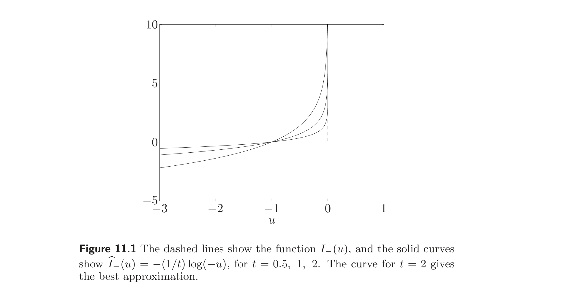
Substituting $\hat I_-$ for $I_-$ in (11.3) gives the approximation
$$ \begin{array}{ll} \text{minimize} & f_0(x) + \sum_{i=1}^m -(1/t)\log(-f_i(x)) \\ \text{subject to} & Ax = b. \end{array} \tag{11.4} $$
The objective here is convex, since $-(1/t)\log(-u)$ is convex and increasing in $u$, and differentiable. Assuming an appropriate closedness condition holds, Newton's method can be used to solve it.
The function
$$ \phi(x) = -\sum_{i=1}^m \log(-f_i(x)), \tag{11.5} $$
在 (11.3) 中以 $\hat I_-$ 代 $I_-$ 得到逼近
$$ \begin{array}{ll} \text{minimize} & f_0(x) + \sum_{i=1}^m -(1/t)\log(-f_i(x)) \\ \text{subject to} & Ax = b. \end{array} \tag{11.4} $$
此处目标凸（因 $-(1/t)\log(-u)$ 关于 $u$ 凸且递增）且可微。在适当的闭性条件成立时，可用牛顿法求解。
函数
$$ \phi(x) = -\sum_{i=1}^m \log(-f_i(x)), \tag{11.5} $$
with $\mathbf{dom}\, \phi = \{x \in \mathbb{R}^n \mid f_i(x) < 0, \, i = 1, \ldots, m\}$, is called the logarithmic barrier or log barrier for the problem (11.1). Its domain is the set of points that satisfy the inequality constraints of (11.1) strictly. No matter what value the positive parameter $t$ has, the logarithmic barrier grows without bound if $f_i(x) \to 0$, for any $i$.
其定义域为 $\mathbf{dom}\, \phi = \{x \in \mathbb{R}^n \mid f_i(x) < 0, \, i = 1, \ldots, m\}$，称为问题 (11.1) 的对数障碍函数（logarithmic barrier function）或对数障碍（log barrier）。其定义域是严格满足 (11.1) 不等式约束的点的集合。无论正参数 $t$ 取何值，只要任一 $f_i(x) \to 0$，对数障碍就无界增长。
Of course, the problem (11.4) is only an approximation of the original problem (11.3), so one question that arises immediately is how well a solution of (11.4) approximates a solution of the original problem (11.3). Intuition suggests, and we will soon confirm, that the quality of the approximation improves as the parameter $t$ grows.
On the other hand, when the parameter $t$ is large, the function $f_0 + (1/t)\phi$ is difficult to minimize by Newton's method, since its Hessian varies rapidly near the boundary of the feasible set. We will see that this problem can be circumvented by solving a sequence of problems of the form (11.4), increasing the parameter $t$ (and therefore the accuracy of the approximation) at each step, and starting each Newton minimization at the solution of the problem for the previous value of $t$.
当然，问题 (11.4) 只是对原问题 (11.3) 的逼近，因此立即产生一个问题：(11.4) 的解对原问题 (11.3) 的解的逼近程度如何。直觉提示——我们也将很快证实——逼近质量随参数 $t$ 增大而提高。
另一方面，当参数 $t$ 很大时，函数 $f_0 + (1/t)\phi$ 难以用牛顿法极小化，因为其 Hessian 在可行集边界附近变化剧烈。我们将看到，此困难可通过求解一序列形如 (11.4) 的问题来规避：每步增大参数 $t$（从而提高逼近精度），并以上一 $t$ 值对应问题的解作为下次牛顿极小化的起点。
For future reference, we note that the gradient and Hessian of the logarithmic barrier function $\phi$ are given by
$$ \nabla \phi(x) = \sum_{i=1}^m \frac{1}{-f_i(x)} \nabla f_i(x), $$
$$ \nabla^2 \phi(x) = \sum_{i=1}^m \frac{1}{f_i(x)^2} \nabla f_i(x) \nabla f_i(x)^T + \sum_{i=1}^m \frac{1}{-f_i(x)} \nabla^2 f_i(x) $$
(see §A.4.2 and §A.4.4).
为后续引用，我们指出对数障碍函数 $\phi$ 的梯度和 Hessian 为
$$ \nabla \phi(x) = \sum_{i=1}^m \frac{1}{-f_i(x)} \nabla f_i(x), $$
$$ \nabla^2 \phi(x) = \sum_{i=1}^m \frac{1}{f_i(x)^2} \nabla f_i(x) \nabla f_i(x)^T + \sum_{i=1}^m \frac{1}{-f_i(x)} \nabla^2 f_i(x) $$
（见 §A.4.2 和 §A.4.4）。
11.2.2 Central path
11.2.2 中心路径
We now consider in more detail the minimization problem (11.4). It will simplify notation later on if we multiply the objective by $t$, and consider the equivalent problem
$$ \begin{array}{ll} \text{minimize} & t f_0(x) + \phi(x) \\ \text{subject to} & Ax = b, \end{array} \tag{11.6} $$
which has the same minimizers. We assume for now that the problem (11.6) can be solved via Newton's method, and, in particular, that it has a unique solution for each $t > 0$. (We will discuss this assumption in more detail in §11.3.3.)
For $t > 0$ we define $x^\star(t)$ as the solution of (11.6). The central path associated with problem (11.1) is defined as the set of points $x^\star(t)$, $t > 0$, which we call the central points. Points on the central path are characterized by the following necessary and sufficient conditions: $x^\star(t)$ is strictly feasible, i.e., satisfies
$$ A x^\star(t) = b, \quad f_i(x^\star(t)) < 0, \quad i = 1, \ldots, m, $$
and there exists a $\hat \nu \in \mathbb{R}^p$ such that
$$ \begin{aligned} 0 &= t \nabla f_0(x^\star(t)) + \nabla \phi(x^\star(t)) + A^T \hat \nu \\ &= t \nabla f_0(x^\star(t)) + \sum_{i=1}^m \frac{1}{-f_i(x^\star(t))} \nabla f_i(x^\star(t)) + A^T \hat \nu \end{aligned} \tag{11.7} $$
holds.
现在更仔细地考虑极小化问题 (11.4)。为简化后续记号，我们将目标乘以 $t$，考虑等价问题
$$ \begin{array}{ll} \text{minimize} & t f_0(x) + \phi(x) \\ \text{subject to} & Ax = b, \end{array} \tag{11.6} $$
它有相同的极小点。我们暂时假设问题 (11.6) 可用牛顿法求解，特别地，对每个 $t > 0$ 有唯一解。（我们将在 §11.3.3 更详细地讨论此假设。）
对 $t > 0$，定义 $x^\star(t)$ 为 (11.6) 的解。问题 (11.1) 的中心路径（central path）定义为点集 $\{x^\star(t) \mid t > 0\}$，我们称其中的点为中心点。中心路径上的点由以下充要条件刻画：$x^\star(t)$ 严格可行，即满足
$$ A x^\star(t) = b, \quad f_i(x^\star(t)) < 0, \quad i = 1, \ldots, m, $$
且存在 $\hat \nu \in \mathbb{R}^p$ 使得
$$ \begin{aligned} 0 &= t \nabla f_0(x^\star(t)) + \nabla \phi(x^\star(t)) + A^T \hat \nu \\ &= t \nabla f_0(x^\star(t)) + \sum_{i=1}^m \frac{1}{-f_i(x^\star(t))} \nabla f_i(x^\star(t)) + A^T \hat \nu \end{aligned} \tag{11.7} $$
成立。
Example 11.1 Inequality form linear programming. The logarithmic barrier function for an LP in inequality form,
$$ \begin{array}{ll} \text{minimize} & c^T x \\ \text{subject to} & Ax \preceq b, \end{array} \tag{11.8} $$
is given by
$$ \phi(x) = -\sum_{i=1}^m \log(b_i - a_i^T x), \quad \mathbf{dom}\, \phi = \{x \mid Ax \prec b\}, $$
where $a_1^T, \ldots, a_m^T$ are the rows of $A$. The gradient and Hessian of the barrier function are
$$ \nabla \phi(x) = \sum_{i=1}^m \frac{1}{b_i - a_i^T x} a_i, \quad \nabla^2 \phi(x) = \sum_{i=1}^m \frac{1}{(b_i - a_i^T x)^2} a_i a_i^T, $$
or, more compactly,
$$ \nabla \phi(x) = A^T d, \quad \nabla^2 \phi(x) = A^T \mathbf{diag}(d)^2 A, $$
where the elements of $d \in \mathbb{R}^m$ are given by $d_i = 1/(b_i - a_i^T x)$. Since $x$ is strictly feasible, we have $d \succ 0$, so the Hessian of $\phi$ is nonsingular if and only if $A$ has rank $n$.
The centrality condition (11.7) is
$$ t c + \sum_{i=1}^m \frac{1}{b_i - a_i^T x} a_i = t c + A^T d = 0. \tag{11.9} $$
We can give a simple geometric interpretation of the centrality condition. At a point $x^\star(t)$ on the central path the gradient $\nabla \phi(x^\star(t))$, which is normal to the level set of $\phi$ through $x^\star(t)$, must be parallel to $-c$. In other words, the hyperplane $c^T x = c^T x^\star(t)$ is tangent to the level set of $\phi$ through $x^\star(t)$. Figure 11.2 shows an example with $m = 6$ and $n = 2$.
例 11.1 不等式形式线性规划。 不等式形式 LP
$$ \begin{array}{ll} \text{minimize} & c^T x \\ \text{subject to} & Ax \preceq b, \end{array} \tag{11.8} $$
的对数障碍函数为
$$ \phi(x) = -\sum_{i=1}^m \log(b_i - a_i^T x), \quad \mathbf{dom}\, \phi = \{x \mid Ax \prec b\}, $$
其中 $a_1^T, \ldots, a_m^T$ 为 $A$ 的各行。障碍函数的梯度和 Hessian 为
$$ \nabla \phi(x) = \sum_{i=1}^m \frac{1}{b_i - a_i^T x} a_i, \quad \nabla^2 \phi(x) = \sum_{i=1}^m \frac{1}{(b_i - a_i^T x)^2} a_i a_i^T, $$
或更紧凑地写作
$$ \nabla \phi(x) = A^T d, \quad \nabla^2 \phi(x) = A^T \mathbf{diag}(d)^2 A, $$
其中 $d \in \mathbb{R}^m$ 的元素为 $d_i = 1/(b_i - a_i^T x)$。由于 $x$ 严格可行，$d \succ 0$，故 $\phi$ 的 Hessian 非奇异当且仅当 $A$ 的秩为 $n$。
中心性条件 (11.7) 为
$$ t c + \sum_{i=1}^m \frac{1}{b_i - a_i^T x} a_i = t c + A^T d = 0. \tag{11.9} $$
中心性条件有简单的几何解释：在中心路径上的点 $x^\star(t)$ 处，梯度 $\nabla \phi(x^\star(t))$（它是过 $x^\star(t)$ 的 $\phi$ 等值集的法向量）必须与 $-c$ 平行。换言之，超平面 $c^T x = c^T x^\star(t)$ 与过 $x^\star(t)$ 的 $\phi$ 等值集相切。图 11.2 给出 $m = 6$、$n = 2$ 的例子。
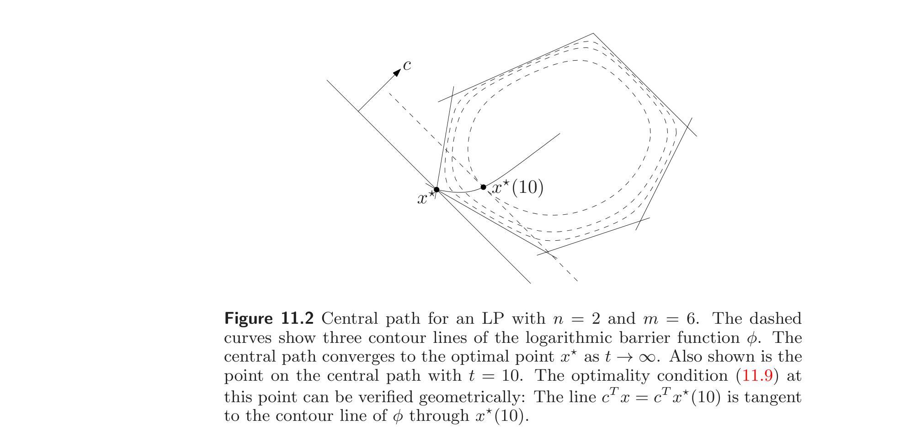
Dual points from central path
中心路径上的对偶点
From (11.7) we can derive an important property of the central path: Every central point yields a dual feasible point, and hence a lower bound on the optimal value $p^\star$. More specifically, define
$$ \lambda_i^\star(t) = -\frac{1}{t f_i(x^\star(t))}, \quad i = 1, \ldots, m, \qquad \nu^\star(t) = \hat \nu / t. \tag{11.10} $$
We claim that the pair $\lambda^\star(t), \nu^\star(t)$ is dual feasible.
First, it is clear that $\lambda^\star(t) \succ 0$ because $f_i(x^\star(t)) < 0$, $i = 1, \ldots, m$. By expressing the optimality conditions (11.7) as
$$ \nabla f_0(x^\star(t)) + \sum_{i=1}^m \lambda_i^\star(t) \nabla f_i(x^\star(t)) + A^T \nu^\star(t) = 0, $$
we see that $x^\star(t)$ minimizes the Lagrangian
$$ L(x, \lambda, \nu) = f_0(x) + \sum_{i=1}^m \lambda_i f_i(x) + \nu^T (Ax - b), $$
for $\lambda = \lambda^\star(t)$ and $\nu = \nu^\star(t)$, which means that $\lambda^\star(t), \nu^\star(t)$ is a dual feasible pair. Therefore the dual function $g(\lambda^\star(t), \nu^\star(t))$ is finite, and
$$ g(\lambda^\star(t), \nu^\star(t)) = f_0(x^\star(t)) + \sum_{i=1}^m \lambda_i^\star(t) f_i(x^\star(t)) + \nu^\star(t)^T (A x^\star(t) - b) = f_0(x^\star(t)) - m/t. $$
In particular, the duality gap associated with $x^\star(t)$ and the dual feasible pair $\lambda^\star(t), \nu^\star(t)$ is simply $m/t$. As an important consequence, we have
$$ f_0(x^\star(t)) - p^\star \le m/t, $$
i.e., $x^\star(t)$ is no more than $m/t$-suboptimal. This confirms the intuitive idea that $x^\star(t)$ converges to an optimal point as $t \to \infty$.
由 (11.7) 可导出中心路径的一个重要性质：每个中心点都给出一个对偶可行点，从而给出最优值 $p^\star$ 的一个下界。具体地，定义
$$ \lambda_i^\star(t) = -\frac{1}{t f_i(x^\star(t))}, \quad i = 1, \ldots, m, \qquad \nu^\star(t) = \hat \nu / t. \tag{11.10} $$
我们断言 $\lambda^\star(t), \nu^\star(t)$ 这一对是对偶可行的。
首先，$\lambda^\star(t) \succ 0$ 显然成立，因为 $f_i(x^\star(t)) < 0$（$i = 1, \ldots, m$）。将最优性条件 (11.7) 表为
$$ \nabla f_0(x^\star(t)) + \sum_{i=1}^m \lambda_i^\star(t) \nabla f_i(x^\star(t)) + A^T \nu^\star(t) = 0, $$
可知 $x^\star(t)$ 极小化 Lagrange 函数
$$ L(x, \lambda, \nu) = f_0(x) + \sum_{i=1}^m \lambda_i f_i(x) + \nu^T (Ax - b), $$
（取 $\lambda = \lambda^\star(t)$、$\nu = \nu^\star(t)$），即 $\lambda^\star(t), \nu^\star(t)$ 是对偶可行对。故对偶函数 $g(\lambda^\star(t), \nu^\star(t))$ 有限，且
$$ g(\lambda^\star(t), \nu^\star(t)) = f_0(x^\star(t)) + \sum_{i=1}^m \lambda_i^\star(t) f_i(x^\star(t)) + \nu^\star(t)^T (A x^\star(t) - b) = f_0(x^\star(t)) - m/t. $$
特别地，$x^\star(t)$ 与对偶可行对 $\lambda^\star(t), \nu^\star(t)$ 之间的对偶间隙恰为 $m/t$。由此得到一个重要推论：
$$ f_0(x^\star(t)) - p^\star \le m/t, $$
即 $x^\star(t)$ 的次优性不超过 $m/t$。这证实了直觉：当 $t \to \infty$ 时 $x^\star(t)$ 收敛到最优点。
Example 11.2 Inequality form linear programming. The dual of the inequality form LP (11.8) is
$$ \begin{array}{ll} \text{maximize} & -b^T \lambda \\ \text{subject to} & A^T \lambda + c = 0 \\ & \lambda \succeq 0. \end{array} $$
From the optimality conditions (11.9), it is clear that
$$ \lambda_i^\star(t) = \frac{1}{t(b_i - a_i^T x^\star(t))}, \quad i = 1, \ldots, m, $$
is dual feasible, with dual objective value
$$ -b^T \lambda^\star(t) = c^T x^\star(t) + (A x^\star(t) - b)^T \lambda^\star(t) = c^T x^\star(t) - m/t. $$
例 11.2 不等式形式线性规划。 不等式形式 LP (11.8) 的对偶为
$$ \begin{array}{ll} \text{maximize} & -b^T \lambda \\ \text{subject to} & A^T \lambda + c = 0 \\ & \lambda \succeq 0. \end{array} $$
由最优性条件 (11.9) 易见
$$ \lambda_i^\star(t) = \frac{1}{t(b_i - a_i^T x^\star(t))}, \quad i = 1, \ldots, m, $$
对偶可行，对偶目标值为
$$ -b^T \lambda^\star(t) = c^T x^\star(t) + (A x^\star(t) - b)^T \lambda^\star(t) = c^T x^\star(t) - m/t. $$
Interpretation via KKT conditions
通过 KKT 条件的解释
We can also interpret the central path conditions (11.7) as a continuous deformation of the KKT optimality conditions (11.2). A point $x$ is equal to $x^\star(t)$ if and only if there exists $\lambda, \nu$ such that
$$ \begin{array}{rl} Ax = b, & f_i(x) \le 0, \quad i = 1, \ldots, m \\ \lambda \succeq 0 & \\ \nabla f_0(x) + \sum_{i=1}^m \lambda_i \nabla f_i(x) + A^T \nu = 0 & \\ -\lambda_i f_i(x) = 1/t, & i = 1, \ldots, m. \end{array} \tag{11.11} $$
The only difference between the KKT conditions (11.2) and the centrality conditions (11.11) is that the complementarity condition $-\lambda_i f_i(x) = 0$ is replaced by the condition $-\lambda_i f_i(x) = 1/t$. In particular, for large $t$, $x^\star(t)$ and the associated dual point $\lambda^\star(t), \nu^\star(t)$ 'almost' satisfy the KKT optimality conditions for (11.1).
也可将中心路径条件 (11.7) 解释为 KKT 最优性条件 (11.2) 的连续形变。点 $x$ 等于 $x^\star(t)$ 当且仅当存在 $\lambda, \nu$ 使得
$$ \begin{array}{rl} Ax = b, & f_i(x) \le 0, \quad i = 1, \ldots, m \\ \lambda \succeq 0 & \\ \nabla f_0(x) + \sum_{i=1}^m \lambda_i \nabla f_i(x) + A^T \nu = 0 & \\ -\lambda_i f_i(x) = 1/t, & i = 1, \ldots, m. \end{array} \tag{11.11} $$
KKT 条件 (11.2) 与中心性条件 (11.11) 的唯一区别在于：互补条件 $-\lambda_i f_i(x) = 0$ 被替换为 $-\lambda_i f_i(x) = 1/t$。特别地，当 $t$ 很大时，$x^\star(t)$ 及其关联的对偶点 $\lambda^\star(t), \nu^\star(t)$ "几乎"满足 (11.1) 的 KKT 最优性条件。
Force field interpretation
力场解释
We can give a simple mechanics interpretation of the central path in terms of potential forces acting on a particle in the strictly feasible set $C$. For simplicity we assume that there are no equality constraints.
We associate with each constraint the force
$$ F_i(x) = -\nabla(-\log(-f_i(x))) = \frac{1}{f_i(x)} \nabla f_i(x) $$
acting on the particle when it is at position $x$. The potential associated with the total force field generated by the constraints is the logarithmic barrier $\phi$. As the particle moves toward the boundary of the feasible set, it is strongly repelled by the forces generated by the constraints.
Now we imagine another force acting on the particle, given by
$$ F_0(x) = -t \nabla f_0(x), $$
when the particle is at position $x$. This objective force field acts to pull the particle in the negative gradient direction, i.e., toward smaller $f_0$. The parameter $t$ scales the objective force, relative to the constraint forces.
The central point $x^\star(t)$ is the point where the constraint forces exactly balance the objective force felt by the particle. As the parameter $t$ increases, the particle is more strongly pulled toward the optimal point, but it is always trapped in $C$ by the barrier potential, which becomes infinite as the particle approaches the boundary.
可用势能力对严格可行集 $C$ 中粒子的作用，给出中心路径的一个简单力学解释。为简单起见，假设没有等式约束。
对每个约束关联一个力
$$ F_i(x) = -\nabla(-\log(-f_i(x))) = \frac{1}{f_i(x)} \nabla f_i(x) $$
作用于位于 $x$ 处的粒子。约束产生的总力场所对应的势能就是对数障碍 $\phi$。当粒子靠近可行集边界时，约束产生的力强烈排斥它。
设想另一个力作用于粒子，
$$ F_0(x) = -t \nabla f_0(x), $$
位于 $x$ 处。此目标力场将粒子沿负梯度方向拉，即拉向 $f_0$ 更小的方向。参数 $t$ 按相对约束力的比例缩放目标力。
中心点 $x^\star(t)$ 是约束力与粒子所受目标力恰好平衡的点。随着 $t$ 增大，粒子被更强地拉向最优点，但它始终被障碍势能困在 $C$ 内——当粒子接近边界时该势能趋于无穷。
Example 11.3 Force field interpretation for inequality form LP. The force field associated with the $i$th constraint of the LP (11.8) is
$$ F_i(x) = \frac{-a_i}{b_i - a_i^T x}. $$
This force is in the direction of the inward pointing normal to the constraint plane $H_i = \{x \mid a_i^T x = b_i\}$, and has magnitude inversely proportional to the distance to $H_i$, i.e.,
$$ \|F_i(x)\|_2 = \frac{\|a_i\|_2}{b_i - a_i^T x} = \frac{1}{\mathbf{dist}(x, H_i)}. $$
In other words, each constraint hyperplane has an associated repulsive force, given by the inverse distance to the hyperplane.
The term $t c^T x$ is the potential associated with a constant force $-tc$ on the particle. This 'objective force' pushes the particle in the direction of low cost. Thus, $x^\star(t)$ is the equilibrium position of the particle when it is subject to the inverse-distance constraint forces, and the objective force $-tc$. When $t$ is very large, the particle is pushed almost to the optimal point. The strong objective force is balanced by the opposing constraint forces, which are large because we are near the feasible boundary. Figure 11.3 illustrates this interpretation for a small LP with $n = 2$ and $m = 5$. The lefthand plot shows $x^\star(t)$ for $t = 1$, as well as the constraint forces acting on it, which balance the objective force. The righthand plot shows $x^\star(t)$ and the associated forces for $t = 3$. The larger value of objective force moves the particle closer to the optimal point.
例 11.3 不等式形式 LP 的力场解释。 LP (11.8) 第 $i$ 个约束关联的力场为
$$ F_i(x) = \frac{-a_i}{b_i - a_i^T x}. $$
此力沿约束平面 $H_i = \{x \mid a_i^T x = b_i\}$ 内法向，大小与到 $H_i$ 的距离成反比，即
$$ \|F_i(x)\|_2 = \frac{\|a_i\|_2}{b_i - a_i^T x} = \frac{1}{\mathbf{dist}(x, H_i)}. $$
换言之，每个约束超平面都关联一个排斥力，由到超平面的距离的倒数给出。
项 $t c^T x$ 是粒子所受常力 $-tc$ 对应的势能。此"目标力"将粒子推向低成本方向。于是 $x^\star(t)$ 是粒子在反距离约束力和目标力 $-tc$ 共同作用下的平衡位置。当 $t$ 很大时，粒子几乎被推到最优点。强大的目标力由反向约束力平衡，后者因接近可行边界而很大。图 11.3 以 $n = 2$、$m = 5$ 的小 LP 说明此解释。左图为 $t = 1$ 时的 $x^\star(t)$ 及作用于其上的约束力（与目标力平衡）。右图为 $t = 3$ 时的 $x^\star(t)$ 及相关力。较大的目标力将粒子推得更接近最优点。
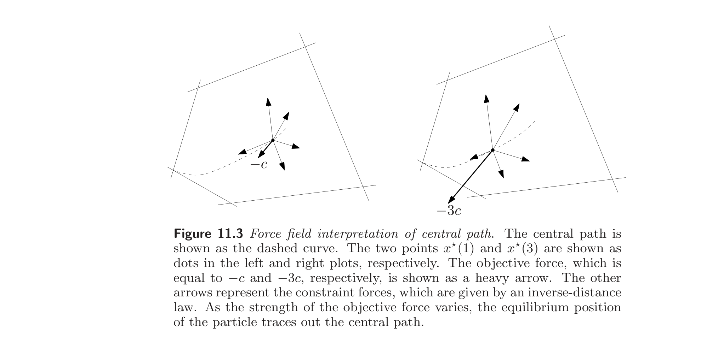
11.3 The barrier method
11.3 障碍法
We have seen that the point $x^\star(t)$ is $m/t$-suboptimal, and that a certificate of this accuracy is provided by the dual feasible pair $\lambda^\star(t), \nu^\star(t)$. This suggests a very straightforward method for solving the original problem (11.1) with a guaranteed specified accuracy $\epsilon$: We simply take $t = m/\epsilon$ and solve the equality constrained problem
$$ \begin{array}{ll} \text{minimize} & (m/\epsilon) f_0(x) + \phi(x) \\ \text{subject to} & Ax = b \end{array} $$
using Newton's method. This method could be called the unconstrained minimization method, since it allows us to solve the inequality constrained problem (11.1) to a guaranteed accuracy by solving an unconstrained, or linearly constrained, problem. Although this method can work well for small problems, good starting points, and moderate accuracy (i.e., $\epsilon$ not too small), it does not work well in other cases. As a result it is rarely, if ever, used.
我们已看到点 $x^\star(t)$ 是 $m/t$-次优的，且对偶可行对 $\lambda^\star(t), \nu^\star(t)$ 提供此精度的证书。这提示了一种非常直接的方法，以给定精度 $\epsilon$ 求解原问题 (11.1)：取 $t = m/\epsilon$ 并用牛顿法求解等式约束问题
$$ \begin{array}{ll} \text{minimize} & (m/\epsilon) f_0(x) + \phi(x) \\ \text{subject to} & Ax = b \end{array} $$
此方法可称为无约束极小化方法，因为它通过求解一个无约束（或线性约束）问题，以给定精度求解不等式约束问题 (11.1)。尽管对小问题、好初始点及中等精度（即 $\epsilon$ 不太小）此法可工作良好，但在其他情形下表现不佳。因此它几乎不被使用。
11.3.1 The barrier method
11.3.1 障碍法
A simple extension of the unconstrained minimization method does work well. It is based on solving a sequence of unconstrained (or linearly constrained) minimization problems, using the last point found as the starting point for the next unconstrained minimization problem. In other words, we compute $x^\star(t)$ for a sequence of increasing values of $t$, until $t \ge m/\epsilon$, which guarantees that we have an $\epsilon$-suboptimal solution of the original problem. When the method was first proposed by Fiacco and McCormick in the 1960s, it was called the sequential unconstrained minimization technique (SUMT). Today the method is usually called the barrier method or path-following method. A simple version of the method is as follows.
无约束极小化方法的一个简单扩展确实有效。它基于求解一序列无约束（或线性约束）极小化问题，以上次找到的点作为下一次无约束极小化的起点。即对一序列递增的 $t$ 计算 $x^\star(t)$，直到 $t \ge m/\epsilon$，从而保证得到原问题的 $\epsilon$-次优解。此方法最初由 Fiacco 和 McCormick 在 1960 年代提出时，称为序列无约束极小化技术（sequential unconstrained minimization technique, SUMT）。如今通常称为障碍法或路径跟踪法。方法的一个简单版本如下。
Algorithm 11.1 Barrier method.
given strictly feasible $x$, $t := t^{(0)} > 0$, $\mu > 1$, tolerance $\epsilon > 0$.
repeat
1. Centering step. Compute $x^\star(t)$ by minimizing $t f_0 + \phi$, subject to $Ax = b$, starting at $x$.
2. Update. $x := x^\star(t)$.
3. Stopping criterion. quit if $m/t < \epsilon$.
4. Increase t. $t := \mu t$.
算法 11.1 障碍法。
给定严格可行的 $x$，$t := t^{(0)} > 0$，$\mu > 1$，容差 $\epsilon > 0$。
重复
1. 中心化步。 以 $x$ 为起点，在 $Ax = b$ 约束下极小化 $t f_0 + \phi$，计算 $x^\star(t)$。
2. 更新。 $x := x^\star(t)$。
3. 停止准则。 若 $m/t < \epsilon$ 则退出。
4. 增大 t。 $t := \mu t$。
At each iteration (except the first one) we compute the central point $x^\star(t)$ starting from the previously computed central point, and then increase $t$ by a factor $\mu > 1$. The algorithm can also return $\lambda = \lambda^\star(t)$, and $\nu = \nu^\star(t)$, a dual $\epsilon$-suboptimal point, or certificate for $x$.
We refer to each execution of step 1 as a centering step (since a central point is being computed) or an outer iteration, and to the first centering step (the computation of $x^\star(t^{(0)})$) as the initial centering step. (Thus the simple algorithm with $t^{(0)} = m/\epsilon$ consists of only the initial centering step.) Although any method for linearly constrained minimization can be used in step 1, we will assume that Newton's method is used. We refer to the Newton iterations or steps executed during the centering step as inner iterations. At each inner step, we have a primal feasible point; we have a dual feasible point, however, only at the end of each outer (centering) step.
每次迭代（除第一次外）都从上次计算的中心点出发计算中心点 $x^\star(t)$，然后将 $t$ 增大 $\mu > 1$ 倍。算法也可返回 $\lambda = \lambda^\star(t)$ 和 $\nu = \nu^\star(t)$，即 $x$ 的对偶 $\epsilon$-次优点或证书。
我们把步骤 1 的每次执行称为中心化步（因计算的是中心点）或外层迭代，第一次中心化步（即计算 $x^\star(t^{(0)})$）称为初始中心化步。（因此 $t^{(0)} = m/\epsilon$ 的简单算法仅含初始中心化步。）虽然步骤 1 中可用任何线性约束极小化方法，我们将假设使用牛顿法。我们把中心化步中执行的牛顿迭代或步骤称为内层迭代。每个内层步中我们有原始可行点；但只有在每个外层（中心化）步结束时才有对偶可行点。
Accuracy of centering
中心化精度
We should make some comments on the accuracy to which we solve the centering problems. Computing $x^\star(t)$ exactly is not necessary since the central path has no significance beyond the fact that it leads to a solution of the original problem as $t \to \infty$; inexact centering will still yield a sequence of points $x^{(k)}$ that converges to an optimal point. Inexact centering, however, means that the points $\lambda^\star(t), \nu^\star(t)$, computed from (11.10), are not exactly dual feasible. This can be corrected by adding a correction term to the formula (11.10), which yields a dual feasible point provided the computed $x$ is near the central path, i.e., $x^\star(t)$ (see exercise 11.9).
On the other hand, the cost of computing an extremely accurate minimizer of $t f_0 + \phi$, as compared to the cost of computing a good minimizer of $t f_0 + \phi$, is only marginally more, i.e., a few Newton steps at most. For this reason it is not unreasonable to assume exact centering.
应对中心化问题的求解精度作些说明。精确计算 $x^\star(t)$ 并非必要，因为中心路径的意义仅在于当 $t \to \infty$ 时它导向原问题的解；不精确的中心化仍会产生收敛到最优点的序列 $x^{(k)}$。然而不精确的中心化意味着由 (11.10) 计算的点 $\lambda^\star(t), \nu^\star(t)$ 并非严格对偶可行。这可通过在公式 (11.10) 中加一个修正项来纠正：只要计算所得 $x$ 接近中心路径即 $x^\star(t)$，该修正就给出对偶可行点（见习题 11.9）。
另一方面，与计算 $t f_0 + \phi$ 的一个好极小点相比，计算其极其精确的极小点的代价只是稍高，即至多多几步牛顿步。因此假设精确中心化并非不合理。
Choice of µ
µ 的选取
The choice of the parameter $\mu$ involves a trade-off in the number of inner and outer iterations required. If $\mu$ is small (i.e., near 1) then at each outer iteration $t$ increases by a small factor. As a result the initial point for the Newton process, i.e., the previous iterate $x$, is a very good starting point, and the number of Newton steps needed to compute the next iterate is small. Thus for small $\mu$ we expect a small number of Newton steps per outer iteration, but of course a large number of outer iterations since each outer iteration reduces the gap by only a small amount. In this case the iterates (and indeed, the iterates of the inner iterations as well) closely follow the central path. This explains the alternate name path-following method.
On the other hand if $\mu$ is large we have the opposite situation. After each outer iteration $t$ increases a large amount, so the current iterate is probably not a very good approximation of the next iterate. Thus we expect many more inner iterations. This 'aggressive' updating of $t$ results in fewer outer iterations, since the duality gap is reduced by the large factor $\mu$ at each outer iteration, but more inner iterations. With $\mu$ large, the iterates are widely separated on the central path; the inner iterates veer way off the central path.
参数 $\mu$ 的选取涉及内层与外层迭代次数之间的权衡。若 $\mu$ 较小（即接近 1），则每次外层迭代 $t$ 只以小因子增大。结果牛顿过程的初始点（即上次迭代 $x$）是非常好的起点，计算下次迭代所需牛顿步数较少。故 $\mu$ 较小时，每次外层迭代的牛顿步数少，但外层迭代次数多（因每次外层迭代只以小量减小间隙）。此时迭代点（以及内层迭代的迭代点）紧密跟随中心路径。这解释了另一名称路径跟踪法。
另一方面，若 $\mu$ 较大则情况相反。每次外层迭代后 $t$ 大幅增大，当前迭代可能不是下次迭代的好逼近。故我们预期内层迭代更多。这种对 $t$ 的"激进"更新使外层迭代更少（因每次外层迭代以大因子 $\mu$ 减小对偶间隙），但内层迭代更多。$\mu$ 大时，迭代点在中心路径上相距甚远；内层迭代点偏离中心路径很远。
This trade-off in the choice of $\mu$ is confirmed both in practice and, as we will see, in theory. In practice, small values of $\mu$ (i.e., near one) result in many outer iterations, with just a few Newton steps for each outer iteration. For $\mu$ in a fairly large range, from around 3 to 100 or so, the two effects nearly cancel, so the total number of Newton steps remains approximately constant. This means that the choice of $\mu$ is not particularly critical; values from around 10 to 20 or so seem to work well. When the parameter $\mu$ is chosen to give the best worst-case bound on the total number of Newton steps required, values of $\mu$ near one are used.
$\mu$ 选取的这一权衡在实践和理论（如我们将看到的）中都得到证实。实践中，小 $\mu$（接近 1）导致外层迭代多、每次外层迭代牛顿步少。在较大范围内（约从 3 到 100），两种效应几乎抵消，故牛顿步总数大致不变。这意味着 $\mu$ 的选取并非关键；约 10 到 20 的值效果良好。当选择 $\mu$ 以给出所需牛顿步总数的最佳最坏情形界时，使用接近 1 的 $\mu$ 值。
Choice of t(0)
t(0) 的选取
Another important issue is the choice of initial value of $t$. Here the trade-off is simple: If $t^{(0)}$ is chosen too large, the first outer iteration will require too many iterations. If $t^{(0)}$ is chosen too small, the algorithm will require extra outer iterations, and possibly too many inner iterations in the first centering step.
Since $m/t^{(0)}$ is the duality gap that will result from the first centering step, one reasonable choice is to choose $t^{(0)}$ so that $m/t^{(0)}$ is approximately of the same order as $f_0(x^{(0)}) - p^\star$, or $\mu$ times this amount. For example, if a dual feasible point $\lambda, \nu$ is known, with duality gap $\eta = f_0(x^{(0)}) - g(\lambda, \nu)$, then we can take $t^{(0)} = m/\eta$. Thus, in the first outer iteration we simply compute a pair with the same duality gap as the initial primal and dual feasible points.
Another possibility is suggested by the central path condition (11.7). We can interpret
$$ \inf_\nu \| t \nabla f_0(x^{(0)}) + \nabla \phi(x^{(0)}) + A^T \nu \|_2 \tag{11.12} $$
as a measure for the deviation of $x^{(0)}$ from the point $x^\star(t)$, and choose for $t^{(0)}$ the value that minimizes (11.12). (This value of $t$ and $\nu$ can be found by solving a least-squares problem.)
A variation on this approach uses an affine-invariant measure of deviation between $x$ and $x^\star(t)$ in place of the Euclidean norm. We choose $t$ and $\nu$ that minimize
$$ \alpha(t, \nu) = \left(t \nabla f_0(x^{(0)}) + \nabla \phi(x^{(0)}) + A^T \nu\right)^T H_0^{-1} \left(t \nabla f_0(x^{(0)}) + \nabla \phi(x^{(0)}) + A^T \nu\right), $$
where
$$ H_0 = t \nabla^2 f_0(x^{(0)}) + \nabla^2 \phi(x^{(0)}). $$
(It can be shown that $\inf_\nu \alpha(t, \nu)$ is the square of the Newton decrement of $t f_0 + \phi$ at $x^{(0)}$.) Since $\alpha$ is a quadratic-over-linear function of $\nu$ and $t$, it is convex.
另一个重要问题是 $t$ 的初值选取。此处的权衡很简单：若 $t^{(0)}$ 选得太大，第一次外层迭代将需要太多迭代。若 $t^{(0)}$ 选得太小，算法需要额外外层迭代，且第一次中心化步可能内层迭代过多。
由于 $m/t^{(0)}$ 是第一次中心化步产生的对偶间隙，一个合理的选择是选取 $t^{(0)}$ 使 $m/t^{(0)}$ 与 $f_0(x^{(0)}) - p^\star$ 同量级，或为其 $\mu$ 倍。例如，若已知对偶可行点 $\lambda, \nu$，对偶间隙为 $\eta = f_0(x^{(0)}) - g(\lambda, \nu)$，则可取 $t^{(0)} = m/\eta$。于是第一次外层迭代就计算一个与初始原始可行点和对偶可行点具有相同对偶间隙的点对。
另一种可能由中心路径条件 (11.7) 启发。我们可将
$$ \inf_\nu \| t \nabla f_0(x^{(0)}) + \nabla \phi(x^{(0)}) + A^T \nu \|_2 \tag{11.12} $$
解释为 $x^{(0)}$ 偏离点 $x^\star(t)$ 程度的度量，并选取使 (11.12) 最小的 $t^{(0)}$。（此 $t$ 和 $\nu$ 可通过求解最小二乘问题得到。）
此方法的一种变体用仿射不变的偏差度量代替欧氏范数。选取最小化
$$ \alpha(t, \nu) = \left(t \nabla f_0(x^{(0)}) + \nabla \phi(x^{(0)}) + A^T \nu\right)^T H_0^{-1} \left(t \nabla f_0(x^{(0)}) + \nabla \phi(x^{(0)}) + A^T \nu\right) $$
的 $t$ 和 $\nu$，其中
$$ H_0 = t \nabla^2 f_0(x^{(0)}) + \nabla^2 \phi(x^{(0)}). $$
（可证 $\inf_\nu \alpha(t, \nu)$ 为 $t f_0 + \phi$ 在 $x^{(0)}$ 处牛顿递降的平方。）由于 $\alpha$ 是 $\nu$ 和 $t$ 的二次-线性函数，它是凸的。
Infeasible start Newton method
不可行起始牛顿法
In one variation on the barrier method, an infeasible start Newton method (described in §10.3) is used for the centering steps. Thus, the barrier method is initialized with a point $x^{(0)}$ that satisfies $x^{(0)} \in \mathbf{dom}\, f_0$ and $f_i(x^{(0)}) < 0$, $i = 1, \ldots, m$, but not necessarily $A x^{(0)} = b$. Assuming the problem is strictly feasible, a full Newton step is taken at some point during the first centering step, and thereafter, the iterates are all primal feasible, and the algorithm coincides with the (standard) barrier method.
障碍法的一种变体在中心化步中使用不可行起始牛顿法（见 §10.3）。因此，障碍法以一个满足 $x^{(0)} \in \mathbf{dom}\, f_0$ 和 $f_i(x^{(0)}) < 0$（$i = 1, \ldots, m$）、但不一定满足 $A x^{(0)} = b$ 的点 $x^{(0)}$ 初始化。在问题严格可行的假设下，第一次中心化步中的某点处会采取完整牛顿步，此后所有迭代点均原始可行，算法与（标准）障碍法一致。
11.3.2 Examples
11.3.2 例子
Linear programming in inequality form
不等式形式线性规划
Our first example is a small LP in inequality form,
$$ \begin{array}{ll} \text{minimize} & c^T x \\ \text{subject to} & Ax \preceq b \end{array} $$
with $A \in \mathbb{R}^{100 \times 50}$. The data were generated randomly, in such a way that the problem is strictly primal and dual feasible, with optimal value $p^\star = 1$.
The initial point $x^{(0)}$ is on the central path, with a duality gap of 100. The barrier method is used to solve the problem, and terminated when the duality gap is less than $10^{-6}$. The centering problems are solved by Newton's method with backtracking, using parameters $\alpha = 0.01$, $\beta = 0.5$. The stopping criterion for Newton's method is $\lambda(x)^2/2 \le 10^{-5}$, where $\lambda(x)$ is the Newton decrement of the function $t c^T x + \phi(x)$.
第一个例子是不等式形式的小 LP，
$$ \begin{array}{ll} \text{minimize} & c^T x \\ \text{subject to} & Ax \preceq b \end{array} $$
其中 $A \in \mathbb{R}^{100 \times 50}$。数据随机生成，使问题严格原始和对偶可行，最优值 $p^\star = 1$。
初始点 $x^{(0)}$ 在中心路径上，对偶间隙为 100。用障碍法求解，对偶间隙小于 $10^{-6}$ 时终止。中心化问题用带回溯的牛顿法求解，参数 $\alpha = 0.01$、$\beta = 0.5$。牛顿法停止准则为 $\lambda(x)^2/2 \le 10^{-5}$，其中 $\lambda(x)$ 为函数 $t c^T x + \phi(x)$ 的牛顿递降。
The progress of the barrier method, for three values of the parameter $\mu$, is shown in figure 11.4. The vertical axis shows the duality gap on a log scale. The horizontal axis shows the cumulative total number of inner iterations, i.e., Newton steps, which is the natural measure of computational effort. Each of the plots has a staircase shape, with each stair associated with one outer iteration. The width of each stair tread (i.e., horizontal portion) is the number of Newton steps required for that outer iteration. The height of each stair riser (i.e., the vertical portion) is exactly equal to (a factor of) $\mu$, since the duality gap is reduced by the factor $\mu$ at the end of each outer iteration.
The plots illustrate several typical features of the barrier method. First of all, the method works very well, with approximately linear convergence of the duality gap. This is a consequence of the approximately constant number of Newton steps required to re-center, for each value of $\mu$. For $\mu = 50$ and $\mu = 150$, the barrier method solves the problem with a total number of Newton steps between 35 and 40.
The plots in figure 11.4 clearly show the trade-off in the choice of $\mu$. For $\mu = 2$, the treads are short; the number of Newton steps required to re-center is around 2 or 3. But the risers are also short, since the duality gap reduction per outer iteration is only a factor of 2. At the other extreme, when $\mu = 150$, the treads are longer, typically around 7 Newton steps, but the risers are also much larger, since the duality gap is reduced by the factor 150 in each outer iteration.
The trade-off in choice of $\mu$ is further examined in figure 11.5. We use the barrier method to solve the LP, terminating when the duality gap is smaller than $10^{-3}$, for 25 values of $\mu$ between 1.2 and 200. The plot shows the total number of Newton steps required to solve the problem, as a function of the parameter $\mu$.
障碍法在三个 $\mu$ 值下的进展见图 11.4。纵轴为对偶间隙（对数刻度）。横轴为内层迭代（即牛顿步）的累计总数，这是计算量的自然度量。每张图呈阶梯形，每一级对应一次外层迭代。阶梯踏面（水平部分）的宽度是该外层迭代所需的牛顿步数。阶梯立面（垂直部分）的高度恰好等于（一个因子）$\mu$，因为每次外层迭代结束时对偶间隙以因子 $\mu$ 减小。
这些图展示了障碍法的若干典型特征。首先，方法表现很好，对偶间隙近似线性收敛。这是每个 $\mu$ 值下重新中心化所需牛顿步数近似为常数的结果。对 $\mu = 50$ 和 $\mu = 150$，障碍法以 35 到 40 步总数求解问题。
图 11.4 清楚地显示了 $\mu$ 选取的权衡。$\mu = 2$ 时踏面短，重新中心化所需牛顿步约 2 或 3 步；但立面也短，因每次外层迭代对偶间隙仅以因子 2 减小。另一极端，$\mu = 150$ 时踏面更长，通常约 7 步牛顿步；但立面也大得多，因每次外层迭代对偶间隙以因子 150 减小。
图 11.5 进一步考察 $\mu$ 选取的权衡。用障碍法求解 LP，对偶间隙小于 $10^{-3}$ 时终止，$\mu$ 取 1.2 到 200 间的 25 个值。图为所需牛顿步总数关于 $\mu$ 的函数。
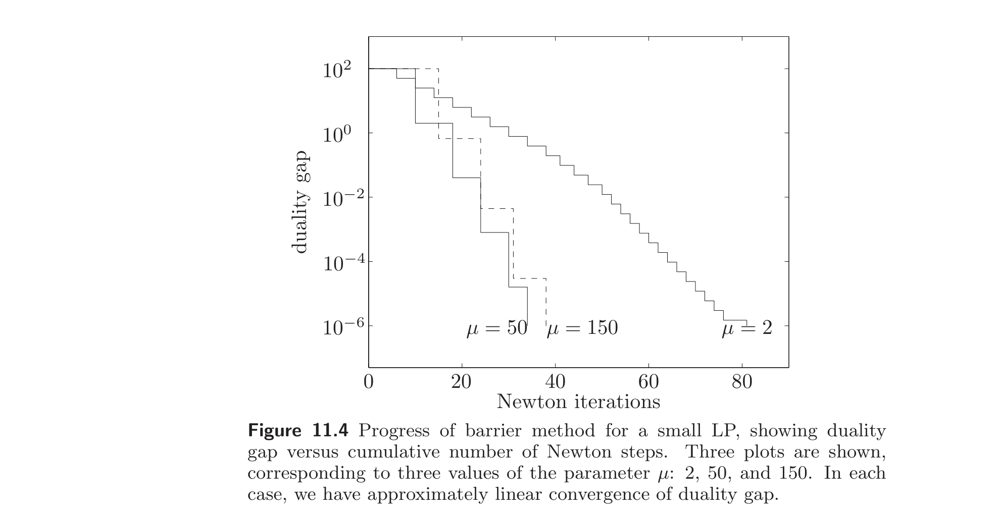
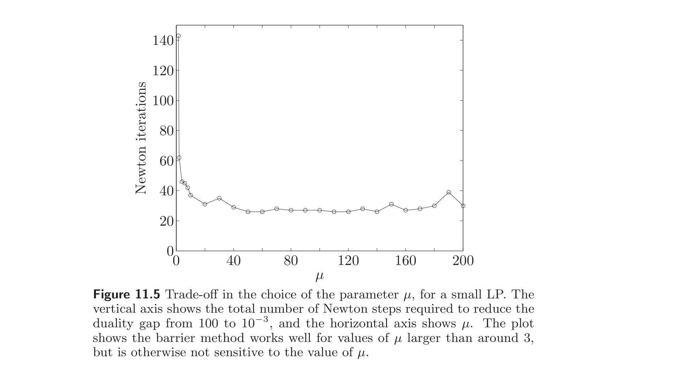
This plot shows that the barrier method performs very well for a wide range of values of $\mu$, from around 3 to 200. As our intuition suggests, the total number of Newton steps rises when $\mu$ is too small, due to the larger number of outer iterations required. One interesting observation is that the total number of Newton steps does not vary much for values of $\mu$ larger than around 3. Thus, as $\mu$ increases over this range, the decrease in the number of outer iterations is offset by an increase in the number of Newton steps per outer iteration. For even larger values of $\mu$, the performance of the barrier method becomes less predictable (i.e., more dependent on the particular problem instance). Since the performance does not improve with larger values of $\mu$, a good choice is in the range 10 – 100.
此图表明障碍法在 $\mu$ 的很大范围（约从 3 到 200）内表现良好。如直觉所示，$\mu$ 太小时所需牛顿步总数因外层迭代增多而上升。一个有趣观察是 $\mu$ 大于约 3 后牛顿步总数变化不大。因此 $\mu$ 在此范围内增大时，外层迭代数的减少被每次外层迭代牛顿步数的增加抵消。$\mu$ 更大时，障碍法表现变得较不可预测（即更依赖具体问题实例）。由于性能不随 $\mu$ 增大而改善，10–100 是好的选取范围。
Geometric programming
几何规划
We consider a geometric program in convex form,
$$ \begin{array}{ll} \text{minimize} & \log\left(\sum_{k=1}^{K_0} \exp(a_{0k}^T x + b_{0k})\right) \\ \text{subject to} & \log\left(\sum_{k=1}^{K_i} \exp(a_{ik}^T x + b_{ik})\right) \le 0, \quad i = 1, \ldots, m, \end{array} $$
with variable $x \in \mathbb{R}^n$, and associated logarithmic barrier
$$ \phi(x) = -\sum_{i=1}^m \log\left(-\log\sum_{k=1}^{K_i} \exp(a_{ik}^T x + b_{ik})\right). $$
The problem instance we consider has $n = 50$ variables and $m = 100$ inequalities (like the small LP considered above). The objective and constraint functions all have $K_i = 5$ terms. The problem instance was generated randomly, in such a way that it is strictly primal and dual feasible, with optimal value one.
We start with a point $x^{(0)}$ on the central path, with a duality gap of 100. The barrier method is used to solve the problem, with parameters $\mu = 2$, $\mu = 50$, and $\mu = 150$, and terminated when the duality gap is less than $10^{-6}$. The centering problems are solved using Newton's method, with the same parameter values as in the LP example, i.e., $\alpha = 0.01$, $\beta = 0.5$, and stopping criterion $\lambda(x)^2/2 \le 10^{-5}$.
Figure 11.6 shows the duality gap versus cumulative number of Newton steps. This plot is very similar to the plot for LP, shown in figure 11.4. In particular, we see an approximately constant number of Newton steps required per centering step, and therefore approximately linear convergence of the duality gap.
The variation of the total number of Newton steps required to solve the problem, versus the parameter $\mu$, is very similar to that in the LP example. For this GP, the total number of Newton steps required to reduce the duality gap below $10^{-3}$ is around 30 (ranging from around 20 to 40 or so) for values of $\mu$ between 10 and 200. So here, too, a good choice of $\mu$ is in the range 10 – 100.
考虑凸形式的几何规划，
$$ \begin{array}{ll} \text{minimize} & \log\left(\sum_{k=1}^{K_0} \exp(a_{0k}^T x + b_{0k})\right) \\ \text{subject to} & \log\left(\sum_{k=1}^{K_i} \exp(a_{ik}^T x + b_{ik})\right) \le 0, \quad i = 1, \ldots, m, \end{array} $$
变量 $x \in \mathbb{R}^n$，关联的对数障碍为
$$ \phi(x) = -\sum_{i=1}^m \log\left(-\log\sum_{k=1}^{K_i} \exp(a_{ik}^T x + b_{ik})\right). $$
所考虑的问题实例有 $n = 50$ 个变量和 $m = 100$ 个不等式（与上面小 LP 类似）。目标和约束函数都有 $K_i = 5$ 项。实例随机生成，使其严格原始和对偶可行，最优值为 1。
从中心路径上对偶间隙为 100 的点 $x^{(0)}$ 出发。用障碍法求解，参数 $\mu = 2$、$\mu = 50$、$\mu = 150$，对偶间隙小于 $10^{-6}$ 时终止。中心化问题用牛顿法求解，参数同 LP 例子：$\alpha = 0.01$、$\beta = 0.5$，停止准则 $\lambda(x)^2/2 \le 10^{-5}$。
图 11.6 为对偶间隙对累计牛顿步数。此图与 LP 的图 11.4 非常相似。特别地，每次中心化步所需牛顿步数近似常数，故对偶间隙近似线性收敛。
所需牛顿步总数关于 $\mu$ 的变化与 LP 例子非常相似。对此 GP，$\mu$ 在 10 到 200 之间时，将 $10^{-3}$ 对偶间隙降至 $10^{-3}$ 以下所需牛顿步总数约 30（约 20 到 40）。故此处 $\mu$ 的好选取范围也是 10–100。
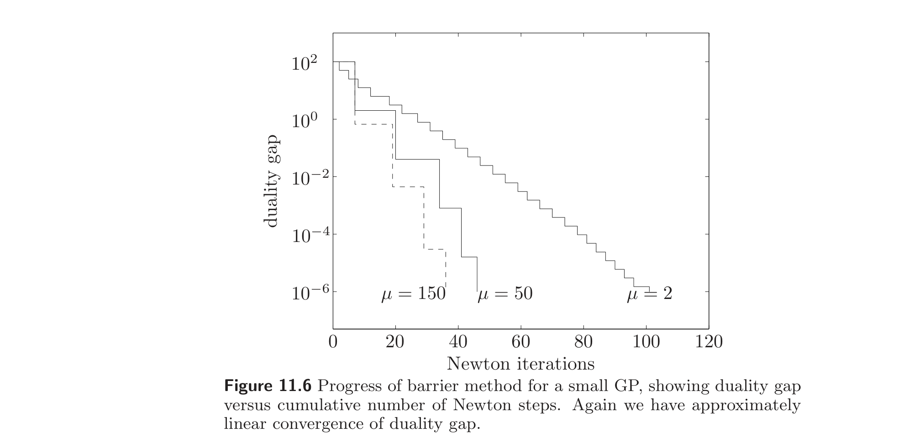
A family of standard form LPs
一类标准形式 LP
In the examples above we examined the progress of the barrier method, in terms of duality gap versus cumulative number of Newton steps, for a randomly generated instance of an LP and a GP, with similar dimensions. The results for the two examples are remarkably similar; each shows approximately linear convergence of duality gap with the number of Newton steps. We also examined the variation in performance with the parameter $\mu$, and found essentially the same results in the two cases. For $\mu$ above around 10, the barrier method performs very well, requiring around 30 Newton steps to bring the duality gap down from $10^2$ to $10^{-6}$. In both cases, the choice of $\mu$ hardly affects the total number of Newton steps required (provided $\mu$ is larger than 10 or so).
In this section we examine the performance of the barrier method as a function of the problem dimensions. We consider LPs in standard form,
$$ \begin{array}{ll} \text{minimize} & c^T x \\ \text{subject to} & Ax = b, \\ & x \succeq 0 \end{array} $$
with $A \in \mathbb{R}^{m \times n}$, and explore the total number of Newton steps required as a function of the number of variables $n$ and number of equality constraints $m$, for a family of randomly generated problem instances. We take $n = 2m$, i.e., twice as many variables as constraints.
The problems were generated as follows. The elements of $A$ are independent and identically distributed, with zero mean, unit variance normal distribution $N(0, 1)$. We take $b = A x^{(0)}$ where the elements of $x^{(0)}$ are independent, and uniformly distributed in $[0, 1]$. This ensures that the problem is strictly primal feasible, since $x^{(0)} \succ 0$ is feasible. To construct the cost vector $c$, we first compute a vector $z \in \mathbb{R}^m$ with elements distributed according to $N(0, 1)$ and a vector $s \in \mathbb{R}^n$ with elements from a uniform distribution on $[0, 1]$. We then take $c = A^T z + s$. This guarantees that the problem is strictly dual feasible, since $A^T z \prec c$.
The algorithm parameters we use are $\mu = 100$, and the same parameters for the centering steps in the examples above: backtracking parameters $\alpha = 0.01$, $\beta = 0.5$, and stopping criterion $\lambda(x)^2/2 \le 10^{-5}$. The initial point is on the central path with $t^{(0)} = 1$ (i.e., gap $n$). The algorithm is terminated when the initial duality gap is reduced by a factor $10^4$, i.e., after completing two outer iterations.
Figure 11.7 shows the duality gap versus iteration number for three problem instances, with dimensions $m = 50$, $m = 500$, and $m = 1000$. The plots look very much like the others, with approximately linear convergence of the duality gap. The plots show a small increase in the number of Newton steps required as the problem size grows from 50 constraints (100 variables) to 1000 constraints (2000 variables).
To examine the effect of problem size on the number of Newton steps required, we generate 100 problem instances for each of 20 values of $m$, ranging from $m = 10$ to $m = 1000$. We solve each of these 2000 problems using the barrier method, noting the number of Newton steps required. The results are summarized in figure 11.8, which shows the mean and standard deviation in the number of Newton steps, for each value of $m$. The first comment we make is that the standard deviation is around 2 iterations, and appears to be approximately independent of problem size. Since the average number of steps required is near 25, this means that the number of Newton steps required varies only around $\pm 10\%$.
The plot shows that the number of Newton steps required grows only slightly, from around 21 to around 27, as the problem dimensions increase by a factor of 100. This behavior is typical for the barrier method in general: The number of Newton steps required grows very slowly with problem dimensions, and is almost always around a few tens. Of course, the computational effort to carry out one Newton step grows with the problem dimensions.
在上面的例子中，我们从对偶间隙对累计牛顿步数的角度，考察了障碍法在随机生成的 LP 和 GP 实例（维度相近）上的进展。两例结果惊人地相似：都呈对偶间隙随牛顿步数的近似线性收敛。我们还考察了性能随 $\mu$ 的变化，两例结果基本相同。$\mu$ 大于约 10 时障碍法表现良好，约需 30 步将 $10^2$ 对偶间隙降至 $10^{-6}$。两例中 $\mu$ 的选取几乎不影响所需牛顿步总数（只要 $\mu$ 大于 10 左右）。
本节考察障碍法性能关于问题维度的函数。考虑标准形式 LP，
$$ \begin{array}{ll} \text{minimize} & c^T x \\ \text{subject to} & Ax = b, \\ & x \succeq 0 \end{array} $$
其中 $A \in \mathbb{R}^{m \times n}$，考察一类随机生成问题实例中所需牛顿步总数关于变量数 $n$ 和等式约束数 $m$ 的函数。取 $n = 2m$，即变量数为约束数的两倍。
问题如下生成。$A$ 的元素独立同分布，零均值、单位方差的正态分布 $N(0, 1)$。取 $b = A x^{(0)}$，其中 $x^{(0)}$ 的元素独立、$[0, 1]$ 上均匀分布。这保证问题严格原始可行，因 $x^{(0)} \succ 0$ 可行。构造成本向量 $c$ 时，先计算元素服从 $N(0, 1)$ 的向量 $z \in \mathbb{R}^m$ 和元素在 $[0, 1]$ 上均匀分布的向量 $s \in \mathbb{R}^n$，再取 $c = A^T z + s$。这保证问题严格对偶可行，因 $A^T z \prec c$。
算法参数取 $\mu = 100$，中心化步参数同上：回溯参数 $\alpha = 0.01$、$\beta = 0.5$，停止准则 $\lambda(x)^2/2 \le 10^{-5}$。初始点在中心路径上，$t^{(0)} = 1$（即间隙 $n$）。当初始对偶间隙减小因子 $10^4$（即完成两次外层迭代）时终止。
图 11.7 给出三个问题实例（$m = 50$、$m = 500$、$m = 1000$）的对偶间隙对迭代数。图与其他类似，对偶间隙近似线性收敛。图表明问题规模从 50 个约束（100 变量）增到 1000 个约束（2000 变量）时，所需牛顿步数仅小幅增加。
为考察问题规模对所需牛顿步数的影响，对从 $m = 10$ 到 $m = 1000$ 的 20 个 $m$ 值各生成 100 个实例。用障碍法求解这 2000 个问题，记录所需牛顿步数。结果汇总于图 11.8，显示每个 $m$ 值下牛顿步数的均值和标准差。首先，标准差约 2 次迭代，且似与问题规模无关。由于平均步数约 25，所需牛顿步数变化仅约 $\pm 10\%$。
图表明问题维度增大 100 倍时，所需牛顿步数仅从约 21 增到约 27，增长很小。这通常是障碍法的典型行为：所需牛顿步数随问题维度增长非常缓慢，几乎总是几十步。当然，执行一步牛顿步的计算量随问题维度增长。
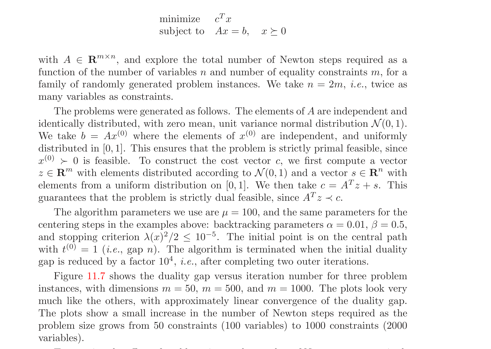
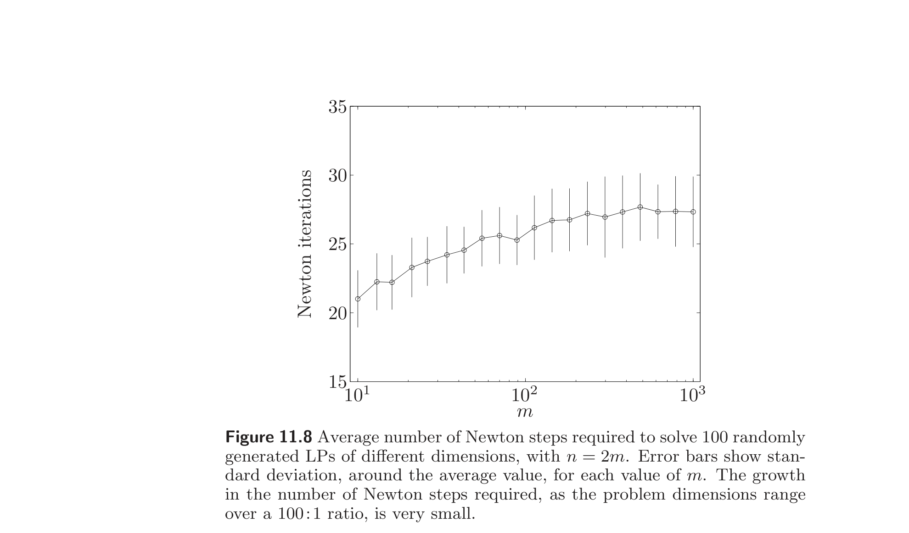
11.3.3 Convergence analysis
11.3.3 收敛性分析
Convergence analysis for the barrier method is straightforward. Assuming that $t f_0 + \phi$ can be minimized by Newton's method for $t = t^{(0)}, \mu t^{(0)}, \mu^2 t^{(0)}, \ldots$, the duality gap after the initial centering step, and $k$ additional centering steps, is $m/(\mu^k t^{(0)})$. Therefore the desired accuracy $\epsilon$ is achieved after exactly
$$ \left\lceil \frac{\log(m/(\epsilon t^{(0)}))}{\log \mu} \right\rceil \tag{11.13} $$
centering steps, plus the initial centering step.
It follows that the barrier method works provided the centering problem (11.6) is solvable by Newton's method, for $t \ge t^{(0)}$. For the standard Newton method, it suffices that for $t \ge t^{(0)}$, the function $t f_0 + \phi$ satisfies the conditions given in §10.2.4, page 529: its initial sublevel set is closed, the associated inverse KKT matrix is bounded, and the Hessian satisfies a Lipschitz condition. (Another set of sufficient conditions, based on self-concordance, will be discussed in detail in §11.5.) If the infeasible start Newton method is used for centering, then the conditions listed in §10.3.3, page 536, are sufficient to guarantee convergence.
Assuming that $f_0, \ldots, f_m$ are closed, a simple modification of the original problem ensures that these conditions hold. By adding a constraint of the form $\|x\|_2^2 \le R^2$ to the problem, it follows that $t f_0 + \phi$ is strongly convex, for every $t \ge 0$; in particular convergence of Newton's method, for the centering steps, is guaranteed. (See exercise 11.4.)
While this analysis shows that the barrier method does converge, under reasonable assumptions, it does not address a basic question: As the parameter $t$ increases, do the centering problems become more difficult (and therefore take more and more iterations)? Numerical evidence suggests that for a wide variety of problems, this is not the case; the centering problems appear to require a nearly constant number of Newton steps to solve, even as $t$ increases. We will see (in §11.5) that this issue can be resolved, for problems that satisfy certain self-concordance conditions.
障碍法的收敛性分析很直接。假设 $t f_0 + \phi$ 可对 $t = t^{(0)}, \mu t^{(0)}, \mu^2 t^{(0)}, \ldots$ 用牛顿法极小化，则初始中心化步加 $k$ 次额外中心化步后的对偶间隙为 $m/(\mu^k t^{(0)})$。故达到所需精度 $\epsilon$ 恰需
$$ \left\lceil \frac{\log(m/(\epsilon t^{(0)}))}{\log \mu} \right\rceil \tag{11.13} $$
次中心化步，外加初始中心化步。
由此，只要中心化问题 (11.6) 对 $t \ge t^{(0)}$ 可用牛顿法求解，障碍法即有效。对标准牛顿法，只需对 $t \ge t^{(0)}$，函数 $t f_0 + \phi$ 满足 §10.2.4（第 529 页）给出的条件：其初始下水平集闭、关联的逆 KKT 矩阵有界、Hessian 满足 Lipschitz 条件。（另一组基于自协调性的充分条件将在 §11.5 详细讨论。）若中心化使用不可行起始牛顿法，则 §10.3.3（第 536 页）列出的条件足以保证收敛。
在 $f_0, \ldots, f_m$ 闭的假设下，对原问题作简单修改即可保证这些条件成立。通过给问题加上形如 $\|x\|_2^2 \le R^2$ 的约束，可知对每个 $t \ge 0$，$t f_0 + \phi$ 强凸；特别地，中心化步的牛顿法收敛性得到保证。（见习题 11.4。）
虽然此分析表明在合理假设下障碍法确实收敛，但它未涉及一个基本问题：随着参数 $t$ 增大，中心化问题是否变得更难（从而需要越来越多迭代）？数值证据表明，对广泛的问题并非如此；中心化问题似乎即便 $t$ 增大也只需近乎常数的牛顿步数。我们将在 §11.5 看到对此问题（对满足某些自协调条件的问题）的解决。
11.3.4 Newton step for modified KKT equations
11.3.4 修正 KKT 方程的牛顿步
In the barrier method, the Newton step $\Delta x_{\mathrm{nt}}$, and associated dual variable are given by the linear equations
$$ \begin{bmatrix} t \nabla^2 f_0(x) + \nabla^2 \phi(x) & A^T \\ A & 0 \end{bmatrix} \begin{bmatrix} \Delta x_{\mathrm{nt}} \\ \nu_{\mathrm{nt}} \end{bmatrix} = -\begin{bmatrix} t \nabla f_0(x) + \nabla \phi(x) \\ 0 \end{bmatrix}. \tag{11.14} $$
In this section we show how these Newton steps for the centering problem can be interpreted as Newton steps for directly solving the modified KKT equations
$$ \begin{array}{r} \nabla f_0(x) + \sum_{i=1}^m \lambda_i \nabla f_i(x) + A^T \nu = 0 \\ -\lambda_i f_i(x) = 1/t, \quad i = 1, \ldots, m \\ Ax = b \end{array} \tag{11.15} $$
in a particular way.
障碍法中，牛顿步 $\Delta x_{\mathrm{nt}}$ 及关联的对偶变量由线性方程组
$$ \begin{bmatrix} t \nabla^2 f_0(x) + \nabla^2 \phi(x) & A^T \\ A & 0 \end{bmatrix} \begin{bmatrix} \Delta x_{\mathrm{nt}} \\ \nu_{\mathrm{nt}} \end{bmatrix} = -\begin{bmatrix} t \nabla f_0(x) + \nabla \phi(x) \\ 0 \end{bmatrix}. \tag{11.14} $$
给出。本节说明中心化问题的这些牛顿步如何可解释为以特定方式直接求解修正 KKT 方程
$$ \begin{array}{r} \nabla f_0(x) + \sum_{i=1}^m \lambda_i \nabla f_i(x) + A^T \nu = 0 \\ -\lambda_i f_i(x) = 1/t, \quad i = 1, \ldots, m \\ Ax = b \end{array} \tag{11.15} $$
的牛顿步。
To solve the modified KKT equations (11.15), which is a set of $n + p + m$ nonlinear equations in the $n + p + m$ variables $x, \nu$, and $\lambda$, we first eliminate the variables $\lambda_i$, using $\lambda_i = -1/(t f_i(x))$. This yields
$$ \nabla f_0(x) + \sum_{i=1}^m \frac{1}{-t f_i(x)} \nabla f_i(x) + A^T \nu = 0, \quad Ax = b, \tag{11.16} $$
which is a set of $n + p$ equations in the $n + p$ variables $x$ and $\nu$.
To find the Newton step for solving the set of nonlinear equations (11.16), we form the Taylor approximation for the nonlinear term occurring in the first equation. For $v$ small, we have the Taylor approximation
$$ \nabla f_0(x + v) + \sum_{i=1}^m \frac{1}{-t f_i(x + v)} \nabla f_i(x + v) \approx \nabla f_0(x) + \sum_{i=1}^m \frac{1}{-t f_i(x)} \nabla f_i(x) + \nabla^2 f_0(x) v $$
$$ + \sum_{i=1}^m \frac{1}{-t f_i(x)} \nabla^2 f_i(x) v + \sum_{i=1}^m \frac{1}{t f_i(x)^2} \nabla f_i(x) \nabla f_i(x)^T v. $$
The Newton step is obtained by replacing the nonlinear term in equation (11.16) by this Taylor approximation, which yields the linear equations
$$ H v + A^T \nu = -g, \quad A v = 0, \tag{11.17} $$
where
$$ H = \nabla^2 f_0(x) + \sum_{i=1}^m \frac{1}{-t f_i(x)} \nabla^2 f_i(x) + \sum_{i=1}^m \frac{1}{t f_i(x)^2} \nabla f_i(x) \nabla f_i(x)^T $$
$$ g = \nabla f_0(x) + \sum_{i=1}^m \frac{1}{-t f_i(x)} \nabla f_i(x). $$
Now we observe that
$$ H = \nabla^2 f_0(x) + (1/t) \nabla^2 \phi(x), \quad g = \nabla f_0(x) + (1/t) \nabla \phi(x), $$
so, from (11.14), the Newton steps $\Delta x_{\mathrm{nt}}$ and $\nu_{\mathrm{nt}}$ in the barrier method centering step satisfy
$$ t H \Delta x_{\mathrm{nt}} + A^T \nu_{\mathrm{nt}} = -t g, \quad A \Delta x_{\mathrm{nt}} = 0. $$
Comparing this with (11.17) shows that
$$ v = \Delta x_{\mathrm{nt}}, \quad \nu = (1/t) \nu_{\mathrm{nt}}. $$
This shows that the Newton step for the centering problem (11.6) can be interpreted, after scaling the dual variable, as the Newton step for solving the modified KKT equations (11.16).
In this approach, we first eliminated the variable $\lambda$ from the modified KKT equations, and then applied Newton's method to solve the resulting set of equations. Another variation on this approach is to directly apply Newton's method to the modified KKT equations, without first eliminating $\lambda$. This method yields the so-called primal-dual search directions, discussed in §11.7.
求解修正 KKT 方程 (11.15)——它是 $n + p + m$ 个变量 $x, \nu, \lambda$ 的 $n + p + m$ 个非线性方程——时，先消去变量 $\lambda_i$，用 $\lambda_i = -1/(t f_i(x))$。得到
$$ \nabla f_0(x) + \sum_{i=1}^m \frac{1}{-t f_i(x)} \nabla f_i(x) + A^T \nu = 0, \quad Ax = b, \tag{11.16} $$
这是 $n + p$ 个变量 $x, \nu$ 的 $n + p$ 个方程。
为求此非线性方程组的牛顿步，对第一个方程中的非线性项作 Taylor 逼近。对小的 $v$，有 Taylor 逼近
$$ \nabla f_0(x + v) + \sum_{i=1}^m \frac{1}{-t f_i(x + v)} \nabla f_i(x + v) \approx \nabla f_0(x) + \sum_{i=1}^m \frac{1}{-t f_i(x)} \nabla f_i(x) + \nabla^2 f_0(x) v $$
$$ + \sum_{i=1}^m \frac{1}{-t f_i(x)} \nabla^2 f_i(x) v + \sum_{i=1}^m \frac{1}{t f_i(x)^2} \nabla f_i(x) \nabla f_i(x)^T v. $$
将 (11.16) 中的非线性项以此 Taylor 逼近代替，得到线性方程
$$ H v + A^T \nu = -g, \quad A v = 0, \tag{11.17} $$
其中
$$ H = \nabla^2 f_0(x) + \sum_{i=1}^m \frac{1}{-t f_i(x)} \nabla^2 f_i(x) + \sum_{i=1}^m \frac{1}{t f_i(x)^2} \nabla f_i(x) \nabla f_i(x)^T $$
$$ g = \nabla f_0(x) + \sum_{i=1}^m \frac{1}{-t f_i(x)} \nabla f_i(x). $$
现在注意到
$$ H = \nabla^2 f_0(x) + (1/t) \nabla^2 \phi(x), \quad g = \nabla f_0(x) + (1/t) \nabla \phi(x), $$
故由 (11.14)，障碍法中心化步的牛顿步 $\Delta x_{\mathrm{nt}}$ 和 $\nu_{\mathrm{nt}}$ 满足
$$ t H \Delta x_{\mathrm{nt}} + A^T \nu_{\mathrm{nt}} = -t g, \quad A \Delta x_{\mathrm{nt}} = 0. $$
与 (11.17) 比较得
$$ v = \Delta x_{\mathrm{nt}}, \quad \nu = (1/t) \nu_{\mathrm{nt}}. $$
这表明中心化问题 (11.6) 的牛顿步，在对对偶变量作缩放后，可解释为求解修正 KKT 方程 (11.16) 的牛顿步。
此方法中我们先从修正 KKT 方程消去变量 $\lambda$，再对所得方程组应用牛顿法。另一种变体是直接对修正 KKT 方程应用牛顿法，不先消去 $\lambda$。此方法给出所谓的原始-对偶搜索方向，在 §11.7 讨论。
11.4 Feasibility and phase I methods
11.4 可行性与阶段 I 方法
The barrier method requires a strictly feasible starting point $x^{(0)}$. When such a point is not known, the barrier method is preceded by a preliminary stage, called phase I, in which a strictly feasible point is computed (or the constraints are found to be infeasible). The strictly feasible point found during phase I is then used as the starting point for the barrier method, which is called the phase II stage. In this section we describe several phase I methods.
障碍法要求严格可行的起始点 $x^{(0)}$。当这样的点未知时，障碍法之前要先经过一个预备阶段，称为阶段 I（phase I），在其中计算严格可行点（或发现约束不可行）。阶段 I 找到的严格可行点随后用作障碍法的起点，后者称为阶段 II。本节描述若干阶段 I 方法。
11.4.1 Basic phase I method
11.4.1 基本阶段 I 方法
We consider a set of inequalities and equalities in the variables $x \in \mathbb{R}^n$,
$$ f_i(x) \le 0, \quad i = 1, \ldots, m, \quad Ax = b, \tag{11.18} $$
where $f_i : \mathbb{R}^n \to \mathbb{R}$ are convex, with continuous second derivatives. We assume that we are given a point $x^{(0)} \in \mathbf{dom}\, f_1 \cap \cdots \cap \mathbf{dom}\, f_m$, with $A x^{(0)} = b$.
Our goal is to find a strictly feasible solution of these inequalities and equalities, or determine that none exists. To do this we form the following optimization problem:
$$ \begin{array}{ll} \text{minimize} & s \\ \text{subject to} & f_i(x) \le s, \quad i = 1, \ldots, m \\ & Ax = b \end{array} \tag{11.19} $$
in the variables $x \in \mathbb{R}^n$, $s \in \mathbb{R}$. The variable $s$ can be interpreted as a bound on the maximum infeasibility of the inequalities; the goal is to drive the maximum infeasibility below zero.
This problem is always strictly feasible, since we can choose $x^{(0)}$ as starting point for $x$, and for $s$, we can choose any number larger than $\max_{i=1,\ldots,m} f_i(x^{(0)})$. We can therefore apply the barrier method to solve the problem (11.19), which is called the phase I optimization problem associated with the inequality and equality system (11.19).
考虑变量 $x \in \mathbb{R}^n$ 的一组不等式和等式，
$$ f_i(x) \le 0, \quad i = 1, \ldots, m, \quad Ax = b, \tag{11.18} $$
其中 $f_i : \mathbb{R}^n \to \mathbb{R}$ 凸，有连续二阶导数。假设给定一点 $x^{(0)} \in \mathbf{dom}\, f_1 \cap \cdots \cap \mathbf{dom}\, f_m$，满足 $A x^{(0)} = b$。
目标是找到这些不等式和等式的一个严格可行解，或判定不存在。为此构造优化问题
$$ \begin{array}{ll} \text{minimize} & s \\ \text{subject to} & f_i(x) \le s, \quad i = 1, \ldots, m \\ & Ax = b \end{array} \tag{11.19} $$
变量 $x \in \mathbb{R}^n$、$s \in \mathbb{R}$。变量 $s$ 可解释为不等式最大不可行度的上界；目标是把最大不可行度驱赶到零以下。
此问题总是严格可行的，因可取 $x^{(0)}$ 作为 $x$ 的起点，$s$ 取大于 $\max_{i=1,\ldots,m} f_i(x^{(0)})$ 的任意数即可。因此可对问题 (11.19) 应用障碍法，此问题称为与不等式和等式系统 (11.19) 关联的阶段 I 优化问题。
We can distinguish three cases depending on the sign of the optimal value $\bar p^\star$ of (11.19).
1. If $\bar p^\star < 0$, then (11.18) has a strictly feasible solution. Moreover if $(x, s)$ is feasible for (11.19) with $s < 0$, then $x$ satisfies $f_i(x) < 0$. This means we do not need to solve the optimization problem (11.19) with high accuracy; we can terminate when $s < 0$.
2. If $\bar p^\star > 0$, then (11.18) is infeasible. As in case 1, we do not need to solve the phase I optimization problem (11.19) to high accuracy; we can terminate when a dual feasible point is found with positive dual objective (which proves that $\bar p^\star > 0$). In this case, we can construct the alternative that proves (11.18) is infeasible from the dual feasible point.
3. If $\bar p^\star = 0$ and the minimum is attained at $x^\star$ and $s^\star = 0$, then the set of inequalities is feasible, but not strictly feasible. If $\bar p^\star = 0$ and the minimum is not attained, then the inequalities are infeasible.
根据 (11.19) 最优值 $\bar p^\star$ 的符号可分三种情形。
1. 若 $\bar p^\star < 0$，则 (11.18) 有严格可行解。且若 $(x, s)$ 对 (11.19) 可行且 $s < 0$，则 $x$ 满足 $f_i(x) < 0$。这意味着不必高精度求解 (11.19)；当 $s < 0$ 时即可终止。
2. 若 $\bar p^\star > 0$，则 (11.18) 不可行。与情形 1 一样，不必高精度求解阶段 I 问题 (11.19)；当找到对偶目标为正的对偶可行点（这证明 $\bar p^\star > 0$）时即可终止。此时可由对偶可行点构造证明 (11.18) 不可行的替代定理。
3. 若 $\bar p^\star = 0$ 且最小值在 $x^\star$ 和 $s^\star = 0$ 处达到，则不等式组可行但不严格可行。若 $\bar p^\star = 0$ 且最小值未达到，则不等式不可行。
In practice it is impossible to determine exactly that $\bar p^\star = 0$. Instead, an optimization algorithm applied to (11.19) will terminate with the conclusion that $|\bar p^\star| < \epsilon$ for some small, positive $\epsilon$. This allows us to conclude that the inequalities $f_i(x) \le -\epsilon$ are infeasible, while the inequalities $f_i(x) \le \epsilon$ are feasible.
实践中无法精确判定 $\bar p^\star = 0$。取而代之，对 (11.19) 应用的优化算法将以 $|\bar p^\star| < \epsilon$（对某小正数 $\epsilon$）终止。由此可断定不等式 $f_i(x) \le -\epsilon$ 不可行，而不等式 $f_i(x) \le \epsilon$ 可行。
Sum of infeasibilities
不可行度之和
There are many variations on the basic phase I method just described. One method is based on minimizing the sum of the infeasibilities, instead of the maximum infeasibility. We form the problem
$$ \begin{array}{ll} \text{minimize} & \mathbf{1}^T s \\ \text{subject to} & f_i(x) \le s_i, \quad i = 1, \ldots, m \\ & Ax = b \\ & s \succeq 0. \end{array} \tag{11.20} $$
For fixed $x$, the optimal value of $s_i$ is $\max\{f_i(x), 0\}$, so in this problem we are minimizing the sum of the infeasibilities. The optimal value of (11.20) is zero and achieved if and only if the original set of equalities and inequalities is feasible.
This sum of infeasibilities phase I method has a very interesting property when the system of equalities and inequalities (11.19) is infeasible. In this case, the optimal point for the phase I problem (11.20) often violates only a small number, say $r$, of the inequalities. Therefore, we have computed a point that satisfies many ($m - r$) of the inequalities, i.e., we have identified a large subset of inequalities that is feasible. In this case, the dual variables associated with the strictly satisfied inequalities are zero, so we have also proved infeasibility of a subset of the inequalities. This is more informative than finding that the $m$ inequalities, together, are mutually infeasible. (This phenomenon is closely related to $\ell_1$-norm regularization, or basis pursuit, used to find sparse approximate solutions; see §6.1.2 and §6.5.4).
上述基本阶段 I 方法有许多变体。一种方法基于最小化不可行度之和，而非最大不可行度。构造问题
$$ \begin{array}{ll} \text{minimize} & \mathbf{1}^T s \\ \text{subject to} & f_i(x) \le s_i, \quad i = 1, \ldots, m \\ & Ax = b \\ & s \succeq 0. \end{array} \tag{11.20} $$
对固定 $x$，$s_i$ 的最优值为 $\max\{f_i(x), 0\}$，故此问题中最小化的是不可行度之和。当且仅当原始等式和不等式组可行时，(11.20) 的最优值为零且达到。
当等式和不等式系统 (11.19) 不可行时，此不可行度之和阶段 I 方法有一个很有趣的性质：阶段 I 问题 (11.20) 的最优点往往只违反少量（设为 $r$ 个）不等式。因此我们计算出一个满足多数（$m - r$ 个）不等式的点，即识别出一个大的可行不等式子集。此时与严格满足的不等式关联的对偶变量为零，故我们也证明了一个不等式子集的不可行性。这比发现 $m$ 个不等式整体相互不可行更有信息量。（此现象与 $\ell_1$ 范数正则化或基追踪密切相关，后者用于寻找稀疏近似解；见 §6.1.2 和 §6.5.4。）
Example 11.4 Comparison of phase I methods. We apply two phase I methods to an infeasible set of inequalities $Ax \preceq b$ with dimensions $m = 100$, $n = 50$. The first method is the basic phase I method
$$ \begin{array}{ll} \text{minimize} & s \\ \text{subject to} & Ax \preceq b + \mathbf{1} s, \end{array} $$
which minimizes the maximum infeasibility. The second method minimizes the sum of the infeasibilities, i.e., solves the LP
$$ \begin{array}{ll} \text{minimize} & \mathbf{1}^T s \\ \text{subject to} & Ax \preceq b + s \\ & s \succeq 0. \end{array} $$
Figure 11.9 shows the distributions of the infeasibilities $b_i - a_i^T x$ for these two values of $x$, denoted $x_{\max}$ and $x_{\mathrm{sum}}$, respectively. The point $x_{\max}$ satisfies 39 of the 100 inequalities, whereas the point $x_{\mathrm{sum}}$ satisfies 79 of the inequalities.
例 11.4 阶段 I 方法比较。 对一个不可行的不等式组 $Ax \preceq b$（维度 $m = 100$、$n = 50$）应用两种阶段 I 方法。第一种是基本阶段 I 方法
$$ \begin{array}{ll} \text{minimize} & s \\ \text{subject to} & Ax \preceq b + \mathbf{1} s, \end{array} $$
最小化最大不可行度。第二种最小化不可行度之和，即求解 LP
$$ \begin{array}{ll} \text{minimize} & \mathbf{1}^T s \\ \text{subject to} & Ax \preceq b + s \\ & s \succeq 0. \end{array} $$
图 11.9 给出这两个 $x$ 值（分别记为 $x_{\max}$ 和 $x_{\mathrm{sum}}$）下不可行度 $b_i - a_i^T x$ 的分布。点 $x_{\max}$ 满足 100 个不等式中的 39 个，而 $x_{\mathrm{sum}}$ 满足 79 个。
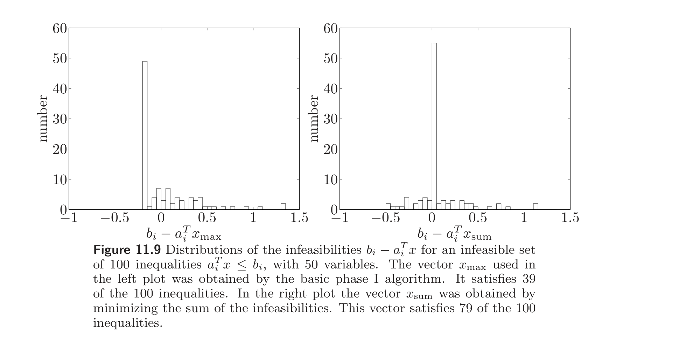
Termination near the phase II central path
在阶段 II 中心路径附近终止
A simple variation on the basic phase I method, using the barrier method, has the property that (when the equalities and inequalities are strictly feasible) the central path for the phase I problem intersects the central path for the original optimization problem (11.1).
We assume a point $x^{(0)} \in \mathcal{D} = \mathbf{dom}\, f_0 \cap \mathbf{dom}\, f_1 \cap \cdots \cap \mathbf{dom}\, f_m$, with $A x^{(0)} = b$ is given. We form the phase I optimization problem
$$ \begin{array}{ll} \text{minimize} & s \\ \text{subject to} & f_i(x) \le s, \quad i = 1, \ldots, m \\ & f_0(x) \le M \\ & Ax = b, \end{array} \tag{11.21} $$
where $M$ is a constant chosen to be larger than $\max\{f_0(x^{(0)}), p^\star\}$.
We assume now that the original problem (11.1) is strictly feasible, so the optimal value $\bar p^\star$ of (11.21) is negative. The central path of (11.21) is characterized by
$$ \sum_{i=1}^m \frac{1}{s - f_i(x)} = \bar t, \quad \frac{1}{M - f_0(x)} \nabla f_0(x) + \sum_{i=1}^m \frac{1}{s - f_i(x)} \nabla f_i(x) + A^T \nu = 0, $$
where $\bar t$ is the parameter. If $(x, s)$ is on the central path and $s = 0$, then $x$ and $\nu$ satisfy
$$ t \nabla f_0(x) + \sum_{i=1}^m \frac{1}{-f_i(x)} \nabla f_i(x) + A^T \nu = 0 $$
for $t = 1/(M - f_0(x))$. This means that $x$ is on the central path for the original optimization problem (11.1), with associated duality gap
$$ m(M - f_0(x)) \le m(M - p^\star). \tag{11.22} $$
基本阶段 I 方法的一个简单变体（使用障碍法）具有如下性质：（当等式和不等式严格可行时）阶段 I 问题的中心路径与原优化问题 (11.1) 的中心路径相交。
假设给定点 $x^{(0)} \in \mathcal{D} = \mathbf{dom}\, f_0 \cap \mathbf{dom}\, f_1 \cap \cdots \cap \mathbf{dom}\, f_m$，满足 $A x^{(0)} = b$。构造阶段 I 优化问题
$$ \begin{array}{ll} \text{minimize} & s \\ \text{subject to} & f_i(x) \le s, \quad i = 1, \ldots, m \\ & f_0(x) \le M \\ & Ax = b, \end{array} \tag{11.21} $$
其中 $M$ 为选取的大于 $\max\{f_0(x^{(0)}), p^\star\}$ 的常数。
现假设原问题 (11.1) 严格可行，故 (11.21) 的最优值 $\bar p^\star$ 为负。(11.21) 的中心路径由
$$ \sum_{i=1}^m \frac{1}{s - f_i(x)} = \bar t, \quad \frac{1}{M - f_0(x)} \nabla f_0(x) + \sum_{i=1}^m \frac{1}{s - f_i(x)} \nabla f_i(x) + A^T \nu = 0, $$
刻画，其中 $\bar t$ 为参数。若 $(x, s)$ 在中心路径上且 $s = 0$，则 $x$ 和 $\nu$ 满足
$$ t \nabla f_0(x) + \sum_{i=1}^m \frac{1}{-f_i(x)} \nabla f_i(x) + A^T \nu = 0 $$
（$t = 1/(M - f_0(x))$）。这意味着 $x$ 在原优化问题 (11.1) 的中心路径上，关联的对偶间隙为
$$ m(M - f_0(x)) \le m(M - p^\star). \tag{11.22} $$
11.4.2 Phase I via infeasible start Newton method
11.4.2 通过不可行起始牛顿法的阶段 I
We can also carry out the phase I stage using an infeasible start Newton method, applied to a modified version of the original problem
$$ \begin{array}{ll} \text{minimize} & f_0(x) \\ \text{subject to} & f_i(x) \le 0, \quad i = 1, \ldots, m \\ & Ax = b. \end{array} $$
We first express the problem in the (obviously equivalent) form
$$ \begin{array}{ll} \text{minimize} & f_0(x) \\ \text{subject to} & f_i(x) \le s, \quad i = 1, \ldots, m \\ & Ax = b, \\ & s = 0, \end{array} $$
with the additional variable $s \in \mathbb{R}$. To start the barrier method, we use an infeasible start Newton method to solve
$$ \begin{array}{ll} \text{minimize} & t^{(0)} f_0(x) - \sum_{i=1}^m \log(s - f_i(x)) \\ \text{subject to} & Ax = b, \\ & s = 0. \end{array} $$
This can be initialized with any $x \in \mathcal{D}$, and any $s > \max_i f_i(x)$. Provided the problem is strictly feasible, the infeasible start Newton method will eventually take an undamped step, and thereafter we will have $s = 0$, i.e., $x$ strictly feasible.
The same trick can be applied if a point in $\mathcal{D}$, the common domain of the functions, is not known. We simply apply the infeasible start Newton method to the problem
$$ \begin{array}{ll} \text{minimize} & t^{(0)} f_0(x + z_0) - \sum_{i=1}^m \log(s - f_i(x + z_i)) \\ \text{subject to} & Ax = b, \\ & s = 0, \\ & z_0 = 0, \ldots, z_m = 0 \end{array} $$
with variables $x, z_0, \ldots, z_m$, and $s \in \mathbb{R}$. We initialize $z_i$ so that $x + z_i \in \mathbf{dom}\, f_i$.
The main disadvantage of this approach to the phase I problem is that there is no good stopping criterion when the problem is infeasible; the residual simply fails to converge to zero.
也可用不可行起始牛顿法执行阶段 I，应用于原问题的修正版
$$ \begin{array}{ll} \text{minimize} & f_0(x) \\ \text{subject to} & f_i(x) \le 0, \quad i = 1, \ldots, m \\ & Ax = b. \end{array} $$
先将问题表为（显然等价的）形式
$$ \begin{array}{ll} \text{minimize} & f_0(x) \\ \text{subject to} & f_i(x) \le s, \quad i = 1, \ldots, m \\ & Ax = b, \\ & s = 0, \end{array} $$
增加变量 $s \in \mathbb{R}$。为启动障碍法，用不可行起始牛顿法求解
$$ \begin{array}{ll} \text{minimize} & t^{(0)} f_0(x) - \sum_{i=1}^m \log(s - f_i(x)) \\ \text{subject to} & Ax = b, \\ & s = 0. \end{array} $$
可用任意 $x \in \mathcal{D}$ 和任意 $s > \max_i f_i(x)$ 初始化。在问题严格可行时，不可行起始牛顿法最终会采取无阻尼步，此后 $s = 0$，即 $x$ 严格可行。
若 $\mathcal{D}$（函数的公共定义域）中的点未知，可用同样技巧。直接对问题
$$ \begin{array}{ll} \text{minimize} & t^{(0)} f_0(x + z_0) - \sum_{i=1}^m \log(s - f_i(x + z_i)) \\ \text{subject to} & Ax = b, \\ & s = 0, \\ & z_0 = 0, \ldots, z_m = 0 \end{array} $$
应用不可行起始牛顿法，变量为 $x, z_0, \ldots, z_m$ 和 $s \in \mathbb{R}$。初始化 $z_i$ 使 $x + z_i \in \mathbf{dom}\, f_i$。
此阶段 I 方法的主要缺点是：问题不可行时没有好的停止准则；残差只是无法收敛到零。
11.4.3 Examples
11.4.3 例子
We consider a family of linear feasibility problems,
$$ Ax \preceq b(\gamma) $$
where $A \in \mathbb{R}^{50 \times 20}$ and $b(\gamma) = b + \gamma \Delta b$. The problem data are chosen so that the inequalities are strictly feasible for $\gamma > 0$ and infeasible for $\gamma < 0$. For $\gamma = 0$ the problem is feasible but not strictly feasible.
Figure 11.10 shows the total number of Newton steps required to find a strictly feasible point, or a certificate of infeasibility, for 40 values of $\gamma$ in $[-1, 1]$. We use the basic phase I method of §11.4.1, i.e., for each value of $\gamma$, we form the LP
$$ \begin{array}{ll} \text{minimize} & s \\ \text{subject to} & Ax \preceq b(\gamma) + s \mathbf{1}. \end{array} $$
The barrier method is used with $\mu = 10$, and starting point $x = 0$, $s = -\min_i b_i(\gamma) + 1$. The method terminates when a point $(x, s)$ with $s < 0$ is found, or a feasible solution $z$ of the dual problem
$$ \begin{array}{ll} \text{maximize} & -b(\gamma)^T z \\ \text{subject to} & A^T z = 0 \\ & \mathbf{1}^T z = 1 \\ & z \succeq 0 \end{array} $$
is found with $-b(\gamma)^T z > 0$.
The plot shows that when the inequalities are feasible, with some margin, it takes around 25 Newton steps to produce a strictly feasible point. Conversely, when the inequalities are infeasible, again with some margin, it takes around 35 steps to produce a certificate proving infeasibility. The phase I effort increases as the set of inequalities approaches the boundary between feasible and infeasible, i.e., $\gamma$ near zero. When $\gamma$ is very near zero, so the inequalities are very near the boundary between feasible and infeasible, the number of steps grows substantially.
Figure 11.11 shows the total number of Newton steps required for values of $\gamma$ near zero. The plots show an approximately logarithmic increase in the number of steps required to detect feasibility, or prove infeasibility, for problems very near the boundary between feasible and infeasible.
考虑一族线性可行性问题，
$$ Ax \preceq b(\gamma) $$
其中 $A \in \mathbb{R}^{50 \times 20}$，$b(\gamma) = b + \gamma \Delta b$。数据选使不等式对 $\gamma > 0$ 严格可行、对 $\gamma < 0$ 不可行。$\gamma = 0$ 时问题可行但不严格可行。
图 11.10 给出对 $[-1, 1]$ 中 40 个 $\gamma$ 值找到严格可行点或不可行证书所需牛顿步总数。使用 §11.4.1 的基本阶段 I 方法，即对每个 $\gamma$ 构造 LP
$$ \begin{array}{ll} \text{minimize} & s \\ \text{subject to} & Ax \preceq b(\gamma) + s \mathbf{1}. \end{array} $$
障碍法取 $\mu = 10$，起点 $x = 0$、$s = -\min_i b_i(\gamma) + 1$。当找到 $s < 0$ 的点 $(x, s)$，或找到对偶问题
$$ \begin{array}{ll} \text{maximize} & -b(\gamma)^T z \\ \text{subject to} & A^T z = 0 \\ & \mathbf{1}^T z = 1 \\ & z \succeq 0 \end{array} $$
的可行解 $z$ 且 $-b(\gamma)^T z > 0$ 时终止。
图表明不等式可行（有余量）时约需 25 步得到严格可行点。反之，不可行（有余量）时约需 35 步得到不可行证书。阶段 I 工作量随不等式组接近可行与不可行的边界（即 $\gamma$ 接近零）而增加。$\gamma$ 非常接近零时步数大幅增长。
图 11.11 给出 $\gamma$ 接近零时所需牛顿步总数。图表明对非常接近可行与不可行边界的问题，检测可行性或证明不可行所需步数近似对数增长。
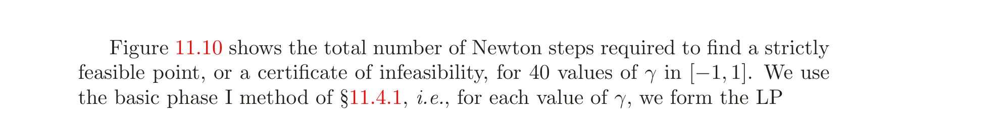
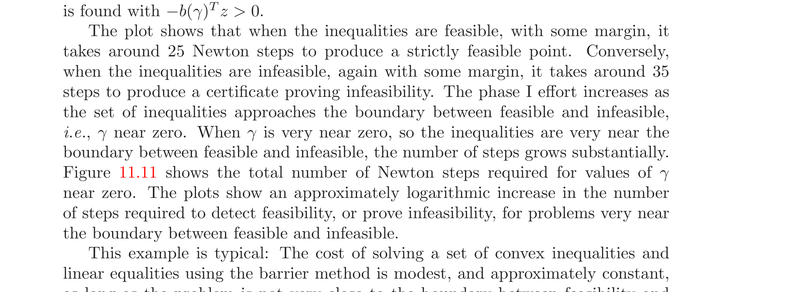
This example is typical: The cost of solving a set of convex inequalities and linear equalities using the barrier method is modest, and approximately constant, as long as the problem is not very close to the boundary between feasibility and infeasibility. When the problem is very close to the boundary, the number of Newton steps required to find a strictly feasible point or produce a certificate of infeasibility grows. When the problem is exactly on the boundary between strictly feasible and infeasible, for example, feasible but not strictly feasible, the cost becomes infinite.
此例是典型的：只要问题不非常接近可行与不可行的边界，用障碍法求解凸不等式和线性等式组的代价适中且近似常数。当问题非常接近边界时，找到严格可行点或产生不可行证书所需牛顿步数增长。当问题恰在严格可行与不可行的边界上（例如可行但不严格可行）时，代价变为无穷。
Feasibility using infeasible start Newton method
用不可行起始牛顿法的可行性
We also solve the same set of feasibility problems using the infeasible start Newton method, applied to the problem
$$ \begin{array}{ll} \text{minimize} & -\sum_{i=1}^m \log s_i \\ \text{subject to} & Ax + s = b(\gamma). \end{array} $$
We use backtracking parameters $\alpha = 0.01$, $\beta = 0.9$, and initialize with $x^{(0)} = 0$, $s^{(0)} = 1$, $\nu^{(0)} = 0$. We consider only feasible problems (i.e., $\gamma > 0$) and terminate once a feasible point is found. (We do not consider infeasible problems, since in that case the residual simply converges to a positive number.) Figure 11.12 shows the number of Newton steps required to find a feasible point, as a function of $\gamma$.
还用不可行起始牛顿法求解同一组可行性问题，应用于问题
$$ \begin{array}{ll} \text{minimize} & -\sum_{i=1}^m \log s_i \\ \text{subject to} & Ax + s = b(\gamma). \end{array} $$
回溯参数 $\alpha = 0.01$、$\beta = 0.9$，初始化 $x^{(0)} = 0$、$s^{(0)} = 1$、$\nu^{(0)} = 0$。仅考虑可行问题（即 $\gamma > 0$），一旦找到可行点即终止。（不考虑不可行问题，因那时残差仅收敛到正数。）图 11.12 给出找到可行点所需牛顿步数关于 $\gamma$ 的函数。
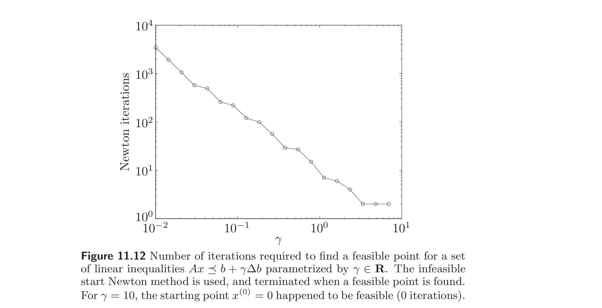
These results are quite typical. The infeasible start Newton method works very well provided the inequalities are feasible, and not very close to the boundary between feasible and infeasible. But when the feasible set is just barely nonempty (as is the case in this example with small $\gamma$), a phase I method is far better. Another advantage of the phase I method is that it gracefully handles the infeasible case; the infeasible start Newton method, in contrast, simply fails to converge.
这些结果相当典型。不可行起始牛顿法在问题可行且不非常接近可行与不可行边界时表现很好。但当可行集恰好非空（如本例小 $\gamma$ 时），阶段 I 方法远优。阶段 I 方法的另一优势是优雅处理不可行情形；不可行起始牛顿法则干脆无法收敛。
11.5 Complexity analysis via self-concordance
11.5 通过自协调性的复杂度分析
Using the complexity analysis of Newton's method for self-concordant functions (§9.6.4, page 503, and §10.2.4, page 531), we can give a complexity analysis of the barrier method. The analysis applies to many common problems, and leads to several interesting conclusions: It gives a rigorous bound on the total number of Newton steps required to solve a problem using the barrier method, and it justifies our observation that the centering problems do not become more difficult as $t$ increases.
利用牛顿法对自协调函数的复杂度分析（§9.6.4 第 503 页和 §10.2.4 第 531 页），可给出障碍法的复杂度分析。该分析适用于许多常见问题，并得出若干有趣结论：它给出用障碍法求解问题所需牛顿步总数的严格界，并证实我们的观察——中心化问题不随 $t$ 增大而变难。
11.5.1 Self-concordance assumption
11.5.1 自协调性假设
We make two assumptions.
• The function $t f_0 + \phi$ is closed and self-concordant for all $t \ge t^{(0)}$.
• The sublevel sets of (11.1) are bounded.
The second assumption implies that the centering problem has bounded sublevel sets (see exercise 11.3), and, therefore, the centering problem is solvable. The bounded sublevel set assumption also implies that the Hessian of $t f_0 + \phi$ is positive definite everywhere (see exercise 11.14). While the self-concordance assumption restricts the complexity analysis to a particular class of problems, it is important to emphasize that the barrier method works well in general, whether or not the self-concordance assumption holds.
The self-concordance assumption holds for a variety of problems, including all linear and quadratic problems. If the functions $f_i$ are linear or quadratic, then
$$ t f_0 - \sum_{i=1}^m \log(-f_i) $$
is self-concordant for all values of $t \ge 0$ (see §9.6). The complexity analysis given below therefore applies to LPs, QPs, and QCQPs.
作两个假设。
• 函数 $t f_0 + \phi$ 对所有 $t \ge t^{(0)}$ 闭且自协调。
• (11.1) 的下水平集有界。
第二个假设意味着中心化问题有有界下水平集（见习题 11.3），从而中心化问题可解。有界下水平集假设还意味着 $t f_0 + \phi$ 的 Hessian 处处正定（见习题 11.14）。虽然自协调性假设把复杂度分析限于特定问题类，但需强调：障碍法一般都表现良好，无论自协调性假设是否成立。
自协调性假设对多种问题成立，包括所有线性和二次问题。若 $f_i$ 为线性或二次，则
$$ t f_0 - \sum_{i=1}^m \log(-f_i) $$
对所有 $t \ge 0$ 自协调（见 §9.6）。因此下面的复杂度分析适用于 LP、QP 和 QCQP。
In other cases, it is possible to reformulate the problem so the assumption of self-concordance holds. As an example, consider the linear inequality constrained entropy maximization problem
$$ \begin{array}{ll} \text{minimize} & \sum_{i=1}^n x_i \log x_i \\ \text{subject to} & Fx \preceq g \\ & Ax = b. \end{array} $$
The function
$$ t f_0(x) + \phi(x) = t \sum_{i=1}^n x_i \log x_i - \sum_{i=1}^m \log(g_i - f_i^T x), $$
where $f_1^T, \ldots, f_m^T$ are the rows of $F$, is not closed (unless $Fx \preceq g$ implies $x \succeq 0$), or self-concordant. We can, however, add the redundant inequality constraints $x \succeq 0$ to obtain the equivalent problem
$$ \begin{array}{ll} \text{minimize} & \sum_{i=1}^n x_i \log x_i \\ \text{subject to} & Fx \preceq g \\ & Ax = b \\ & x \succeq 0. \end{array} \tag{11.23} $$
For this problem we have
$$ t f_0(x) + \phi(x) = t \sum_{i=1}^n x_i \log x_i - \sum_{i=1}^n \log x_i - \sum_{i=1}^m \log(g_i - f_i^T x), $$
在其他情形下，可改写问题使自协调性假设成立。例如，考虑线性不等式约束的熵最大化问题
$$ \begin{array}{ll} \text{minimize} & \sum_{i=1}^n x_i \log x_i \\ \text{subject to} & Fx \preceq g \\ & Ax = b. \end{array} $$
函数
$$ t f_0(x) + \phi(x) = t \sum_{i=1}^n x_i \log x_i - \sum_{i=1}^m \log(g_i - f_i^T x), $$
（$f_1^T, \ldots, f_m^T$ 为 $F$ 的行）不闭（除非 $Fx \preceq g$ 蕴含 $x \succeq 0$），也不自协调。但可加冗余不等式约束 $x \succeq 0$ 得等价问题
$$ \begin{array}{ll} \text{minimize} & \sum_{i=1}^n x_i \log x_i \\ \text{subject to} & Fx \preceq g \\ & Ax = b \\ & x \succeq 0. \end{array} \tag{11.23} $$
对此问题有
$$ t f_0(x) + \phi(x) = t \sum_{i=1}^n x_i \log x_i - \sum_{i=1}^n \log x_i - \sum_{i=1}^m \log(g_i - f_i^T x), $$
which is self-concordant and closed, for any $t \ge 0$. (The function $t y \log y - \log y$ is self-concordant on $\mathbb{R}_{++}$, for all $t \ge 0$; see exercise 11.13.) The complexity analysis therefore applies to the reformulated linear inequality constrained entropy maximization problem (11.23).
As a more exotic example, consider the GP
$$ \begin{array}{ll} \text{minimize} & f_0(x) = \log\left(\sum_{k=1}^{K_0} \exp(a_{0k}^T x + b_{0k})\right) \\ \text{subject to} & \log\left(\sum_{k=1}^{K_i} \exp(a_{ik}^T x + b_{ik})\right) \le 0, \quad i = 1, \ldots, m. \end{array} $$
It is not clear whether or not the function
$$ t f_0(x) + \phi(x) = t \log\left(\sum_{k=1}^{K_0} \exp(a_{0k}^T x + b_{0k})\right) - \sum_{i=1}^m \log\left(-\log\sum_{k=1}^{K_i} \exp(a_{ik}^T x + b_{ik})\right) $$
is self-concordant, so although the barrier method works, the complexity analysis of this section need not hold.
We can, however, reformulate the GP in a form that definitely satisfies the self-concordance assumption. For each (monomial) term $\exp(a_{ik}^T x + b_{ik})$ we introduce a new variable $y_{ik}$ that serves as an upper bound,
$$ \exp(a_{ik}^T x + b_{ik}) \le y_{ik}. $$
Using these new variables we can express the GP in the form
$$ \begin{array}{ll} \text{minimize} & \sum_{k=1}^{K_0} y_{0k} \\ \text{subject to} & \sum_{k=1}^{K_i} y_{ik} \le 1, \quad i = 1, \ldots, m \\ & a_{ik}^T x + b_{ik} - \log y_{ik} \le 0, \quad i = 0, \ldots, m, \; k = 1, \ldots, K_i \\ & y_{ik} \ge 0, \quad i = 0, \ldots, m, \; k = 1, \ldots, K_i. \end{array} $$
The associated logarithmic barrier is
$$ \sum_{i=0}^m \sum_{k=1}^{K_i} \left(-\log y_{ik} - \log(\log y_{ik} - a_{ik}^T x - b_{ik})\right) - \sum_{i=1}^m \log\left(1 - \sum_{k=1}^{K_i} y_{ik}\right), $$
which is closed and self-concordant (example 9.8, page 500). Since the objective is linear, it follows that $t f_0 + \phi$ is closed and self-concordant for any $t$.
它对任意 $t \ge 0$ 自协调且闭。（函数 $t y \log y - \log y$ 在 $\mathbb{R}_{++}$ 上自协调，对所有 $t \ge 0$；见习题 11.13。）因此复杂度分析适用于改写后的线性不等式约束熵最大化问题 (11.23)。
作为一个更特殊的例子，考虑 GP
$$ \begin{array}{ll} \text{minimize} & f_0(x) = \log\left(\sum_{k=1}^{K_0} \exp(a_{0k}^T x + b_{0k})\right) \\ \text{subject to} & \log\left(\sum_{k=1}^{K_i} \exp(a_{ik}^T x + b_{ik})\right) \le 0, \quad i = 1, \ldots, m. \end{array} $$
函数
$$ t f_0(x) + \phi(x) = t \log\left(\sum_{k=1}^{K_0} \exp(a_{0k}^T x + b_{0k})\right) - \sum_{i=1}^m \log\left(-\log\sum_{k=1}^{K_i} \exp(a_{ik}^T x + b_{ik})\right) $$
是否自协调尚不清楚，故虽障碍法有效，本节的复杂度分析未必成立。
但可把 GP 改写为确定满足自协调性假设的形式。对每个（单项式）项 $\exp(a_{ik}^T x + b_{ik})$ 引入新变量 $y_{ik}$ 作为上界，
$$ \exp(a_{ik}^T x + b_{ik}) \le y_{ik}. $$
利用这些新变量，GP 可表为
$$ \begin{array}{ll} \text{minimize} & \sum_{k=1}^{K_0} y_{0k} \\ \text{subject to} & \sum_{k=1}^{K_i} y_{ik} \le 1, \quad i = 1, \ldots, m \\ & a_{ik}^T x + b_{ik} - \log y_{ik} \le 0, \quad i = 0, \ldots, m, \; k = 1, \ldots, K_i \\ & y_{ik} \ge 0, \quad i = 0, \ldots, m, \; k = 1, \ldots, K_i. \end{array} $$
关联的对数障碍为
$$ \sum_{i=0}^m \sum_{k=1}^{K_i} \left(-\log y_{ik} - \log(\log y_{ik} - a_{ik}^T x - b_{ik})\right) - \sum_{i=1}^m \log\left(1 - \sum_{k=1}^{K_i} y_{ik}\right), $$
它闭且自协调（例 9.8，第 500 页）。由于目标线性，故 $t f_0 + \phi$ 对任意 $t$ 闭且自协调。
11.5.2 Newton iterations per centering step
11.5.2 每次中心化步的牛顿迭代数
The complexity theory of Newton's method for self-concordant functions, developed in §9.6.4 (page 503) and §10.2.4 (page 531), shows that the number of Newton iterations required to minimize a closed strictly convex self-concordant function $f$ is bounded above by
$$ \frac{f(x) - p^\star}{\gamma} + c. \tag{11.24} $$
Here $x$ is the starting point for Newton's method, and $p^\star = \inf_x f(x)$ is the optimal value. The constant $\gamma$ depends only on the backtracking parameters $\alpha$ and $\beta$, and is given by
$$ \frac{1}{\gamma} = \frac{20 - 8\alpha}{\alpha \beta (1 - 2\alpha)^2}. $$
The constant $c$ depends only on the tolerance $\epsilon_{\mathrm{nt}}$,
$$ c = \log_2 \log_2(1/\epsilon_{\mathrm{nt}}), $$
and can reasonably be approximated as $c = 6$. The expression (11.24) is a quite conservative bound on the number of Newton steps required, but our interest in this section is only to establish a complexity bound, concentrating on how it increases with problem size and algorithm parameters.
In this section we use this result to derive a bound on the number of Newton steps required for one outer iteration of the barrier method, i.e., for computing $x^\star(\mu t)$, starting from $x^\star(t)$. To lighten the notation we use $x$ to denote $x^\star(t)$, the current iterate, and we use $x_+$ to denote $x^\star(\mu t)$, the next iterate. We use $\lambda$ and $\nu$ to denote $\lambda^\star(t)$ and $\nu^\star(t)$, respectively.
The self-concordance assumption implies that
$$ \frac{\mu t f_0(x) + \phi(x) - \mu t f_0(x_+) - \phi(x_+)}{\gamma} + c \tag{11.25} $$
is an upper bound on the number of Newton steps required to compute $x_+ = x^\star(\mu t)$, starting at $x = x^\star(t)$. Unfortunately we do not know $x_+$, and hence the upper bound (11.25), until we actually compute $x_+$, i.e., carry out the Newton algorithm (whereupon we know the exact number of Newton steps required to compute $x^\star(\mu t)$, which defeats the purpose). We can, however, derive an upper bound on (11.25), as follows:
§9.6.4（第 503 页）和 §10.2.4（第 531 页）发展的自协调函数牛顿法复杂度理论表明，极小化一个闭的严格凸自协调函数 $f$ 所需牛顿迭代数上界为
$$ \frac{f(x) - p^\star}{\gamma} + c. \tag{11.24} $$
此处 $x$ 为牛顿法起点，$p^\star = \inf_x f(x)$ 为最优值。常数 $\gamma$ 仅依赖回溯参数 $\alpha$ 和 $\beta$，由
$$ \frac{1}{\gamma} = \frac{20 - 8\alpha}{\alpha \beta (1 - 2\alpha)^2} $$
给出。常数 $c$ 仅依赖容差 $\epsilon_{\mathrm{nt}}$，
$$ c = \log_2 \log_2(1/\epsilon_{\mathrm{nt}}), $$
可合理近似为 $c = 6$。(11.24) 是所需牛顿步数的一个相当保守的界，但本节只关心建立复杂度界，关注它如何随问题规模和算法参数增长。
本节用此结果导出障碍法一次外层迭代（即从 $x^\star(t)$ 计算 $x^\star(\mu t)$）所需牛顿步数的界。为简化记号，用 $x$ 记 $x^\star(t)$（当前迭代），用 $x_+$ 记 $x^\star(\mu t)$（下次迭代）。用 $\lambda$ 和 $\nu$ 分别记 $\lambda^\star(t)$ 和 $\nu^\star(t)$。
自协调性假设意味着
$$ \frac{\mu t f_0(x) + \phi(x) - \mu t f_0(x_+) - \phi(x_+)}{\gamma} + c \tag{11.25} $$
是从 $x = x^\star(t)$ 出发计算 $x_+ = x^\star(\mu t)$ 所需牛顿步数的上界。遗憾的是，直到实际计算 $x_+$（即执行牛顿算法，此时已知精确步数，违背目的）才知道 $x_+$ 及上界 (11.25)。但可如下导出 (11.25) 的上界：
$$ \begin{aligned} & \mu t f_0(x) + \phi(x) - \mu t f_0(x_+) - \phi(x_+) \\ &= \mu t f_0(x) - \mu t f_0(x_+) + \sum_{i=1}^m \log(-\mu t \lambda_i f_i(x_+)) - m \log \mu \\ &\le \mu t f_0(x) - \mu t f_0(x_+) - \mu t \sum_{i=1}^m \lambda_i f_i(x_+) - m - m \log \mu \\ &= \mu t f_0(x) - \mu t \left(f_0(x_+) + \sum_{i=1}^m \lambda_i f_i(x_+) + \nu^T(A x_+ - b)\right) - m - m \log \mu \\ &\le \mu t f_0(x) - \mu t g(\lambda, \nu) - m - m \log \mu \\ &= m(\mu - 1 - \log \mu). \end{aligned} $$
$$ \begin{aligned} & \mu t f_0(x) + \phi(x) - \mu t f_0(x_+) - \phi(x_+) \\ &= \mu t f_0(x) - \mu t f_0(x_+) + \sum_{i=1}^m \log(-\mu t \lambda_i f_i(x_+)) - m \log \mu \\ &\le \mu t f_0(x) - \mu t f_0(x_+) - \mu t \sum_{i=1}^m \lambda_i f_i(x_+) - m - m \log \mu \\ &= \mu t f_0(x) - \mu t \left(f_0(x_+) + \sum_{i=1}^m \lambda_i f_i(x_+) + \nu^T(A x_+ - b)\right) - m - m \log \mu \\ &\le \mu t f_0(x) - \mu t g(\lambda, \nu) - m - m \log \mu \\ &= m(\mu - 1 - \log \mu). \end{aligned} $$
This chain of equalities and inequalities needs some explanation. To obtain the second line from the first, we use $\lambda_i = -1/(t f_i(x))$. In the first inequality we use the fact that $\log a \le a - 1$ for $a > 0$. To obtain the fourth line from the third, we use $A x_+ = b$, so the extra term $\nu^T(A x_+ - b)$ is zero. The second inequality follows from the definition of the dual function:
$$ g(\lambda, \nu) = \inf_z \left(f_0(z) + \sum_{i=1}^m \lambda_i f_i(z) + \nu^T(Az - b)\right) \le f_0(x_+) + \sum_{i=1}^m \lambda_i f_i(x_+) + \nu^T(A x_+ - b). $$
The last line follows from $g(\lambda, \nu) = f_0(x) - m/t$.
The conclusion is that
$$ \frac{m(\mu - 1 - \log \mu)}{\gamma} + c \tag{11.26} $$
is an upper bound on (11.25), and therefore an upper bound on the number of Newton steps required for one outer iteration of the barrier method. The function $\mu - 1 - \log \mu$ is shown in figure 11.13. For small $\mu$ it is approximately quadratic; for large $\mu$ it grows approximately linearly. This fits with our intuition that for $\mu$ near one, the number of Newton steps required to center is small, whereas for large $\mu$, it could well grow.
此等式与不等式链需作些解释。由第一行到第二行，用 $\lambda_i = -1/(t f_i(x))$。第一个不等式用 $\log a \le a - 1$（$a > 0$）。由第三行到第四行，用 $A x_+ = b$，故额外项 $\nu^T(A x_+ - b)$ 为零。第二个不等式由对偶函数定义得出：
$$ g(\lambda, \nu) = \inf_z \left(f_0(z) + \sum_{i=1}^m \lambda_i f_i(z) + \nu^T(Az - b)\right) \le f_0(x_+) + \sum_{i=1}^m \lambda_i f_i(x_+) + \nu^T(A x_+ - b). $$
最后一行由 $g(\lambda, \nu) = f_0(x) - m/t$ 得出。
结论是
$$ \frac{m(\mu - 1 - \log \mu)}{\gamma} + c \tag{11.26} $$
为 (11.25) 的上界，从而是障碍法一次外层迭代所需牛顿步数的上界。函数 $\mu - 1 - \log \mu$ 见图 11.13。$\mu$ 小时近似二次；$\mu$ 大时近似线性增长。这与直觉一致：$\mu$ 接近 1 时中心化所需牛顿步少，而 $\mu$ 大时可能增长。
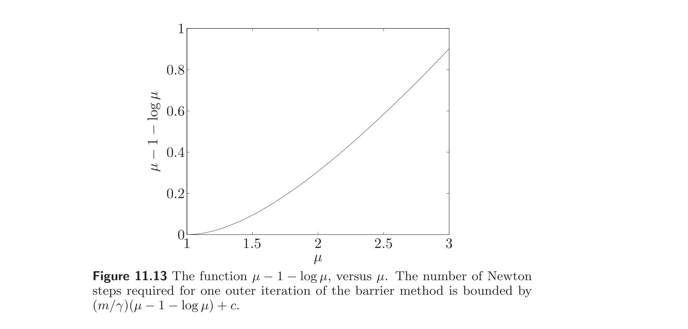
The bound (11.26) shows that the number of Newton steps required in each centering step is bounded by a quantity that depends mostly on $\mu$, the factor by which $t$ is updated in each outer step of the barrier method, and $m$, the number of inequality constraints in the problem. It also depends, weakly, on the parameters $\alpha$ and $\beta$ used in the line search for the inner iterations, and in a very weak way on the tolerance used to terminate the inner iterations. It is interesting to note that the bound does not depend on $n$, the dimension of the variable, or $p$, the number of equality constraints, or the particular values of the problem data, i.e., the objective and constraint functions (provided the self-concordance assumption in §11.5.1 holds). Finally, we note that it does not depend on $t$; in particular, as $t \to \infty$, a uniform bound on the number of Newton steps per outer iteration holds.
界 (11.26) 表明每次中心化步所需牛顿步数受一个量的约束，该量主要依赖 $\mu$（每次外层步中 $t$ 的更新因子）和 $m$（不等式约束数）。它还弱依赖内层迭代线搜索的参数 $\alpha$ 和 $\beta$，以及终止内层迭代的容差（依赖极弱）。值得注意，该界不依赖 $n$（变量维数）、$p$（等式约束数）或问题数据的具体值（即目标和约束函数，只要 §11.5.1 的自协调性假设成立）。最后，它不依赖 $t$；特别地，$t \to \infty$ 时每次外层迭代牛顿步数的一致界成立。
11.5.3 Total number of Newton iterations
11.5.3 牛顿迭代总数
We can now give an upper bound on the total number of Newton steps in the barrier method, not counting the initial centering step (which we will analyze later, as part of phase I). We multiply (11.26), which bounds the number of Newton steps per outer iteration, by (11.13), the number of outer steps required, to obtain
$$ N = \left\lceil \frac{\log(m/(t^{(0)}\epsilon))}{\log \mu} \right\rceil \left(\frac{m(\mu - 1 - \log \mu)}{\gamma} + c\right), \tag{11.27} $$
an upper bound on the total number of Newton steps required. This formula shows that when the self-concordance assumption holds, we can bound the number of Newton steps required by the barrier method, for any value of $\mu > 1$.
If we fix $\mu$ and $m$, the bound $N$ is proportional to $\log(m/(t^{(0)}\epsilon))$, which is the log of the ratio of the initial duality gap $m/t^{(0)}$ to the final duality gap $\epsilon$, i.e., the log of the required duality gap reduction. We can therefore say that the barrier method converges at least linearly, since the number of steps required to reach a given precision grows logarithmically with the inverse of the precision.
If $\mu$, and the required duality gap reduction factor, are fixed, the bound $N$ grows linearly with $m$, the number of inequalities. The bound $N$ is independent of the other problem dimensions $n$ and $p$, and the particular problem data or functions. We will see below that by a particular choice of $\mu$, that depends on $m$, we can obtain a bound on the number of Newton steps that grows only as $\sqrt{m}$, instead of as $m$.
现在可给出障碍法牛顿步总数的上界，不计初始中心化步（稍后作为阶段 I 一部分分析）。将每次外层迭代牛顿步数的界 (11.26) 乘以所需外层步数 (11.13)，得
$$ N = \left\lceil \frac{\log(m/(t^{(0)}\epsilon))}{\log \mu} \right\rceil \left(\frac{m(\mu - 1 - \log \mu)}{\gamma} + c\right), \tag{11.27} $$
即所需牛顿步总数的上界。此公式表明，自协调性假设成立时，可对任意 $\mu > 1$ 界定障碍法所需牛顿步数。
固定 $\mu$ 和 $m$，界 $N$ 正比于 $\log(m/(t^{(0)}\epsilon))$，即初始对偶间隙 $m/t^{(0)}$ 与最终对偶间隙 $\epsilon$ 之比的对数，亦即所需对偶间隙缩减因子的对数。故可称障碍法至少线性收敛，因达到给定精度所需步数随精度倒数对数增长。
固定 $\mu$ 和所需对偶间隙缩减因子，界 $N$ 随 $m$（不等式数）线性增长。界 $N$ 不依赖其他问题维度 $n$、$p$ 和具体问题数据或函数。下面将看到，通过选取依赖 $m$ 的特定 $\mu$，可使牛顿步数界仅按 $\sqrt{m}$ 增长，而非 $m$。
Finally, we analyze the bound $N$ as a function of the algorithm parameter $\mu$. As $\mu$ approaches one, the first term in $N$ grows large, and therefore so does $N$. This is consistent with our intuition and observation that for $\mu$ near one, the number of outer iterations is very large. As $\mu$ becomes large, the bound $N$ grows approximately as $\mu/\log \mu$, this time because the bound on the number of Newton steps per outer iteration grows linearly with $\mu$, while the number of outer iterations decreases only as $1/\log \mu$. Thus, the bound grows large for $\mu$ near one, and for $\mu$ large, and attains a minimum at an intermediate value of $\mu$.
The variation of the bound with the parameter $\mu$ is illustrated in figure 11.14, which shows the bound (11.27) versus $\mu$ for the values
$$ c = 6, \quad \gamma = 1/375, \quad m/(t^{(0)}\epsilon) = 10^5, \quad m = 100. $$
The bound is qualitatively consistent with intuition, and our observations: it grows very large as $\mu$ approaches one, and increases, more slowly, as $\mu$ becomes large. The bound $N$ has a minimum at $\mu \approx 1.02$, which gives a bound on the total number of Newton iterations around 8000. The complexity analysis of Newton's method is conservative, but the basic trade-off in the choice of $\mu$ is reflected in the plot. (In practice, far larger values of $\mu$, from around 2 to 100, work very well, and require a total number of Newton iterations on the order of a few tens.)
最后分析界 $N$ 作为算法参数 $\mu$ 的函数。$\mu \to 1$ 时 $N$ 第一项变大，故 $N$ 变大。这与直觉和观察一致：$\mu$ 接近 1 时外层迭代数很大。$\mu$ 变大时，界 $N$ 近似按 $\mu/\log \mu$ 增长，因每次外层迭代牛顿步数界随 $\mu$ 线性增长，而外层迭代数仅按 $1/\log \mu$ 减少。故界在 $\mu$ 接近 1 和 $\mu$ 大时都变大，在中间 $\mu$ 值处取最小。
界随参数 $\mu$ 的变化见图 11.14，它显示 (11.27) 的界对 $\mu$，取值
$$ c = 6, \quad \gamma = 1/375, \quad m/(t^{(0)}\epsilon) = 10^5, \quad m = 100. $$
界在定性上与直觉和观察一致：$\mu \to 1$ 时变得很大，$\mu$ 大时增长较慢。界 $N$ 在 $\mu \approx 1.02$ 处取最小，给出牛顿迭代总数约 8000 的界。牛顿法的复杂度分析保守，但 $\mu$ 选取的基本权衡反映在图中。（实践中，$\mu$ 从约 2 到 100 的更大值工作良好，所需牛顿迭代总数仅几十量级。）
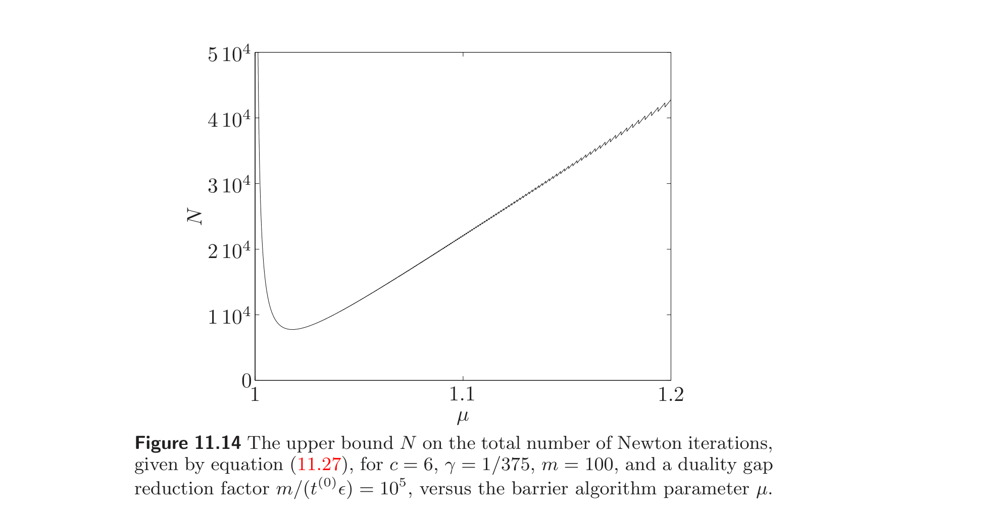
Choosing µ as a function of m
将 µ 选作 m 的函数
When $\mu$ (and the required duality gap reduction) is fixed, the bound (11.27) grows linearly with $m$, the number of inequalities. It turns out we can obtain a better exponent for $m$ by making $\mu$ a function of $m$. Suppose we choose
$$ \mu = 1 + 1/\sqrt{m}. \tag{11.28} $$
Then we can bound the second term in (11.27) as
$$ \mu - 1 - \log \mu = 1/\sqrt{m} - \log(1 + 1/\sqrt{m}) \le 1/\sqrt{m} - 1/\sqrt{m} + 1/(2m) = 1/(2m) $$
(using $-\log(1 + a) \le -a + a^2/2$ for $a \ge 0$). Using concavity of the logarithm, we also have
$$ \log \mu = \log(1 + 1/\sqrt{m}) \ge (\log 2)/\sqrt{m}. $$
Using these inequalities we can bound the total number of Newton steps by
$$ N \le \left\lceil \frac{\log(m/(t^{(0)}\epsilon))}{\log \mu} \right\rceil \left(\frac{m(\mu - 1 - \log \mu)}{\gamma} + c\right) \le \left\lceil \frac{\sqrt{m}\log(m/(t^{(0)}\epsilon))}{\log 2} \right\rceil \left(\frac{1}{2\gamma} + c\right) $$
$$ = \left\lceil \sqrt{m} \log_2\frac{m}{t^{(0)}\epsilon} \right\rceil \left(\frac{1}{2\gamma} + c\right) \le c_1 + c_2 \sqrt{m}, \tag{11.29} $$
where
$$ c_1 = \frac{1}{2\gamma} + c, \qquad c_2 = \log_2\frac{m}{t^{(0)}\epsilon} \left(\frac{1}{2\gamma} + c\right). $$
当 $\mu$（及所需对偶间隙缩减）固定时，界 (11.27) 随 $m$（不等式数）线性增长。通过使 $\mu$ 成为 $m$ 的函数，可得到 $m$ 的更好指数。设选
$$ \mu = 1 + 1/\sqrt{m}. \tag{11.28} $$
则可界定 (11.27) 的第二项为
$$ \mu - 1 - \log \mu = 1/\sqrt{m} - \log(1 + 1/\sqrt{m}) \le 1/\sqrt{m} - 1/\sqrt{m} + 1/(2m) = 1/(2m) $$
（用 $-\log(1 + a) \le -a + a^2/2$（$a \ge 0$））。由对数凹性，还有
$$ \log \mu = \log(1 + 1/\sqrt{m}) \ge (\log 2)/\sqrt{m}. $$
用这些不等式可界定牛顿步总数为
$$ N \le \left\lceil \frac{\log(m/(t^{(0)}\epsilon))}{\log \mu} \right\rceil \left(\frac{m(\mu - 1 - \log \mu)}{\gamma} + c\right) \le \left\lceil \frac{\sqrt{m}\log(m/(t^{(0)}\epsilon))}{\log 2} \right\rceil \left(\frac{1}{2\gamma} + c\right) $$
$$ = \left\lceil \sqrt{m} \log_2\frac{m}{t^{(0)}\epsilon} \right\rceil \left(\frac{1}{2\gamma} + c\right) \le c_1 + c_2 \sqrt{m}, \tag{11.29} $$
其中
$$ c_1 = \frac{1}{2\gamma} + c, \qquad c_2 = \log_2\frac{m}{t^{(0)}\epsilon} \left(\frac{1}{2\gamma} + c\right). $$
Here $c_1$ depends (and only weakly) on algorithm parameters for the centering Newton steps, and $c_2$ depends on these and the required duality gap reduction. Note that the term $\log_2(m/(t^{(0)}\epsilon))$ is exactly the number of bits of required duality gap reduction.
For fixed duality gap reduction, the bound (11.29) grows as $\sqrt{m}$, whereas the bound $N$ in (11.27) grows like $m$, if the parameter $\mu$ is held constant. For this reason the barrier method, with parameter value (11.28), is said to be an order $\sqrt{m}$ method.
In practice, we would not use the value $\mu = 1 + 1/\sqrt{m}$, which is far too small, or even decrease $\mu$ as a function of $m$. Our only interest in this value of $\mu$ is that it (approximately) minimizes our (very conservative) upper bound on the number of Newton steps, and yields an overall estimate that grows as $\sqrt{m}$, instead of $m$.
此处 $c_1$（仅弱）依赖中心化牛顿步的算法参数，$c_2$ 依赖这些参数和所需对偶间隙缩减。注意 $\log_2(m/(t^{(0)}\epsilon))$ 恰为所需对偶间隙缩减的比特数。
固定对偶间隙缩减时，界 (11.29) 按 $\sqrt{m}$ 增长，而若参数 $\mu$ 固定，(11.27) 的界 $N$ 按 $m$ 增长。因此，取参数值 (11.28) 的障碍法称为 $\sqrt{m}$ 阶方法。
实践中不会用 $\mu = 1 + 1/\sqrt{m}$（太小），也不会随 $m$ 减小 $\mu$。对此 $\mu$ 值的兴趣仅在于它（近似）最小化所需牛顿步数的（非常保守的）上界，并给出按 $\sqrt{m}$ 而非 $m$ 增长的整体估计。
11.5.4 Feasibility problems
11.5.4 可行性问题
In this section we analyze the complexity of a (minor) variation on the basic phase I method described in §11.4.1, used to solve a set of convex inequalities,
$$ f_1(x) \le 0, \ldots, f_m(x) \le 0, \tag{11.30} $$
where $f_1, \ldots, f_m$ are convex, with continuous second derivatives. (We will consider equality constraints later.) We assume that the phase I problem
$$ \begin{array}{ll} \text{minimize} & s \\ \text{subject to} & f_i(x) \le s, \quad i = 1, \ldots, m \end{array} \tag{11.31} $$
satisfies the conditions in §11.5.1. In particular we assume that the feasible set of the inequalities (11.30) (which of course can be empty) is contained in a Euclidean ball of radius $R$:
$$ \{x \mid f_i(x) \le 0, \, i = 1, \ldots, m\} \subseteq \{x \mid \|x\|_2 \le R\}. $$
We can interpret $R$ as a prior bound on the norm of any point in the feasible set of the inequalities. This assumption implies that the sublevel sets of the phase I problem are bounded. Without loss of generality, we will start the phase I method at the point $x = 0$. We define $F = \max_i f_i(0)$, which is the maximum constraint violation, assumed to be positive (since otherwise $x = 0$ satisfies the inequalities (11.30)). We define $\bar p^\star$ as the optimal value of the phase I optimization problem (11.31).
The sign of $\bar p^\star$ determines whether or not the set of inequalities (11.30) is feasible. The magnitude of $\bar p^\star$ also has a meaning. If $\bar p^\star$ is positive and large (say, near $F$, the largest value it can have) it means that the set of inequalities is quite infeasible, in the sense that for each $x$, at least one of the inequalities is substantially violated (by at least $\bar p^\star$). On the other hand, if $\bar p^\star$ is negative and large, it means that the set of inequalities is quite feasible, in the sense that there is not only an $x$ for which $f_i(x)$ are all nonpositive, but in fact there is an $x$ for which $f_i(x)$ are all quite negative (no more than $\bar p^\star$). Thus, the magnitude $|\bar p^\star|$ is a measure of how clearly the set of inequalities is feasible or infeasible, and therefore related to the difficulty of determining feasibility of the inequalities (11.30). In particular, if $|\bar p^\star|$ is small, it means the problem is near the boundary between feasibility and infeasibility.
本节分析 §11.4.1 基本阶段 I 方法的一个（微小）变体的复杂度，用于求解凸不等式组
$$ f_1(x) \le 0, \ldots, f_m(x) \le 0, \tag{11.30} $$
其中 $f_1, \ldots, f_m$ 凸，有连续二阶导数。（等式约束稍后考虑。）假设阶段 I 问题
$$ \begin{array}{ll} \text{minimize} & s \\ \text{subject to} & f_i(x) \le s, \quad i = 1, \ldots, m \end{array} \tag{11.31} $$
满足 §11.5.1 的条件。特别假设不等式 (11.30) 的可行集（当然可能为空）包含于半径 $R$ 的欧氏球：
$$ \{x \mid f_i(x) \le 0, \, i = 1, \ldots, m\} \subseteq \{x \mid \|x\|_2 \le R\}. $$
$R$ 可解释为不等式可行集中任意点的范数的先验界。此假设意味着阶段 I 问题的下水平集有界。不失一般性，从 $x = 0$ 启动阶段 I。定义 $F = \max_i f_i(0)$ 为最大约束违反度，假设为正（否则 $x = 0$ 已满足 (11.30)）。定义 $\bar p^\star$ 为阶段 I 优化问题 (11.31) 的最优值。
$\bar p^\star$ 的符号决定不等式组 (11.30) 是否可行。$|\bar p^\star|$ 的大小也有意义。若 $\bar p^\star$ 为正且大（如接近 $F$，其最大可能值），则不等式组相当不可行，即对每个 $x$ 至少有一个不等式被实质性违反（至少 $\bar p^\star$）。反之，若 $\bar p^\star$ 为负且大，则不等式组相当可行，即不仅存在 $x$ 使所有 $f_i(x)$ 非正，且存在 $x$ 使所有 $f_i(x)$ 相当负（不超过 $\bar p^\star$）。故 $|\bar p^\star|$ 度量不等式组可行或不可行的清晰程度，从而与判定 (11.30) 可行性的难度相关。特别地，$|\bar p^\star|$ 小意味着问题接近可行与不可行的边界。
To determine feasibility of the inequalities, we use a variation on the basic phase I problem (11.31). We add a redundant linear inequality $a^T x \le 1$, to obtain
$$ \begin{array}{ll} \text{minimize} & s \\ \text{subject to} & f_i(x) \le s, \quad i = 1, \ldots, m \\ & a^T x \le 1. \end{array} \tag{11.32} $$
We will specify $a$ later. Our choice will satisfy $\|a\|_2 \le 1/R$, so $\|x\|_2 \le R$ implies $a^T x \le 1$, i.e., the extra constraint is redundant.
We will choose $a$ and $s_0$ so that $x = 0$, $s = s_0$ is on the central path of the problem (11.32), with a parameter value $t^{(0)}$, i.e., they minimize
$$ t^{(0)} s - \sum_{i=1}^m \log(s - f_i(x)) - \log(1 - a^T x). $$
Setting to zero the derivative with respect to $s$, we get
$$ t^{(0)} = \sum_{i=1}^m \frac{1}{s_0 - f_i(0)}. \tag{11.33} $$
Setting to zero the gradient with respect to $x$ yields
$$ a = -\sum_{i=1}^m \frac{1}{s_0 - f_i(0)} \nabla f_i(0). \tag{11.34} $$
So it remains only to pick the parameter $s_0$; once we have chosen $s_0$, the vector $a$ is given by (11.34), and the parameter $t^{(0)}$ is given by (11.33). Since $x = 0$ and $s = s_0$ must be strictly feasible for the phase I problem (11.32), we must choose $s_0 > F$.
We must also pick $s_0$ to make sure that $\|a\|_2 \le 1/R$. From (11.34), we have
$$ \|a\|_2 \le \sum_{i=1}^m \frac{1}{s_0 - f_i(0)} \|\nabla f_i(0)\| \le \frac{mG}{s_0 - F}, $$
where $G = \max_i \|\nabla f_i(0)\|_2$. Therefore we can take $s_0 = mGR + F$, which ensures $\|a\|_2 \le 1/R$, so the extra linear inequality is redundant.
Using (11.33), we have
$$ t^{(0)} = \sum_{i=1}^m \frac{1}{mGR + F - f_i(0)} \ge \frac{1}{mGR}, $$
since $F = \max_i f_i(0)$. Thus $x = 0$, $s = s_0$ are on the central path for the phase I problem (11.32), with initial duality gap
$$ \frac{m + 1}{t^{(0)}} \le (m + 1) m G R. $$
为判定不等式的可行性，用基本阶段 I 问题 (11.31) 的变体。加一个冗余线性不等式 $a^T x \le 1$，得
$$ \begin{array}{ll} \text{minimize} & s \\ \text{subject to} & f_i(x) \le s, \quad i = 1, \ldots, m \\ & a^T x \le 1. \end{array} \tag{11.32} $$
$a$ 稍后指定。选择将满足 $\|a\|_2 \le 1/R$，故 $\|x\|_2 \le R$ 蕴含 $a^T x \le 1$，即额外约束冗余。
选 $a$ 和 $s_0$ 使 $x = 0$、$s = s_0$ 在问题 (11.32) 的中心路径上，对应参数值 $t^{(0)}$，即使它们极小化
$$ t^{(0)} s - \sum_{i=1}^m \log(s - f_i(x)) - \log(1 - a^T x). $$
对 $s$ 的导数置零，得
$$ t^{(0)} = \sum_{i=1}^m \frac{1}{s_0 - f_i(0)}. \tag{11.33} $$
对 $x$ 的梯度置零，得
$$ a = -\sum_{i=1}^m \frac{1}{s_0 - f_i(0)} \nabla f_i(0). \tag{11.34} $$
故只需选参数 $s_0$；一旦选定 $s_0$，向量 $a$ 由 (11.34) 给出，参数 $t^{(0)}$ 由 (11.33) 给出。因 $x = 0$、$s = s_0$ 必须对阶段 I 问题 (11.32) 严格可行，须选 $s_0 > F$。
还须选 $s_0$ 确保 $\|a\|_2 \le 1/R$。由 (11.34)，
$$ \|a\|_2 \le \sum_{i=1}^m \frac{1}{s_0 - f_i(0)} \|\nabla f_i(0)\| \le \frac{mG}{s_0 - F}, $$
其中 $G = \max_i \|\nabla f_i(0)\|_2$。故可取 $s_0 = mGR + F$，保证 $\|a\|_2 \le 1/R$，额外线性不等式冗余。
由 (11.33)，
$$ t^{(0)} = \sum_{i=1}^m \frac{1}{mGR + F - f_i(0)} \ge \frac{1}{mGR}, $$
因 $F = \max_i f_i(0)$。故 $x = 0$、$s = s_0$ 在阶段 I 问题 (11.32) 的中心路径上，初始对偶间隙为
$$ \frac{m + 1}{t^{(0)}} \le (m + 1) m G R. $$
To solve the original inequalities (11.30) we need to determine the sign of $\bar p^\star$. We can stop when either the primal objective value of (11.32) is negative, or the dual objective value is positive. One of these two cases must occur when the duality gap for (11.32) is less than $|\bar p^\star|$.
We use the barrier method to solve (11.32), starting from a central point with duality gap no more than $(m + 1) m G R$, and terminating when (or before) the duality gap is less than $|\bar p^\star|$. Using the results of the previous section, this requires no more than
$$ \left\lceil \sqrt{m + 1} \, \log_2 \frac{m(m + 1) G R}{|\bar p^\star|} \right\rceil \left(\frac{1}{2\gamma} + c\right) \tag{11.35} $$
Newton steps. (Here we take $\mu = 1 + 1/\sqrt{m + 1}$, which gives a better complexity exponent for $m$ than a fixed value of $\mu$.)
The bound (11.35) grows only slightly faster than $\sqrt{m}$, and depends weakly on the algorithm parameters used in the centering steps. It is approximately proportional to $\log_2((GR)/|\bar p^\star|)$, which can be interpreted as a measure of how difficult the particular feasibility problem is, or how close it is to the boundary between feasibility and infeasibility.
求解原始不等式 (11.30) 需确定 $\bar p^\star$ 的符号。当 (11.32) 的原始目标值为负或对偶目标值为正时即可停止。当 (11.32) 的对偶间隙小于 $|\bar p^\star|$ 时，二者之一必发生。
用障碍法求解 (11.32)，从对偶间隙不超过 $(m + 1) m G R$ 的中心点出发，当（或之前）对偶间隙小于 $|\bar p^\star|$ 时终止。用上节结果，所需牛顿步数不超过
$$ \left\lceil \sqrt{m + 1} \, \log_2 \frac{m(m + 1) G R}{|\bar p^\star|} \right\rceil \left(\frac{1}{2\gamma} + c\right) \tag{11.35} $$
（此处取 $\mu = 1 + 1/\sqrt{m + 1}$，给出比固定 $\mu$ 更好的 $m$ 复杂度指数。）
界 (11.35) 仅略快于 $\sqrt{m}$ 增长，弱依赖中心化步的算法参数。它近似正比于 $\log_2((GR)/|\bar p^\star|)$，后者可解释为特定可行性问题的难度度量，或其接近可行与不可行边界的程度。
Feasibility problems with equality constraints
含等式约束的可行性问题
We can apply the same analysis to feasibility problems that include equality constraints, by eliminating the equality constraints. This does not affect the self-concordance of the problem, but it does mean that $G$ and $R$ refer to the reduced, or eliminated, problem.
可通过消去等式约束，将同样分析应用于含等式约束的可行性问题。这不影响问题的自协调性，但 $G$ 和 $R$ 指消去后的化简问题。
11.5.5 Combined phase I/phase II complexity
11.5.5 阶段 I/II 组合复杂度
In this section we give an end-to-end complexity analysis for solving the problem
$$ \begin{array}{ll} \text{minimize} & f_0(x) \\ \text{subject to} & f_i(x) \le 0, \quad i = 1, \ldots, m \\ & Ax = b \end{array} $$
using (a variation on) the barrier method. First we solve the phase I problem
$$ \begin{array}{ll} \text{minimize} & s \\ \text{subject to} & f_i(x) \le s, \quad i = 1, \ldots, m \\ & f_0(x) \le M \\ & Ax = b \\ & a^T x \le 1, \end{array} $$
which we assume satisfies the self-concordance and bounded sublevel set assumptions of §11.5.1. Here we have added two redundant inequalities to the basic phase I problem. The constraint $f_0(x) \le M$ is added to guarantee that the phase I central path intersects the central path for phase II, as described in section §11.4.1 (see (11.21)). The number $M$ is a prior bound on the optimal value of the problem. The second added constraint is the linear inequality $a^T x \le 1$, where $a$ is chosen as described in §11.5.4. We use the barrier method to solve this problem, with $\mu = 1 + 1/\sqrt{m + 2}$, and the starting points $x = 0$, $s = s_0$ given in §11.5.4.
To either find a strictly feasible point, or determine the problem is infeasible, requires no more than
$$ N_I = \left\lceil \sqrt{m + 2} \, \log_2 \frac{(m + 1)(m + 2) G R}{|\bar p^\star|} \right\rceil \left(\frac{1}{2\gamma} + c\right) \tag{11.36} $$
Newton steps, where $G$ and $R$ are as given in §11.5.4. If the problem is infeasible we are done; if it is feasible, then we find a point in phase I, associated with $s = 0$, that lies on the central path of the phase II problem
$$ \begin{array}{ll} \text{minimize} & f_0(x) \\ \text{subject to} & f_i(x) \le 0, \quad i = 1, \ldots, m \\ & Ax = b \\ & a^T x \le 1. \end{array} $$
The associated initial duality gap of this initial point is no more than $(m + 1)(M - p^\star)$ (see (11.22)).
We assume the phase II problem also satisfies the self-concordance and bounded sublevel set assumptions in §11.5.1.
We now proceed to phase II, again using the barrier method. We must reduce the duality gap from its initial value, which is no more than $(m + 1)(M - p^\star)$, to some tolerance $\epsilon > 0$. This takes at most
$$ N_{II} = \left\lceil \sqrt{m + 1} \, \log_2 \frac{(m + 1)(M - p^\star)}{\epsilon} \right\rceil \left(\frac{1}{2\gamma} + c\right) \tag{11.37} $$
Newton steps.
The total number of Newton steps is therefore no more than $N_I + N_{II}$. This bound grows with the number of inequalities $m$ approximately as $\sqrt{m}$, and includes two terms that depend on the particular problem instance,
$$ \log_2 \frac{GR}{|\bar p^\star|}, \qquad \log_2 \frac{M - p^\star}{\epsilon}. $$
本节给出用（变体）障碍法求解问题
$$ \begin{array}{ll} \text{minimize} & f_0(x) \\ \text{subject to} & f_i(x) \le 0, \quad i = 1, \ldots, m \\ & Ax = b \end{array} $$
的端到端复杂度分析。先解阶段 I 问题
$$ \begin{array}{ll} \text{minimize} & s \\ \text{subject to} & f_i(x) \le s, \quad i = 1, \ldots, m \\ & f_0(x) \le M \\ & Ax = b \\ & a^T x \le 1, \end{array} $$
假设它满足 §11.5.1 的自协调性和有界下水平集假设。此处对基本阶段 I 问题加了两个冗余不等式。约束 $f_0(x) \le M$ 用于保证阶段 I 中心路径与阶段 II 中心路径相交，如 §11.4.1 所述（见 (11.21)）。$M$ 是问题最优值的先验界。第二个附加约束是线性不等式 $a^T x \le 1$，$a$ 如 §11.5.4 所述选取。用障碍法求解此问题，取 $\mu = 1 + 1/\sqrt{m + 2}$，起点 $x = 0$、$s = s_0$ 如 §11.5.4 给出。
找到严格可行点或判定问题不可行所需牛顿步数不超过
$$ N_I = \left\lceil \sqrt{m + 2} \, \log_2 \frac{(m + 1)(m + 2) G R}{|\bar p^\star|} \right\rceil \left(\frac{1}{2\gamma} + c\right) \tag{11.36} $$
其中 $G$ 和 $R$ 如 §11.5.4 所述。若不可行则结束；若可行，则在阶段 I 中找到一个对应 $s = 0$、位于阶段 II 问题
$$ \begin{array}{ll} \text{minimize} & f_0(x) \\ \text{subject to} & f_i(x) \le 0, \quad i = 1, \ldots, m \\ & Ax = b \\ & a^T x \le 1. \end{array} $$
中心路径上的点。该初始点的初始对偶间隙不超过 $(m + 1)(M - p^\star)$（见 (11.22)）。
假设阶段 II 问题也满足 §11.5.1 的自协调性和有界下水平集假设。
现进入阶段 II，仍用障碍法。须将对偶间隙从初始值（不超过 $(m + 1)(M - p^\star)$）降至容差 $\epsilon > 0$。所需牛顿步数不超过
$$ N_{II} = \left\lceil \sqrt{m + 1} \, \log_2 \frac{(m + 1)(M - p^\star)}{\epsilon} \right\rceil \left(\frac{1}{2\gamma} + c\right) \tag{11.37} $$
牛顿步总数不超过 $N_I + N_{II}$。此界随不等式数 $m$ 近似按 $\sqrt{m}$ 增长，并含两个依赖具体问题实例的项：
$$ \log_2 \frac{GR}{|\bar p^\star|}, \qquad \log_2 \frac{M - p^\star}{\epsilon}. $$
11.5.6 Summary
11.5.6 总结
The complexity analysis given in this section is mostly of theoretical interest. In particular, we remind the reader that the choice $\mu = 1 + 1/\sqrt{m}$, discussed in this section, would be a very poor one to use in practice; its only advantage is that it results in a bound that grows like $\sqrt{m}$ instead of $m$. Likewise, we do not recommend adding the redundant inequality $a^T x \le 1$ in practice.
The actual bounds obtained from the analysis given here are far higher than the numbers of iterations actually observed. Even the order in the bound appears to be conservative. The best bounds on the number of Newton steps grow like $\sqrt{m}$, whereas practical experience suggests that the number of Newton steps hardly grows at all with $m$ (or any other parameter, in fact).
Still, it is comforting to know that when the self-concordance condition holds, we can give a uniform bound on the number of Newton steps required in each centering step of the barrier method. An obvious potential pitfall of the barrier method is the possibility that as $t$ grows, the associated centering problems might become more difficult, requiring more Newton steps. While practical experience suggests that this is not the case, the uniform bound bolsters our confidence that it cannot happen.
Finally, we mention that it is not yet clear whether or not there is a practical advantage to formulating a problem so that the self-concordance condition holds. All we can say is that when the self-concordance condition holds, the barrier method will work well in practice, and we can give a worst case complexity bound.
本节的复杂度分析主要具理论意义。特别提醒读者，本节讨论的 $\mu = 1 + 1/\sqrt{m}$ 在实践中是很差的选择；其唯一优势是给出按 $\sqrt{m}$ 而非 $m$ 增长的界。同样，不推荐在实践中加冗余不等式 $a^T x \le 1$。
此处分析得到的实际界远高于实际观察到的迭代数。即便界的阶也偏保守。牛顿步数的最佳界按 $\sqrt{m}$ 增长，而实践经验表明牛顿步数几乎不随 $m$（或任何其他参数）增长。
尽管如此，当自协调条件成立时能给出障碍法每次中心化步牛顿步数的一致界，令人安心。障碍法的一个明显潜在陷阱是：$t$ 增大时关联的中心化问题可能变难，需更多牛顿步。虽然实践经验表明不会如此，一致界增强了我们对不会发生的信心。
最后提及，将问题表述为满足自协调条件是否有实际优势尚不清楚。只能说：自协调条件成立时，障碍法在实践中表现良好，且可给出最坏情形复杂度界。
11.6 Problems with generalized inequalities
11.6 含广义不等式的问题
In this section we show how the barrier method can be extended to problems with generalized inequalities. We consider the problem
$$ \begin{array}{ll} \text{minimize} & f_0(x) \\ \text{subject to} & f_i(x) \preceq_{K_i} 0, \quad i = 1, \ldots, m \\ & Ax = b, \end{array} \tag{11.38} $$
where $f_0 : \mathbb{R}^n \to \mathbb{R}$ is convex, $f_i : \mathbb{R}^n \to \mathbb{R}^{k_i}$, $i = 1, \ldots, k$, are $K_i$-convex, and $K_i \subseteq \mathbb{R}^{k_i}$ are proper cones. As in §11.1, we assume that the functions $f_i$ are twice continuously differentiable, that $A \in \mathbb{R}^{p \times n}$ with $\mathbf{rank}\, A = p$, and that the problem is solvable.
The KKT conditions for problem (11.38) are
$$ \begin{array}{rl} Ax^\star = b, & f_i(x^\star) \preceq_{K_i} 0, \quad i = 1, \ldots, m \\ \lambda_i^\star \succeq_{K_i^*} 0, & i = 1, \ldots, m \\ \nabla f_0(x^\star) + \sum_{i=1}^m D f_i(x^\star)^T \lambda_i^\star + A^T \nu^\star = 0 & \\ \lambda_i^{\star T} f_i(x^\star) = 0, & i = 1, \ldots, m, \end{array} \tag{11.39} $$
where $D f_i(x^\star) \in \mathbb{R}^{k_i \times n}$ is the derivative of $f_i$ at $x^\star$. We will assume that problem (11.38) is strictly feasible, so the KKT conditions are necessary and sufficient conditions for optimality of $x^\star$.
The development of the method is parallel to the case with scalar constraints. Once we develop a generalization of the logarithm function that applies to general proper cones, we can define a logarithmic barrier function for the problem (11.38). From that point on, the development is essentially the same as in the scalar case. In particular, the central path, barrier method, and complexity analysis are very similar.
本节说明障碍法如何扩展到含广义不等式的问题。考虑问题
$$ \begin{array}{ll} \text{minimize} & f_0(x) \\ \text{subject to} & f_i(x) \preceq_{K_i} 0, \quad i = 1, \ldots, m \\ & Ax = b, \end{array} \tag{11.38} $$
其中 $f_0 : \mathbb{R}^n \to \mathbb{R}$ 凸，$f_i : \mathbb{R}^n \to \mathbb{R}^{k_i}$（$i = 1, \ldots, k$）为 $K_i$-凸，$K_i \subseteq \mathbb{R}^{k_i}$ 为正常锥。如 §11.1，假设 $f_i$ 二次连续可微，$A \in \mathbb{R}^{p \times n}$ 且 $\mathbf{rank}\, A = p$，问题可解。
问题 (11.38) 的 KKT 条件为
$$ \begin{array}{rl} Ax^\star = b, & f_i(x^\star) \preceq_{K_i} 0, \quad i = 1, \ldots, m \\ \lambda_i^\star \succeq_{K_i^*} 0, & i = 1, \ldots, m \\ \nabla f_0(x^\star) + \sum_{i=1}^m D f_i(x^\star)^T \lambda_i^\star + A^T \nu^\star = 0 & \\ \lambda_i^{\star T} f_i(x^\star) = 0, & i = 1, \ldots, m, \end{array} \tag{11.39} $$
其中 $D f_i(x^\star) \in \mathbb{R}^{k_i \times n}$ 为 $f_i$ 在 $x^\star$ 处的导数。假设问题 (11.38) 严格可行，故 KKT 条件是 $x^\star$ 最优性的充要条件。
方法的发展与标量约束情形平行。一旦发展出适用于一般正常锥的对数函数的推广，就可为问题 (11.38) 定义对数障碍函数。此后发展与标量情形基本相同。特别地，中心路径、障碍法和复杂度分析非常相似。
11.6.1 Logarithmic barrier and central path
11.6.1 对数障碍与中心路径
Generalized logarithm for a proper cone
正常锥的广义对数
We first define the analog of the logarithm, $\log x$, for a proper cone $K \subseteq \mathbb{R}^q$. We say that $\psi : \mathbb{R}^q \to \mathbb{R}$ is a generalized logarithm for $K$ if
• $\psi$ is concave, closed, twice continuously differentiable, $\mathbf{dom}\, \psi = \mathbf{int}\, K$, and $\nabla^2 \psi(y) \prec 0$ for $y \in \mathbf{int}\, K$.
• There is a constant $\theta > 0$ such that for all $y \succ_K 0$, and all $s > 0$,
$$ \psi(sy) = \psi(y) + \theta \log s. $$
In other words, $\psi$ behaves like a logarithm along any ray in the cone $K$.
We call the constant $\theta$ the degree of $\psi$ (since $\exp \psi$ is a homogeneous function of degree $\theta$). Note that a generalized logarithm is only defined up to an additive constant; if $\psi$ is a generalized logarithm for $K$, then so is $\psi + a$, where $a \in \mathbb{R}$. The ordinary logarithm is, of course, a generalized logarithm for $\mathbb{R}_+$.
We will use the following two properties, which are satisfied by any generalized logarithm: If $y \succ_K 0$, then
$$ \nabla \psi(y) \succ_{K^*} 0, \tag{11.40} $$
which implies $\psi$ is $K$-increasing (see §3.6.1), and
$$ y^T \nabla \psi(y) = \theta. $$
The first property is proved in exercise 11.15. The second property follows immediately from differentiating $\psi(sy) = \psi(y) + \theta \log s$ with respect to $s$.
先定义正常锥 $K \subseteq \mathbb{R}^q$ 上对数 $\log x$ 的类比。称 $\psi : \mathbb{R}^q \to \mathbb{R}$ 为 $K$ 的广义对数，若
• $\psi$ 凹、闭、二次连续可微，$\mathbf{dom}\, \psi = \mathbf{int}\, K$，且对 $y \in \mathbf{int}\, K$ 有 $\nabla^2 \psi(y) \prec 0$。
• 存在常数 $\theta > 0$，使对所有 $y \succ_K 0$ 和所有 $s > 0$，
$$ \psi(sy) = \psi(y) + \theta \log s. $$
换言之，$\psi$ 沿锥 $K$ 中任一射线表现为对数。
称常数 $\theta$ 为 $\psi$ 的次数（因 $\exp \psi$ 为 $\theta$ 次齐次函数）。注意广义对数仅差一个可加常数确定；若 $\psi$ 为 $K$ 的广义对数，则 $\psi + a$（$a \in \mathbb{R}$）亦然。普通对数当然是 $\mathbb{R}_+$ 的广义对数。
将用以下两个性质（任何广义对数都满足）：若 $y \succ_K 0$，则
$$ \nabla \psi(y) \succ_{K^*} 0, \tag{11.40} $$
蕴含 $\psi$ 为 $K$-递增（见 §3.6.1），且
$$ y^T \nabla \psi(y) = \theta. $$
第一个性质见习题 11.15。第二个性质由对 $\psi(sy) = \psi(y) + \theta \log s$ 关于 $s$ 求导立得。
Example 11.5 Nonnegative orthant. The function $\psi(x) = \sum_{i=1}^n \log x_i$ is a generalized logarithm for $K = \mathbb{R}^n_+$, with degree $n$. For $x \succ 0$,
$$ \nabla \psi(x) = (1/x_1, \ldots, 1/x_n), $$
so $\nabla \psi(x) \succ 0$, and $x^T \nabla \psi(x) = n$.
Example 11.6 Second-order cone. The function
$$ \psi(x) = \log\left(x_{n+1}^2 - \sum_{i=1}^n x_i^2\right) $$
is a generalized logarithm for the second-order cone
$$ K = \left\{x \in \mathbb{R}^{n+1} \,\middle|\, \left(\sum_{i=1}^n x_i^2\right)^{1/2} \le x_{n+1}\right\}, $$
例 11.5 非负象限。 函数 $\psi(x) = \sum_{i=1}^n \log x_i$ 是 $K = \mathbb{R}^n_+$ 的广义对数，次数为 $n$。对 $x \succ 0$，
$$ \nabla \psi(x) = (1/x_1, \ldots, 1/x_n), $$
故 $\nabla \psi(x) \succ 0$，且 $x^T \nabla \psi(x) = n$。
例 11.6 二阶锥。 函数
$$ \psi(x) = \log\left(x_{n+1}^2 - \sum_{i=1}^n x_i^2\right) $$
是二阶锥
$$ K = \left\{x \in \mathbb{R}^{n+1} \,\middle|\, \left(\sum_{i=1}^n x_i^2\right)^{1/2} \le x_{n+1}\right\} $$
with degree 2. The gradient of $\psi$ at a point $x \in \mathbf{int}\, K$ is given by
$$ \frac{\partial \psi(x)}{\partial x_j} = \frac{-2 x_j}{x_{n+1}^2 - \sum_{i=1}^n x_i^2}, \quad j = 1, \ldots, n $$
$$ \frac{\partial \psi(x)}{\partial x_{n+1}} = \frac{2 x_{n+1}}{x_{n+1}^2 - \sum_{i=1}^n x_i^2}. $$
The identities $\nabla \psi(x) \in \mathbf{int}\, K^* = \mathbf{int}\, K$ and $x^T \nabla \psi(x) = 2$ are easily verified.
Example 11.7 Positive semidefinite cone. The function $\psi(X) = \log \det X$ is a generalized logarithm for the cone $\mathcal{S}^p_+$. The degree is $p$, since
$$ \log \det(sX) = \log \det X + p \log s $$
for $s > 0$. The gradient of $\psi$ at a point $X \in \mathcal{S}^p_{++}$ is equal to
$$ \nabla \psi(X) = X^{-1}. $$
Thus, we have $\nabla \psi(X) = X^{-1} \succ 0$, and the inner product of $X$ and $\nabla \psi(X)$ is equal to $\mathbf{tr}(X X^{-1}) = p$.
的广义对数，次数为 2。$\psi$ 在 $x \in \mathbf{int}\, K$ 处的梯度为
$$ \frac{\partial \psi(x)}{\partial x_j} = \frac{-2 x_j}{x_{n+1}^2 - \sum_{i=1}^n x_i^2}, \quad j = 1, \ldots, n $$
$$ \frac{\partial \psi(x)}{\partial x_{n+1}} = \frac{2 x_{n+1}}{x_{n+1}^2 - \sum_{i=1}^n x_i^2}. $$
恒等式 $\nabla \psi(x) \in \mathbf{int}\, K^* = \mathbf{int}\, K$ 和 $x^T \nabla \psi(x) = 2$ 易验证。
例 11.7 半正定锥。 函数 $\psi(X) = \log \det X$ 是锥 $\mathcal{S}^p_+$ 的广义对数。次数为 $p$，因
$$ \log \det(sX) = \log \det X + p \log s $$
（$s > 0$）。$\psi$ 在 $X \in \mathcal{S}^p_{++}$ 处的梯度为
$$ \nabla \psi(X) = X^{-1}. $$
故 $\nabla \psi(X) = X^{-1} \succ 0$，$X$ 与 $\nabla \psi(X)$ 的内积为 $\mathbf{tr}(X X^{-1}) = p$。
Logarithmic barrier functions for generalized inequalities
广义不等式的对数障碍函数
Returning to problem (11.38), let $\psi_1, \ldots, \psi_m$ be generalized logarithms for the cones $K_1, \ldots, K_m$, respectively, with degrees $\theta_1, \ldots, \theta_m$. We define the logarithmic barrier function for problem (11.38) as
$$ \phi(x) = -\sum_{i=1}^m \psi_i(-f_i(x)), \quad \mathbf{dom}\, \phi = \{x \mid f_i(x) \prec_{K_i} 0, \, i = 1, \ldots, m\}. $$
Convexity of $\phi$ follows from the fact that the functions $\psi_i$ are $K_i$-increasing, and the functions $f_i$ are $K_i$-convex (see the composition rule of §3.6.2).
回到问题 (11.38)，设 $\psi_1, \ldots, \psi_m$ 分别为锥 $K_1, \ldots, K_m$ 的广义对数，次数为 $\theta_1, \ldots, \theta_m$。定义问题 (11.38) 的对数障碍函数为
$$ \phi(x) = -\sum_{i=1}^m \psi_i(-f_i(x)), \quad \mathbf{dom}\, \phi = \{x \mid f_i(x) \prec_{K_i} 0, \, i = 1, \ldots, m\}. $$
$\phi$ 的凸性由 $\psi_i$ 为 $K_i$-递增、$f_i$ 为 $K_i$-凸得出（见 §3.6.2 的复合规则）。
The central path
中心路径
The next step is to define the central path for problem (11.38). We define the central point $x^\star(t)$, for $t \ge 0$, as the minimizer of $t f_0 + \phi$, subject to $Ax = b$, i.e., as the solution of
$$ \begin{array}{ll} \text{minimize} & t f_0(x) - \sum_{i=1}^m \psi_i(-f_i(x)) \\ \text{subject to} & Ax = b \end{array} $$
(assuming the minimizer exists, and is unique). Central points are characterized by the optimality condition
$$ t \nabla f_0(x) + \nabla \phi(x) + A^T \nu = t \nabla f_0(x) + \sum_{i=1}^m D f_i(x)^T \nabla \psi_i(-f_i(x)) + A^T \nu = 0, \tag{11.41} $$
for some $\nu \in \mathbb{R}^p$, where $D f_i(x)$ is the derivative of $f_i$ at $x$.
下一步定义问题 (11.38) 的中心路径。对 $t \ge 0$，定义中心点 $x^\star(t)$ 为 $t f_0 + \phi$ 在 $Ax = b$ 下的极小点，即
$$ \begin{array}{ll} \text{minimize} & t f_0(x) - \sum_{i=1}^m \psi_i(-f_i(x)) \\ \text{subject to} & Ax = b \end{array} $$
的解（假设极小点存在且唯一）。中心点由最优性条件
$$ t \nabla f_0(x) + \nabla \phi(x) + A^T \nu = t \nabla f_0(x) + \sum_{i=1}^m D f_i(x)^T \nabla \psi_i(-f_i(x)) + A^T \nu = 0, \tag{11.41} $$
刻画，其中 $\nu \in \mathbb{R}^p$，$D f_i(x)$ 为 $f_i$ 在 $x$ 处的导数。
Dual points on central path
中心路径上的对偶点
As in the scalar case, points on the central path give dual feasible points for the problem (11.38). For $i = 1, \ldots, m$, define
$$ \lambda_i^\star(t) = \frac{1}{t} \nabla \psi_i(-f_i(x^\star(t))), \tag{11.42} $$
and let $\nu^\star(t) = \nu/t$, where $\nu$ is the optimal dual variable in (11.41). We will show that $\lambda_1^\star(t), \ldots, \lambda_m^\star(t)$, together with $\nu^\star(t)$, are dual feasible for the original problem (11.38).
First, $\lambda_i^\star(t) \succ_{K_i^*} 0$, by the monotonicity property (11.40) of generalized logarithms. Second, it follows from (11.41) that the Lagrangian
$$ L(x, \lambda^\star(t), \nu^\star(t)) = f_0(x) + \sum_{i=1}^m \lambda_i^\star(t)^T f_i(x) + \nu^\star(t)^T (Ax - b) $$
is minimized over $x$ by $x = x^\star(t)$. The dual function $g$ evaluated at $(\lambda^\star(t), \nu^\star(t))$ is therefore equal to
$$ g(\lambda^\star(t), \nu^\star(t)) = f_0(x^\star(t)) + \sum_{i=1}^m \lambda_i^\star(t)^T f_i(x^\star(t)) + \nu^\star(t)^T (A x^\star(t) - b) $$
$$ = f_0(x^\star(t)) + (1/t) \sum_{i=1}^m \nabla \psi_i(-f_i(x^\star(t)))^T f_i(x^\star(t)) $$
$$ = f_0(x^\star(t)) - (1/t) \sum_{i=1}^m \theta_i, $$
where $\theta_i$ is the degree of $\psi_i$. In the last line, we use the fact that $y^T \nabla \psi_i(y) = \theta_i$ for $y \succ_{K_i} 0$, and therefore
$$ \lambda_i^\star(t)^T f_i(x^\star(t)) = -\theta_i/t, \quad i = 1, \ldots, m. \tag{11.43} $$
Thus, if we define
$$ \theta = \sum_{i=1}^m \theta_i, $$
then the primal feasible point $x^\star(t)$ and the dual feasible point $(\lambda^\star(t), \nu^\star(t))$ have duality gap $\theta/t$. This is just like the scalar case, except that $\theta$, the sum of the degrees of the generalized logarithms for the cones, appears in place of $m$, the number of inequalities.
与标量情形一样，中心路径上的点给出问题 (11.38) 的对偶可行点。对 $i = 1, \ldots, m$，定义
$$ \lambda_i^\star(t) = \frac{1}{t} \nabla \psi_i(-f_i(x^\star(t))), \tag{11.42} $$
令 $\nu^\star(t) = \nu/t$，其中 $\nu$ 为 (11.41) 中的最优对偶变量。将证 $\lambda_1^\star(t), \ldots, \lambda_m^\star(t)$ 与 $\nu^\star(t)$ 对原问题 (11.38) 对偶可行。
首先，由广义对数的单调性 (11.40)，$\lambda_i^\star(t) \succ_{K_i^*} 0$。其次，由 (11.41)，Lagrange 函数
$$ L(x, \lambda^\star(t), \nu^\star(t)) = f_0(x) + \sum_{i=1}^m \lambda_i^\star(t)^T f_i(x) + \nu^\star(t)^T (Ax - b) $$
在 $x = x^\star(t)$ 处极小化。故对偶函数 $g$ 在 $(\lambda^\star(t), \nu^\star(t))$ 处的值为
$$ g(\lambda^\star(t), \nu^\star(t)) = f_0(x^\star(t)) + \sum_{i=1}^m \lambda_i^\star(t)^T f_i(x^\star(t)) + \nu^\star(t)^T (A x^\star(t) - b) $$
$$ = f_0(x^\star(t)) + (1/t) \sum_{i=1}^m \nabla \psi_i(-f_i(x^\star(t)))^T f_i(x^\star(t)) $$
$$ = f_0(x^\star(t)) - (1/t) \sum_{i=1}^m \theta_i, $$
其中 $\theta_i$ 为 $\psi_i$ 的次数。最后一行用 $y^T \nabla \psi_i(y) = \theta_i$（$y \succ_{K_i} 0$），故
$$ \lambda_i^\star(t)^T f_i(x^\star(t)) = -\theta_i/t, \quad i = 1, \ldots, m. \tag{11.43} $$
故若定义
$$ \theta = \sum_{i=1}^m \theta_i, $$
则原始可行点 $x^\star(t)$ 与对偶可行点 $(\lambda^\star(t), \nu^\star(t))$ 的对偶间隙为 $\theta/t$。这与标量情形完全类似，只是锥的广义对数次之和 $\theta$ 代替了不等式数 $m$。
Example 11.8 Second-order cone programming. We consider an SOCP with variable $x \in \mathbb{R}^n$:
$$ \begin{array}{ll} \text{minimize} & f^T x \\ \text{subject to} & \|A_i x + b_i\|_2 \le c_i^T x + d_i, \quad i = 1, \ldots, m, \end{array} \tag{11.44} $$
where $A_i \in \mathbb{R}^{n_i \times n}$. As we have seen in example 11.6, the function
$$ \psi(y) = \log\left(y_{p+1}^2 - \sum_{i=1}^p y_i^2\right) $$
例 11.8 二阶锥规划。 考虑变量 $x \in \mathbb{R}^n$ 的 SOCP：
$$ \begin{array}{ll} \text{minimize} & f^T x \\ \text{subject to} & \|A_i x + b_i\|_2 \le c_i^T x + d_i, \quad i = 1, \ldots, m, \end{array} \tag{11.44} $$
其中 $A_i \in \mathbb{R}^{n_i \times n}$。如例 11.6 所见，函数
$$ \psi(y) = \log\left(y_{p+1}^2 - \sum_{i=1}^p y_i^2\right) $$
is a generalized logarithm for the second-order cone in $\mathbb{R}^{p+1}$, with degree 2. The corresponding logarithmic barrier function for (11.44) is
$$ \phi(x) = -\sum_{i=1}^m \log\left((c_i^T x + d_i)^2 - \|A_i x + b_i\|_2^2\right), \tag{11.45} $$
with $\mathbf{dom}\, \phi = \{x \mid \|A_i x + b_i\|_2 < c_i^T x + d_i, \, i = 1, \ldots, m\}$. The optimality condition on the central path is $t f + \nabla \phi(x^\star(t)) = 0$, where
$$ \nabla \phi(x) = -2 \sum_{i=1}^m \frac{1}{(c_i^T x + d_i)^2 - \|A_i x + b_i\|_2^2} \left((c_i^T x + d_i) c_i - A_i^T (A_i x + b_i)\right). $$
It follows that the point
$$ z_i^\star(t) = -\frac{2}{t \alpha_i} (A_i x^\star(t) + b_i), \quad w_i^\star(t) = \frac{2}{t \alpha_i} (c_i^T x^\star(t) + d_i), \quad i = 1, \ldots, m, $$
where $\alpha_i = (c_i^T x^\star(t) + d_i)^2 - \|A_i x^\star(t) + b_i\|_2^2$, is strictly feasible in the dual problem
$$ \begin{array}{ll} \text{maximize} & -\sum_{i=1}^m (b_i^T z_i + d_i w_i) \\ \text{subject to} & \sum_{i=1}^m (A_i^T z_i + c_i w_i) = f \\ & \|z_i\|_2 \le w_i, \quad i = 1, \ldots, m. \end{array} $$
The duality gap associated with $x^\star(t)$ and $(z^\star(t), w^\star(t))$ is
$$ \sum_{i=1}^m \left((A_i x^\star(t) + b_i)^T z_i^\star(t) + (c_i^T x^\star(t) + d_i) w_i^\star(t)\right) = \frac{2m}{t}, $$
which agrees with the general formula $\theta/t$, since $\theta_i = 2$.
Example 11.9 Semidefinite programming in inequality form. We consider the SDP with variable $x \in \mathbb{R}^n$,
$$ \begin{array}{ll} \text{minimize} & c^T x \\ \text{subject to} & F(x) = x_1 F_1 + \cdots + x_n F_n + G \preceq 0, \end{array} $$
where $G, F_1, \ldots, F_n \in \mathcal{S}^p$. The dual problem is
$$ \begin{array}{ll} \text{maximize} & \mathbf{tr}(GZ) \\ \text{subject to} & \mathbf{tr}(F_i Z) + c_i = 0, \quad i = 1, \ldots, n \\ & Z \succeq 0. \end{array} $$
Using the generalized logarithm $\log \det X$ for the positive semidefinite cone $\mathcal{S}^p_+$, we have the barrier function (for the primal problem)
$$ \phi(x) = \log \det(-F(x)^{-1}) $$
with $\mathbf{dom}\, \phi = \{x \mid F(x) \prec 0\}$. For strictly feasible $x$, the gradient of $\phi$ is equal to
$$ \frac{\partial \phi(x)}{\partial x_i} = \mathbf{tr}(-F(x)^{-1} F_i), \quad i = 1, \ldots, n, $$
which gives us the optimality conditions that characterize central points:
$$ t c_i + \mathbf{tr}(-F(x^\star(t))^{-1} F_i) = 0, \quad i = 1, \ldots, n. $$
Hence the matrix
$$ Z^\star(t) = \frac{1}{t} (-F(x^\star(t)))^{-1} $$
is strictly dual feasible, and the duality gap associated with $x^\star(t)$ and $Z^\star(t)$ is $p/t$.
是 $\mathbb{R}^{p+1}$ 中二阶锥的广义对数，次数为 2。(11.44) 对应的对数障碍函数为
$$ \phi(x) = -\sum_{i=1}^m \log\left((c_i^T x + d_i)^2 - \|A_i x + b_i\|_2^2\right), \tag{11.45} $$
定义域 $\mathbf{dom}\, \phi = \{x \mid \|A_i x + b_i\|_2 < c_i^T x + d_i, \, i = 1, \ldots, m\}$。中心路径上的最优性条件为 $t f + \nabla \phi(x^\star(t)) = 0$，其中
$$ \nabla \phi(x) = -2 \sum_{i=1}^m \frac{1}{(c_i^T x + d_i)^2 - \|A_i x + b_i\|_2^2} \left((c_i^T x + d_i) c_i - A_i^T (A_i x + b_i)\right). $$
由此，点
$$ z_i^\star(t) = -\frac{2}{t \alpha_i} (A_i x^\star(t) + b_i), \quad w_i^\star(t) = \frac{2}{t \alpha_i} (c_i^T x^\star(t) + d_i), \quad i = 1, \ldots, m, $$
（其中 $\alpha_i = (c_i^T x^\star(t) + d_i)^2 - \|A_i x^\star(t) + b_i\|_2^2$）在对偶问题
$$ \begin{array}{ll} \text{maximize} & -\sum_{i=1}^m (b_i^T z_i + d_i w_i) \\ \text{subject to} & \sum_{i=1}^m (A_i^T z_i + c_i w_i) = f \\ & \|z_i\|_2 \le w_i, \quad i = 1, \ldots, m. \end{array} $$
中严格可行。$x^\star(t)$ 与 $(z^\star(t), w^\star(t))$ 的对偶间隙为
$$ \sum_{i=1}^m \left((A_i x^\star(t) + b_i)^T z_i^\star(t) + (c_i^T x^\star(t) + d_i) w_i^\star(t)\right) = \frac{2m}{t}, $$
与通式 $\theta/t$ 一致，因 $\theta_i = 2$。
例 11.9 不等式形式半正定规划。 考虑变量 $x \in \mathbb{R}^n$ 的 SDP，
$$ \begin{array}{ll} \text{minimize} & c^T x \\ \text{subject to} & F(x) = x_1 F_1 + \cdots + x_n F_n + G \preceq 0, \end{array} $$
其中 $G, F_1, \ldots, F_n \in \mathcal{S}^p$。对偶问题为
$$ \begin{array}{ll} \text{maximize} & \mathbf{tr}(GZ) \\ \text{subject to} & \mathbf{tr}(F_i Z) + c_i = 0, \quad i = 1, \ldots, n \\ & Z \succeq 0. \end{array} $$
用半正定锥 $\mathcal{S}^p_+$ 的广义对数 $\log \det X$，（原始问题的）障碍函数为
$$ \phi(x) = \log \det(-F(x)^{-1}) $$
定义域 $\mathbf{dom}\, \phi = \{x \mid F(x) \prec 0\}$。对严格可行 $x$，$\phi$ 的梯度为
$$ \frac{\partial \phi(x)}{\partial x_i} = \mathbf{tr}(-F(x)^{-1} F_i), \quad i = 1, \ldots, n, $$
给出刻画中心点的最优性条件：
$$ t c_i + \mathbf{tr}(-F(x^\star(t))^{-1} F_i) = 0, \quad i = 1, \ldots, n. $$
故矩阵
$$ Z^\star(t) = \frac{1}{t} (-F(x^\star(t)))^{-1} $$
严格对偶可行，$x^\star(t)$ 与 $Z^\star(t)$ 的对偶间隙为 $p/t$。
11.6.2 Barrier method
11.6.2 障碍法
We have seen that the key properties of the central path generalize to problems with generalized inequalities.
• Computing a point on the central path involves minimizing a twice differentiable convex function subject to equality constraints (which can be done using Newton's method).
• With the central point $x^\star(t)$ we can associate a dual feasible point $(\lambda^\star(t), \nu^\star(t))$ with associated duality gap $\theta/t$. In particular, $x^\star(t)$ is no more than $\theta/t$-suboptimal.
This means we can apply the barrier method, exactly as described in §11.3, to the problem (11.38). The number of outer iterations, or centering steps, required to compute a central point with duality gap $\epsilon$ starting at $x^\star(t^{(0)})$ is equal to
$$ \left\lceil \frac{\log(\theta/(t^{(0)}\epsilon))}{\log \mu} \right\rceil, $$
plus one initial centering step. The only difference between this result and the associated one for the scalar case is that $\theta$ takes the place of $m$.
我们已看到中心路径的关键性质可推广到含广义不等式的问题。
• 计算中心路径上的一点涉及在等式约束下极小化一个二次可微凸函数（可用牛顿法完成）。
• 与中心点 $x^\star(t)$ 可关联一个对偶可行点 $(\lambda^\star(t), \nu^\star(t))$，对偶间隙为 $\theta/t$。特别地，$x^\star(t)$ 的次优性不超过 $\theta/t$。
这意味着可如 §11.3 所述，对问题 (11.38) 应用障碍法。从 $x^\star(t^{(0)})$ 出发计算对偶间隙为 $\epsilon$ 的中心点所需外层迭代数（中心化步数）为
$$ \left\lceil \frac{\log(\theta/(t^{(0)}\epsilon))}{\log \mu} \right\rceil, $$
外加初始中心化步。此结果与标量情形的唯一区别是 $\theta$ 代替了 $m$。
Phase I and feasibility problems
阶段 I 与可行性问题
The phase I methods described in §11.4 are readily extended to problems with generalized inequalities. Let $e_i \succ_{K_i} 0$ be some given, $K_i$-positive vectors, for $i = 1, \ldots, m$. To determine feasibility of the equalities and generalized inequalities
$$ f_1(x) \preceq_{K_1} 0, \ldots, f_L(x) \preceq_{K_m} 0, \quad Ax = b, $$
we solve the problem
$$ \begin{array}{ll} \text{minimize} & s \\ \text{subject to} & f_i(x) \preceq_{K_i} s e_i, \quad i = 1, \ldots, m \\ & Ax = b, \end{array} $$
with variables $x$ and $s \in \mathbb{R}$. The optimal value $\bar p^\star$ determines the feasibility of the equalities and generalized inequalities, exactly as in the case of ordinary inequalities. When $\bar p^\star$ is positive, any dual feasible point with positive objective gives an alternative that proves the set of equalities and generalized inequalities is infeasible (see page 270).
§11.4 的阶段 I 方法易于扩展到含广义不等式的问题。设 $e_i \succ_{K_i} 0$ 为给定的 $K_i$-正向量（$i = 1, \ldots, m$）。为判定等式和广义不等式
$$ f_1(x) \preceq_{K_1} 0, \ldots, f_L(x) \preceq_{K_m} 0, \quad Ax = b, $$
的可行性，求解问题
$$ \begin{array}{ll} \text{minimize} & s \\ \text{subject to} & f_i(x) \preceq_{K_i} s e_i, \quad i = 1, \ldots, m \\ & Ax = b, \end{array} $$
变量为 $x$ 和 $s \in \mathbb{R}$。最优值 $\bar p^\star$ 判定等式和广义不等式的可行性，与普通不等式情形完全相同。$\bar p^\star$ 为正时，任何目标为正的对偶可行点给出证明等式和广义不等式组不可行的替代定理（见第 270 页）。
11.6.3 Examples
11.6.3 例子
A small SOCP
一个小 SOCP
We solve an SOCP
$$ \begin{array}{ll} \text{minimize} & f^T x \\ \text{subject to} & \|A_i x + b_i\|_2 \le c_i^T x + d_i, \quad i = 1, \ldots, m, \end{array} $$
with $x \in \mathbb{R}^{50}$, $m = 50$, and $A_i \in \mathbb{R}^{5 \times 50}$. The problem instance was randomly generated, in such a way that the problem is strictly primal and dual feasible, and has optimal value $p^\star = 1$. We start with a point $x^{(0)}$ on the central path, with a duality gap of 100.
The barrier method is used to solve the problem, using the barrier function
$$ \phi(x) = -\sum_{i=1}^m \log\left((c_i^T x + d_i)^2 - \|A_i x + b_i\|_2^2\right). $$
The centering problems are solved using Newton's method, with the same algorithm parameters as in the examples of §11.3.2: backtracking parameters $\alpha = 0.01$, $\beta = 0.5$, and a stopping criterion $\lambda(x)^2/2 \le 10^{-5}$.
Figure 11.15 shows the duality gap versus cumulative number of Newton steps. The plot is very similar to those for linear and geometric programming, shown in figures 11.4 and 11.6, respectively. We see an approximately constant number of Newton steps required per centering step, and therefore approximately linear convergence of the duality gap. For this example, too, the choice of $\mu$ has little effect on the total number of Newton steps, provided $\mu$ is at least 10 or so. As in the examples for linear and geometric programming, a reasonable choice of $\mu$ is in the range 10 – 100, which results in a total number of Newton steps around 30 (see figure 11.16).
求解 SOCP
$$ \begin{array}{ll} \text{minimize} & f^T x \\ \text{subject to} & \|A_i x + b_i\|_2 \le c_i^T x + d_i, \quad i = 1, \ldots, m, \end{array} $$
其中 $x \in \mathbb{R}^{50}$、$m = 50$、$A_i \in \mathbb{R}^{5 \times 50}$。实例随机生成，使问题严格原始和对偶可行，最优值 $p^\star = 1$。从中心路径上对偶间隙为 100 的点 $x^{(0)}$ 出发。
用障碍法求解，障碍函数为
$$ \phi(x) = -\sum_{i=1}^m \log\left((c_i^T x + d_i)^2 - \|A_i x + b_i\|_2^2\right). $$
中心化问题用牛顿法求解，参数同 §11.3.2 例子：回溯参数 $\alpha = 0.01$、$\beta = 0.5$，停止准则 $\lambda(x)^2/2 \le 10^{-5}$。
图 11.15 为对偶间隙对累计牛顿步数。图与线性规划和几何规划（分别见图 11.4 和 11.6）非常相似。每次中心化步所需牛顿步数近似常数，故对偶间隙近似线性收敛。此例中 $\mu$ 的选取对牛顿步总数影响也小（只要 $\mu$ 至少约 10）。如线性规划和几何规划的例子，$\mu$ 的合理范围为 10–100，所得牛顿步总数约 30（见图 11.16）。
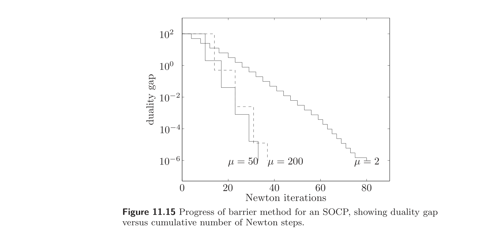
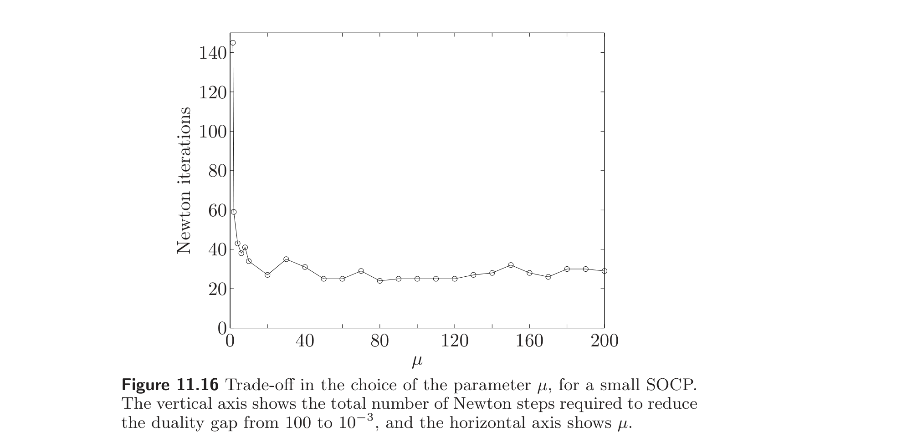
A small SDP
一个小 SDP
Our next example is an SDP
$$ \begin{array}{ll} \text{minimize} & c^T x \\ \text{subject to} & \sum_{i=1}^n x_i F_i + G \preceq 0 \end{array} \tag{11.46} $$
with variable $x \in \mathbb{R}^{100}$, and $F_i \in \mathcal{S}^{100}$, $G \in \mathcal{S}^{100}$. The problem instance was generated randomly, in such a way that the problem is strictly primal and dual feasible, with $p^\star = 1$. The initial point is on the central path, with a duality gap of 100.
We apply the barrier method with logarithmic barrier function
$$ \phi(x) = -\log \det\left(-\sum_{i=1}^n x_i F_i - G\right). $$
The progress of the barrier method for three values of $\mu$ is shown in figure 11.17. Note the similarity with the plots for linear, geometric, and second-order cone programming, shown in figures 11.4, 11.6, and 11.15. As in the other examples, the parameter $\mu$ has only a small effect on the efficiency, provided it is not too small. The number of Newton steps required to reduce the duality gap by a factor $10^5$, versus $\mu$, is shown in figure 11.18.
下一个例子是 SDP
$$ \begin{array}{ll} \text{minimize} & c^T x \\ \text{subject to} & \sum_{i=1}^n x_i F_i + G \preceq 0 \end{array} \tag{11.46} $$
变量 $x \in \mathbb{R}^{100}$，$F_i \in \mathcal{S}^{100}$、$G \in \mathcal{S}^{100}$。实例随机生成，使问题严格原始和对偶可行，$p^\star = 1$。初始点在中心路径上，对偶间隙为 100。
用障碍法求解，对数障碍函数为
$$ \phi(x) = -\log \det\left(-\sum_{i=1}^n x_i F_i - G\right). $$
图 11.17 给出三个 $\mu$ 值下障碍法的进展。注意与线性、几何和二阶锥规划（图 11.4、11.6、11.15）的相似性。与其他例子一样，只要 $\mu$ 不太小，对效率影响小。图 11.18 给出对偶间隙减小因子 $10^5$ 所需牛顿步数对 $\mu$。
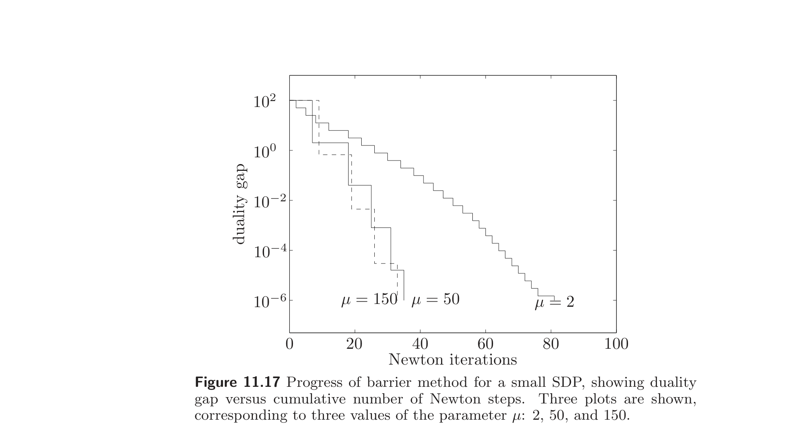
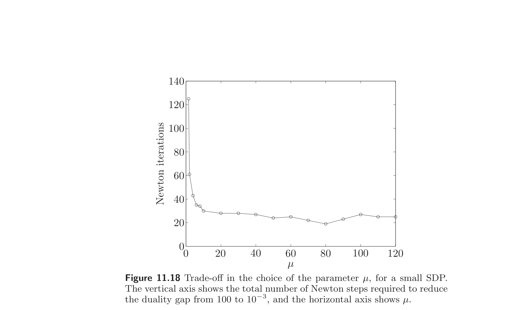
A family of SDPs
一族 SDP
In this section we examine the performance of the barrier method as a function of the problem dimensions. We consider a family of SDPs of the form
$$ \begin{array}{ll} \text{minimize} & \mathbf{1}^T x \\ \text{subject to} & A + \mathbf{diag}(x) \succeq 0, \end{array} \tag{11.47} $$
with variable $x \in \mathbb{R}^n$, and parameter $A \in \mathcal{S}^n$. The matrices $A$ are generated as follows. For $i \ge j$, the coefficients $A_{ij}$ are generated from independent $N(0, 1)$ distributions. For $i < j$, we set $A_{ij} = A_{ji}$, so $A \in \mathcal{S}^n$. We then scale $A$ so that its (spectral) norm is one.
The algorithm parameters are $\mu = 20$, and the same parameters for the centering steps as in the examples above: backtracking parameters $\alpha = 0.01$, $\beta = 0.5$, and stopping criterion $\lambda(x)^2/2 \le 10^{-5}$. The initial point is on the central path with $t^{(0)} = 1$ (i.e., gap $n$). The algorithm is terminated when the initial duality gap is reduced by a factor 8000, i.e., after completing three outer iterations.
Figure 11.19 shows the duality gap versus iteration number for three problem instances, with dimensions $n = 50$, $n = 500$, and $n = 1000$. The plots look very much like the others, and very much like the ones for LPs.
To examine the effect of problem size on the number of Newton steps required, we generate 100 problem instances for each of 20 values of $n$, ranging from $n = 10$ to $n = 1000$. We solve each of these 2000 problems using the barrier method, noting the number of Newton steps required. The results are summarized in figure 11.20, which shows the mean and standard deviation in the number of Newton steps, for each value of $n$. The plot looks very much like the one for LPs, shown in figure 11.8. In particular, the number of Newton steps required grows very slowly, from around 20 to 26 iterations, as the problem dimensions increase by a factor of 100.
本节考察障碍法性能关于问题维度的函数。考虑一族形式为
$$ \begin{array}{ll} \text{minimize} & \mathbf{1}^T x \\ \text{subject to} & A + \mathbf{diag}(x) \succeq 0, \end{array} \tag{11.47} $$
的 SDP，变量 $x \in \mathbb{R}^n$，参数 $A \in \mathcal{S}^n$。矩阵 $A$ 如下生成。对 $i \ge j$，系数 $A_{ij}$ 由独立 $N(0, 1)$ 分布生成。对 $i < j$，令 $A_{ij} = A_{ji}$，使 $A \in \mathcal{S}^n$。然后缩放 $A$ 使其（谱）范数为 1。
算法参数取 $\mu = 20$，中心化步参数同上：回溯参数 $\alpha = 0.01$、$\beta = 0.5$，停止准则 $\lambda(x)^2/2 \le 10^{-5}$。初始点在中心路径上，$t^{(0)} = 1$（即间隙 $n$）。当初始对偶间隙减小因子 8000（即完成三次外层迭代）时终止。
图 11.19 给出三个问题实例（$n = 50$、$n = 500$、$n = 1000$）的对偶间隙对迭代数。图与其他类似，也与 LP 的图很像。
为考察问题规模对所需牛顿步数的影响，对从 $n = 10$ 到 $n = 1000$ 的 20 个 $n$ 值各生成 100 个实例。用障碍法求解这 2000 个问题，记录所需牛顿步数。结果汇总于图 11.20，显示每个 $n$ 值下牛顿步数的均值和标准差。图与 LP 的图 11.8 非常相似。特别地，问题维度增大 100 倍时所需牛顿步数仅从约 20 增到 26，增长很慢。
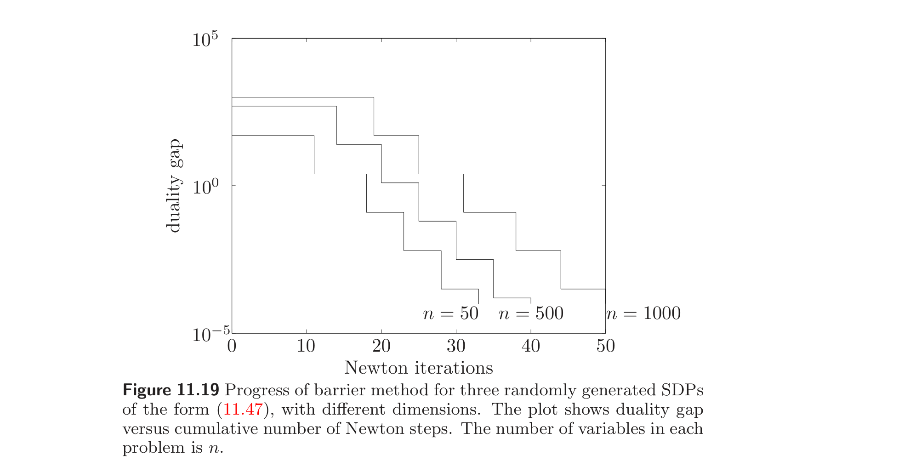
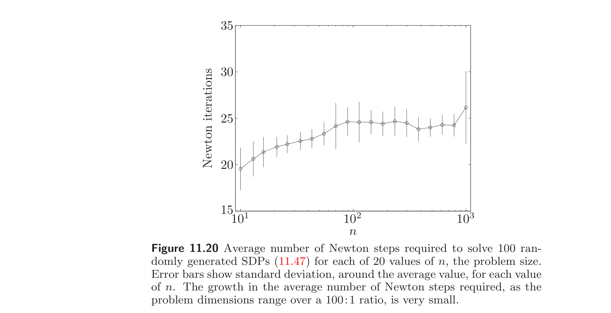
11.6.4 Complexity analysis via self-concordance
11.6.4 通过自协调性的复杂度分析
In this section we extend the complexity analysis of the barrier method for problems with ordinary inequalities (given in §11.5), to problems with generalized inequalities. We have already seen that the number of outer iterations is given by
$$ \left\lceil \frac{\log(\theta/t^{(0)}\epsilon)}{\log \mu} \right\rceil, $$
plus one initial centering step. It remains to bound the number of Newton steps required in each centering step, which we will do using the complexity theory of Newton's method for self-concordant functions. For simplicity, we will exclude the cost of the initial centering.
We make the same assumptions as in §11.5: The function $t f_0 + \phi$ is closed and self-concordant for all $t \ge t^{(0)}$, and the sublevel sets of (11.38) are bounded.
Example 11.10 Second-order cone programming. The function
$$ -\psi(x) = -\log\left(x_{p+1}^2 - \sum_{i=1}^p x_i^2\right) $$
is self-concordant (see example 9.8), so the logarithmic barrier function (11.45) satisfies the closedness and self-concordance assumption for the SOCP (11.44).
Example 11.11 Semidefinite programming. The self-concordance assumption holds for general semidefinite programs, using $\log \det X$ as generalized logarithm for the positive semidefinite cone. For example, for the standard form SDP
$$ \begin{array}{ll} \text{minimize} & \mathbf{tr}(CX) \\ \text{subject to} & \mathbf{tr}(A_i X) = b_i, \quad i = 1, \ldots, p \\ & X \succeq 0, \end{array} $$
with variable $X \in \mathcal{S}^n$, the function $t^{(0)} \mathbf{tr}(CX) - \log \det X$ is self-concordant (and closed), for any $t^{(0)} \ge 0$.
本节把 §11.5 对普通不等式问题的障碍法复杂度分析推广到广义不等式问题。已见外层迭代数为
$$ \left\lceil \frac{\log(\theta/t^{(0)}\epsilon)}{\log \mu} \right\rceil, $$
外加初始中心化步。尚需界定每次中心化步所需牛顿步数，将用自协调函数的牛顿法复杂度理论完成。为简单起见，不计初始中心化代价。
作与 §11.5 相同的假设：函数 $t f_0 + \phi$ 对所有 $t \ge t^{(0)}$ 闭且自协调，(11.38) 的下水平集有界。
例 11.10 二阶锥规划。 函数
$$ -\psi(x) = -\log\left(x_{p+1}^2 - \sum_{i=1}^p x_i^2\right) $$
自协调（见例 9.8），故对数障碍函数 (11.45) 满足 SOCP (11.44) 的闭性和自协调性假设。
例 11.11 半正定规划。 以 $\log \det X$ 作为半正定锥的广义对数，自协调性假设对一般半正定规划成立。例如，对标准形式 SDP
$$ \begin{array}{ll} \text{minimize} & \mathbf{tr}(CX) \\ \text{subject to} & \mathbf{tr}(A_i X) = b_i, \quad i = 1, \ldots, p \\ & X \succeq 0, \end{array} $$
（变量 $X \in \mathcal{S}^n$），函数 $t^{(0)} \mathbf{tr}(CX) - \log \det X$ 对任意 $t^{(0)} \ge 0$ 自协调（且闭）。
We will see that, exactly as in the scalar case, we have
$$ \mu t f_0(x^\star(t)) + \phi(x^\star(t)) - \mu t f_0(x^\star(\mu t)) - \phi(x^\star(\mu t)) \le \theta(\mu - 1 - \log \mu). \tag{11.48} $$
Therefore when the self-concordance and bounded sublevel set conditions hold, the number of Newton steps per centering step is no more than
$$ \frac{\theta(\mu - 1 - \log \mu)}{\gamma} + c, $$
exactly as in the barrier method for problems with ordinary inequalities. Once we establish the basic bound (11.48), the complexity analysis for problems with generalized inequalities is identical to the analysis for problems with ordinary inequalities, with one exception: $\theta$ is the sum of the degrees of the cones, instead of the number of inequalities.
将看到，与标量情形完全相同地，有
$$ \mu t f_0(x^\star(t)) + \phi(x^\star(t)) - \mu t f_0(x^\star(\mu t)) - \phi(x^\star(\mu t)) \le \theta(\mu - 1 - \log \mu). \tag{11.48} $$
故当自协调性和有界下水平集条件成立时，每次中心化步的牛顿步数不超过
$$ \frac{\theta(\mu - 1 - \log \mu)}{\gamma} + c, $$
与普通不等式问题的障碍法完全相同。一旦建立基本界 (11.48)，广义不等式问题的复杂度分析与普通不等式问题的分析相同，唯一例外：$\theta$ 是锥的次数之和，而非不等式数。
Generalized logarithm for dual cone
对偶锥的广义对数
We will use conjugates to prove the bound (11.48). Let $\psi$ be a generalized logarithm for the proper cone $K$, with degree $\theta$. The conjugate of the (convex) function $-\psi$ is
$$ (-\psi)^*(v) = \sup_u \left(v^T u + \psi(u)\right). $$
This function is convex, and has domain $-K^* = \{v \mid v \prec_{K^*} 0\}$. Define $\bar\psi$ by
$$ \bar\psi(v) = -(-\psi)^*(-v) = \inf_u \left(v^T u - \psi(u)\right), \quad \mathbf{dom}\, \bar\psi = \mathbf{int}\, K^*. \tag{11.49} $$
The function $\bar\psi$ is concave, and in fact is a generalized logarithm for the dual cone $K^*$, with the same parameter $\theta$ (see exercise 11.17). We call $\bar\psi$ the dual logarithm associated with the generalized logarithm $\psi$.
From (11.49) we obtain the inequality
$$ \bar\psi(v) + \psi(u) \le u^T v, \tag{11.50} $$
which holds for any $u \succ_K 0$, $v \succ_{K^*} 0$, with equality holding if and only $\nabla \psi(u) = v$ (or equivalently, $\nabla \bar\psi(v) = u$). (This inequality is just a variation on Young's inequality, for concave functions.)
Example 11.12 Second-order cone. The second-order cone has generalized logarithm $\psi(x) = \log(x_{p+1}^2 - \sum_{i=1}^p x_i^2)$, with $\mathbf{dom}\, \psi = \{x \in \mathbb{R}^{p+1} \mid x_{p+1} > (\sum_{i=1}^p x_i^2)^{1/2}\}$. The associated dual logarithm is
$$ \bar\psi(y) = \log\left(y_{p+1}^2 - \sum_{i=1}^p y_i^2\right) + 2 - \log 4, $$
with $\mathbf{dom}\, \bar\psi = \{y \in \mathbb{R}^{p+1} \mid y_{p+1} > (\sum_{i=1}^p y_i^2)^{1/2}\}$ (see exercise 3.36). Except for a constant, it is the same as the original generalized logarithm for the second-order cone.
Example 11.13 Positive semidefinite cone. The dual logarithm associated with $\psi(X) = \log \det X$, with $\mathbf{dom}\, \psi = \mathcal{S}^p_{++}$, is
$$ \bar\psi(Y) = \log \det Y + p, $$
with domain $\mathbf{dom}\, \bar\psi = \mathcal{S}^p_{++}$ (see example 3.23). Again, it is the same generalized logarithm, except for a constant.
用共轭证明界 (11.48)。设 $\psi$ 为正常锥 $K$ 的广义对数，次数 $\theta$。（凸）函数 $-\psi$ 的共轭为
$$ (-\psi)^*(v) = \sup_u \left(v^T u + \psi(u)\right). $$
此函数凸，定义域为 $-K^* = \{v \mid v \prec_{K^*} 0\}$。定义 $\bar\psi$ 为
$$ \bar\psi(v) = -(-\psi)^*(-v) = \inf_u \left(v^T u - \psi(u)\right), \quad \mathbf{dom}\, \bar\psi = \mathbf{int}\, K^*. \tag{11.49} $$
$\bar\psi$ 凹，实际上是对偶锥 $K^*$ 的广义对数，次数同为 $\theta$（见习题 11.17）。称 $\bar\psi$ 为与广义对数 $\psi$ 关联的对偶对数。
由 (11.49) 得不等式
$$ \bar\psi(v) + \psi(u) \le u^T v, \tag{11.50} $$
对任意 $u \succ_K 0$、$v \succ_{K^*} 0$ 成立，等号当且仅当 $\nabla \psi(u) = v$（等价地 $\nabla \bar\psi(v) = u$）时成立。（此不等式只是凹函数 Young 不等式的一个变体。）
例 11.12 二阶锥。 二阶锥的广义对数为 $\psi(x) = \log(x_{p+1}^2 - \sum_{i=1}^p x_i^2)$，$\mathbf{dom}\, \psi = \{x \in \mathbb{R}^{p+1} \mid x_{p+1} > (\sum_{i=1}^p x_i^2)^{1/2}\}$。关联的对偶对数为
$$ \bar\psi(y) = \log\left(y_{p+1}^2 - \sum_{i=1}^p y_i^2\right) + 2 - \log 4, $$
$\mathbf{dom}\, \bar\psi = \{y \in \mathbb{R}^{p+1} \mid y_{p+1} > (\sum_{i=1}^p y_i^2)^{1/2}\}$（见习题 3.36）。除一个常数外，与二阶锥的原广义对数相同。
例 11.13 半正定锥。 与 $\psi(X) = \log \det X$（$\mathbf{dom}\, \psi = \mathcal{S}^p_{++}$）关联的对偶对数为
$$ \bar\psi(Y) = \log \det Y + p, $$
定义域 $\mathbf{dom}\, \bar\psi = \mathcal{S}^p_{++}$（见例 3.23）。同样，除一个常数外，与原广义对数相同。
Derivation of the basic bound
基本界的推导
To simplify notation, we denote $x^\star(t)$ as $x$, $x^\star(\mu t)$ as $x_+$, $\lambda_i^\star(t)$ as $\lambda_i$, and $\nu^\star(t)$ as $\nu$. From $t\lambda_i = \nabla \psi_i(-f_i(x))$ (in (11.42)) and property (11.43), we conclude that
$$ \psi_i(-f_i(x)) + \bar\psi_i(t\lambda_i) = -t \lambda_i^T f_i(x) = \theta_i, \tag{11.51} $$
i.e., the inequality (11.50) holds with equality for the pair $u = -f_i(x)$ and $v = t\lambda_i$.
The same inequality for the pair $u = -f_i(x_+)$, $v = \mu t \lambda_i$ gives
$$ \psi_i(-f_i(x_+)) + \bar\psi_i(\mu t \lambda_i) \le -\mu t \lambda_i^T f_i(x_+), $$
which becomes, using logarithmic homogeneity of $\bar\psi_i$,
$$ \psi_i(-f_i(x_+)) + \bar\psi_i(t\lambda_i) + \theta_i \log \mu \le -\mu t \lambda_i^T f_i(x_+). $$
Subtracting the equality (11.51) from this inequality, we get
$$ -\psi_i(-f_i(x)) + \psi_i(-f_i(x_+)) + \theta_i \log \mu \le -\theta_i - \mu t \lambda_i^T f_i(x_+), $$
and summing over $i$ yields
$$ \phi(x) - \phi(x_+) + \theta \log \mu \le -\theta - \mu t \sum_{i=1}^m \lambda_i^T f_i(x_+). \tag{11.52} $$
We also have, from the definition of the dual function,
$$ f_0(x) - \theta/t = g(\lambda, \nu) \le f_0(x_+) + \sum_{i=1}^m \lambda_i^T f_i(x_+) + \nu^T(A x_+ - b) = f_0(x_+) + \sum_{i=1}^m \lambda_i^T f_i(x_+). $$
Multiplying this inequality by $\mu t$ and adding to the inequality (11.52), we get
$$ \phi(x) - \phi(x_+) + \theta \log \mu + \mu t f_0(x) - \mu \theta \le \mu t f_0(x_+) - \theta, $$
which when re-arranged gives
$$ \mu t f_0(x) + \phi(x) - \mu t f_0(x_+) - \phi(x_+) \le \theta(\mu - 1 - \log \mu), $$
the desired inequality (11.48).
为简化记号，记 $x^\star(t)$ 为 $x$，$x^\star(\mu t)$ 为 $x_+$，$\lambda_i^\star(t)$ 为 $\lambda_i$，$\nu^\star(t)$ 为 $\nu$。由 $t\lambda_i = \nabla \psi_i(-f_i(x))$（(11.42)）和性质 (11.43)，得
$$ \psi_i(-f_i(x)) + \bar\psi_i(t\lambda_i) = -t \lambda_i^T f_i(x) = \theta_i, \tag{11.51} $$
即不等式 (11.50) 对 $u = -f_i(x)$ 和 $v = t\lambda_i$ 这一对取等号。
对 $u = -f_i(x_+)$、$v = \mu t \lambda_i$ 这一对，同一不等式给出
$$ \psi_i(-f_i(x_+)) + \bar\psi_i(\mu t \lambda_i) \le -\mu t \lambda_i^T f_i(x_+), $$
由 $\bar\psi_i$ 的对数齐次性化为
$$ \psi_i(-f_i(x_+)) + \bar\psi_i(t\lambda_i) + \theta_i \log \mu \le -\mu t \lambda_i^T f_i(x_+). $$
此不等式减去等式 (11.51)，得
$$ -\psi_i(-f_i(x)) + \psi_i(-f_i(x_+)) + \theta_i \log \mu \le -\theta_i - \mu t \lambda_i^T f_i(x_+), $$
对 $i$ 求和得
$$ \phi(x) - \phi(x_+) + \theta \log \mu \le -\theta - \mu t \sum_{i=1}^m \lambda_i^T f_i(x_+). \tag{11.52} $$
又由对偶函数定义，
$$ f_0(x) - \theta/t = g(\lambda, \nu) \le f_0(x_+) + \sum_{i=1}^m \lambda_i^T f_i(x_+) + \nu^T(A x_+ - b) = f_0(x_+) + \sum_{i=1}^m \lambda_i^T f_i(x_+). $$
将此不等式乘以 $\mu t$ 并加到不等式 (11.52)，得
$$ \phi(x) - \phi(x_+) + \theta \log \mu + \mu t f_0(x) - \mu \theta \le \mu t f_0(x_+) - \theta, $$
整理得
$$ \mu t f_0(x) + \phi(x) - \mu t f_0(x_+) - \phi(x_+) \le \theta(\mu - 1 - \log \mu), $$
即所求不等式 (11.48)。
11.7 Primal-dual interior-point methods
11.7 原始-对偶内点法
In this section we describe a basic primal-dual interior-point method. Primal-dual interior-point methods are very similar to the barrier method, with some differences.
• There is only one loop or iteration, i.e., there is no distinction between inner and outer iterations as in the barrier method. At each iteration, both the primal and dual variables are updated.
• The search directions in a primal-dual interior-point method are obtained from Newton's method, applied to modified KKT equations (i.e., the optimality conditions for the logarithmic barrier centering problem). The primal-dual search directions are similar to, but not quite the same as, the search directions that arise in the barrier method.
• In a primal-dual interior-point method, the primal and dual iterates are not necessarily feasible.
Primal-dual interior-point methods are often more efficient than the barrier method, especially when high accuracy is required, since they can exhibit better than linear convergence. For several basic problem classes, such as linear, quadratic, second-order cone, geometric, and semidefinite programming, customized primal-dual methods outperform the barrier method. For general nonlinear convex optimization problems, primal-dual interior-point methods are still a topic of active research, but show great promise. Another advantage of primal-dual algorithms over the barrier method is that they can work when the problem is feasible, but not strictly feasible (although we will not pursue this).
In this section we present a basic primal-dual method for (11.1), without convergence analysis. We refer the reader to the references for a more thorough treatment of primal-dual methods and their convergence analysis.
本节描述基本的原始-对偶内点法。它与障碍法很相似，但有若干区别。
• 只有一个循环或迭代，即无障碍法中内层与外层迭代之分。每次迭代同时更新原始和对偶变量。
• 原始-对偶内点法的搜索方向由对修正 KKT 方程（即对数障碍中心化问题的最优性条件）应用牛顿法得到。原始-对偶搜索方向与障碍法中的相似但不完全相同。
• 原始-对偶内点法中，原始和对偶迭代点不一定可行。
原始-对偶内点法通常比障碍法更高效，尤其在高精度要求时，因为它们可展现优于线性的收敛。对若干基本问题类（如线性、二次、二阶锥、几何和半正定规划），定制的原始-对偶方法优于障碍法。对一般非线性凸优化问题，原始-对偶内点法仍是活跃的研究课题，但前景光明。原始-对偶算法相对于障碍法的另一优势是：当问题可行但不严格可行时仍可工作（虽然我们不展开）。
本节给出 (11.1) 的基本原始-对偶方法，不作收敛性分析。更详尽的原始-对偶方法及其收敛性分析，见参考文献。
11.7.1 Primal-dual search direction
11.7.1 原始-对偶搜索方向
As in the barrier method, we start with the modified KKT conditions (11.15), expressed as $r_t(x, \lambda, \nu) = 0$, where we define
$$ r_t(x, \lambda, \nu) = \begin{bmatrix} \nabla f_0(x) + Df(x)^T \lambda + A^T \nu \\ -\mathbf{diag}(\lambda) f(x) - (1/t)\mathbf{1} \\ Ax - b \end{bmatrix}, \tag{11.53} $$
and $t > 0$. Here $f : \mathbb{R}^n \to \mathbb{R}^m$ and its derivative matrix $Df$ are given by
$$ f(x) = \begin{bmatrix} f_1(x) \\ \vdots \\ f_m(x) \end{bmatrix}, \quad Df(x) = \begin{bmatrix} \nabla f_1(x)^T \\ \vdots \\ \nabla f_m(x)^T \end{bmatrix}. $$
If $x, \lambda, \nu$ satisfy $r_t(x, \lambda, \nu) = 0$ (and $f_i(x) < 0$), then $x = x^\star(t)$, $\lambda = \lambda^\star(t)$, and $\nu = \nu^\star(t)$. In particular, $x$ is primal feasible, and $\lambda, \nu$ are dual feasible, with duality gap $m/t$. The first block component of $r_t$,
$$ r_{\mathrm{dual}} = \nabla f_0(x) + Df(x)^T \lambda + A^T \nu, $$
is called the dual residual, and the last block component, $r_{\mathrm{pri}} = Ax - b$, is called the primal residual. The middle block,
$$ r_{\mathrm{cent}} = -\mathbf{diag}(\lambda) f(x) - (1/t)\mathbf{1}, $$
is the centrality residual, i.e., the residual for the modified complementarity condition.
如障碍法，从修正 KKT 条件 (11.15) 出发，表为 $r_t(x, \lambda, \nu) = 0$，定义
$$ r_t(x, \lambda, \nu) = \begin{bmatrix} \nabla f_0(x) + Df(x)^T \lambda + A^T \nu \\ -\mathbf{diag}(\lambda) f(x) - (1/t)\mathbf{1} \\ Ax - b \end{bmatrix}, \tag{11.53} $$
其中 $t > 0$。此处 $f : \mathbb{R}^n \to \mathbb{R}^m$ 及其导数矩阵 $Df$ 为
$$ f(x) = \begin{bmatrix} f_1(x) \\ \vdots \\ f_m(x) \end{bmatrix}, \quad Df(x) = \begin{bmatrix} \nabla f_1(x)^T \\ \vdots \\ \nabla f_m(x)^T \end{bmatrix}. $$
若 $x, \lambda, \nu$ 满足 $r_t(x, \lambda, \nu) = 0$（且 $f_i(x) < 0$），则 $x = x^\star(t)$、$\lambda = \lambda^\star(t)$、$\nu = \nu^\star(t)$。特别地，$x$ 原始可行，$\lambda, \nu$ 对偶可行，对偶间隙为 $m/t$。$r_t$ 的第一块分量
$$ r_{\mathrm{dual}} = \nabla f_0(x) + Df(x)^T \lambda + A^T \nu $$
称为对偶残差，最后一块分量 $r_{\mathrm{pri}} = Ax - b$ 称为原始残差。中间块
$$ r_{\mathrm{cent}} = -\mathbf{diag}(\lambda) f(x) - (1/t)\mathbf{1} $$
是中心性残差，即修正互补条件的残差。
Now consider the Newton step for solving the nonlinear equations $r_t(x, \lambda, \nu) = 0$, for fixed $t$ (without first eliminating $\lambda$, as in §11.3.4), at a point $(x, \lambda, \nu)$ that satisfies $f(x) \prec 0$, $\lambda \succ 0$. We will denote the current point and Newton step as
$$ y = (x, \lambda, \nu), \quad \Delta y = (\Delta x, \Delta \lambda, \Delta \nu), $$
respectively. The Newton step is characterized by the linear equations
$$ r_t(y + \Delta y) \approx r_t(y) + D r_t(y) \Delta y = 0, $$
i.e., $\Delta y = -D r_t(y)^{-1} r_t(y)$. In terms of $x, \lambda$, and $\nu$, we have
$$ \begin{bmatrix} \nabla^2 f_0(x) + \sum_{i=1}^m \lambda_i \nabla^2 f_i(x) & Df(x)^T & A^T \\ -\mathbf{diag}(\lambda) Df(x) & -\mathbf{diag}(f(x)) & 0 \\ A & 0 & 0 \end{bmatrix} \begin{bmatrix} \Delta x \\ \Delta \lambda \\ \Delta \nu \end{bmatrix} = -\begin{bmatrix} r_{\mathrm{dual}} \\ r_{\mathrm{cent}} \\ r_{\mathrm{pri}} \end{bmatrix}. \tag{11.54} $$
The primal-dual search direction $\Delta y_{\mathrm{pd}} = (\Delta x_{\mathrm{pd}}, \Delta \lambda_{\mathrm{pd}}, \Delta \nu_{\mathrm{pd}})$ is defined as the solution of (11.54).
The primal and dual search directions are coupled, both through the coefficient matrix and the residuals. For example, the primal search direction $\Delta x_{\mathrm{pd}}$ depends on the current value of the dual variables $\lambda$ and $\nu$, as well as $x$. We note also that if $x$ satisfies $Ax = b$, i.e., the primal feasibility residual $r_{\mathrm{pri}}$ is zero, then we have $A \Delta x_{\mathrm{pd}} = 0$, so $\Delta x_{\mathrm{pd}}$ defines a (primal) feasible direction: for any $s$, $x + s \Delta x_{\mathrm{pd}}$ will satisfy $A(x + s \Delta x_{\mathrm{pd}}) = b$.
考虑在满足 $f(x) \prec 0$、$\lambda \succ 0$ 的点 $(x, \lambda, \nu)$ 处，对固定 $t$ 求解非线性方程 $r_t(x, \lambda, \nu) = 0$ 的牛顿步（不先消去 $\lambda$，与 §11.3.4 不同）。记当前点和牛顿步为
$$ y = (x, \lambda, \nu), \quad \Delta y = (\Delta x, \Delta \lambda, \Delta \nu), $$
牛顿步由线性方程
$$ r_t(y + \Delta y) \approx r_t(y) + D r_t(y) \Delta y = 0, $$
即 $\Delta y = -D r_t(y)^{-1} r_t(y)$ 刻画。用 $x, \lambda, \nu$ 表示，有
$$ \begin{bmatrix} \nabla^2 f_0(x) + \sum_{i=1}^m \lambda_i \nabla^2 f_i(x) & Df(x)^T & A^T \\ -\mathbf{diag}(\lambda) Df(x) & -\mathbf{diag}(f(x)) & 0 \\ A & 0 & 0 \end{bmatrix} \begin{bmatrix} \Delta x \\ \Delta \lambda \\ \Delta \nu \end{bmatrix} = -\begin{bmatrix} r_{\mathrm{dual}} \\ r_{\mathrm{cent}} \\ r_{\mathrm{pri}} \end{bmatrix}. \tag{11.54} $$
原始-对偶搜索方向 $\Delta y_{\mathrm{pd}} = (\Delta x_{\mathrm{pd}}, \Delta \lambda_{\mathrm{pd}}, \Delta \nu_{\mathrm{pd}})$ 定义为 (11.54) 的解。
原始和对偶搜索方向通过系数矩阵和残差耦合。例如，原始搜索方向 $\Delta x_{\mathrm{pd}}$ 依赖对偶变量 $\lambda$ 和 $\nu$ 的当前值以及 $x$。还注意到，若 $x$ 满足 $Ax = b$（即原始可行残差 $r_{\mathrm{pri}}$ 为零），则 $A \Delta x_{\mathrm{pd}} = 0$，故 $\Delta x_{\mathrm{pd}}$ 定义一个（原始）可行方向：对任意 $s$，$x + s \Delta x_{\mathrm{pd}}$ 满足 $A(x + s \Delta x_{\mathrm{pd}}) = b$。
Comparison with barrier method search directions
与障碍法搜索方向的比较
The primal-dual search directions are closely related to the search directions used in the barrier method, but not quite the same. We start with the linear equations (11.54) that define the primal-dual search directions. We eliminate the variable $\Delta \lambda_{\mathrm{pd}}$, using
$$ \Delta \lambda_{\mathrm{pd}} = -\mathbf{diag}(f(x))^{-1} \mathbf{diag}(\lambda) Df(x) \Delta x_{\mathrm{pd}} + \mathbf{diag}(f(x))^{-1} r_{\mathrm{cent}}, $$
which comes from the second block of equations. Substituting this into the first block of equations gives
$$ \begin{bmatrix} H_{\mathrm{pd}} & A^T \\ A & 0 \end{bmatrix} \begin{bmatrix} \Delta x_{\mathrm{pd}} \\ \Delta \nu_{\mathrm{pd}} \end{bmatrix} = -\begin{bmatrix} r_{\mathrm{dual}} + Df(x)^T \mathbf{diag}(f(x))^{-1} r_{\mathrm{cent}} \\ r_{\mathrm{pri}} \end{bmatrix} = -\begin{bmatrix} \nabla f_0(x) + (1/t) \sum_{i=1}^m \frac{1}{-f_i(x)} \nabla f_i(x) + A^T \nu \\ r_{\mathrm{pri}} \end{bmatrix}, \tag{11.55} $$
where
$$ H_{\mathrm{pd}} = \nabla^2 f_0(x) + \sum_{i=1}^m \lambda_i \nabla^2 f_i(x) + \sum_{i=1}^m \frac{\lambda_i}{-f_i(x)} \nabla f_i(x) \nabla f_i(x)^T. \tag{11.56} $$
We can compare (11.55) to the equation (11.14), which defines the Newton step for the centering problem in the barrier method with parameter $t$. This equation can be written as
$$ \begin{bmatrix} H_{\mathrm{bar}} & A^T \\ A & 0 \end{bmatrix} \begin{bmatrix} \Delta x_{\mathrm{bar}} \\ \nu_{\mathrm{bar}} \end{bmatrix} = -\begin{bmatrix} t \nabla f_0(x) + \nabla \phi(x) \\ r_{\mathrm{pri}} \end{bmatrix} = -\begin{bmatrix} t \nabla f_0(x) + \sum_{i=1}^m \frac{1}{-f_i(x)} \nabla f_i(x) \\ r_{\mathrm{pri}} \end{bmatrix}, \tag{11.57} $$
where
$$ H_{\mathrm{bar}} = t \nabla^2 f_0(x) + \sum_{i=1}^m \frac{1}{-f_i(x)} \nabla^2 f_i(x) + \sum_{i=1}^m \frac{1}{f_i(x)^2} \nabla f_i(x) \nabla f_i(x)^T. \tag{11.58} $$
(Here we give the general expression for the infeasible Newton step; if the current $x$ is feasible, i.e., $r_{\mathrm{pri}} = 0$, then $\Delta x_{\mathrm{bar}}$ coincides with the feasible Newton step $\Delta x_{\mathrm{nt}}$ defined in (11.14).)
原始-对偶搜索方向与障碍法的搜索方向密切相关但不完全相同。从定义原始-对偶搜索方向的线性方程 (11.54) 出发。消去变量 $\Delta \lambda_{\mathrm{pd}}$，用
$$ \Delta \lambda_{\mathrm{pd}} = -\mathbf{diag}(f(x))^{-1} \mathbf{diag}(\lambda) Df(x) \Delta x_{\mathrm{pd}} + \mathbf{diag}(f(x))^{-1} r_{\mathrm{cent}}, $$
（由第二块方程得到）。代入第一块方程得
$$ \begin{bmatrix} H_{\mathrm{pd}} & A^T \\ A & 0 \end{bmatrix} \begin{bmatrix} \Delta x_{\mathrm{pd}} \\ \Delta \nu_{\mathrm{pd}} \end{bmatrix} = -\begin{bmatrix} r_{\mathrm{dual}} + Df(x)^T \mathbf{diag}(f(x))^{-1} r_{\mathrm{cent}} \\ r_{\mathrm{pri}} \end{bmatrix} = -\begin{bmatrix} \nabla f_0(x) + (1/t) \sum_{i=1}^m \frac{1}{-f_i(x)} \nabla f_i(x) + A^T \nu \\ r_{\mathrm{pri}} \end{bmatrix}, \tag{11.55} $$
其中
$$ H_{\mathrm{pd}} = \nabla^2 f_0(x) + \sum_{i=1}^m \lambda_i \nabla^2 f_i(x) + \sum_{i=1}^m \frac{\lambda_i}{-f_i(x)} \nabla f_i(x) \nabla f_i(x)^T. \tag{11.56} $$
将 (11.55) 与定义障碍法中参数 $t$ 中心化问题牛顿步的方程 (11.14) 比较。该方程可写为
$$ \begin{bmatrix} H_{\mathrm{bar}} & A^T \\ A & 0 \end{bmatrix} \begin{bmatrix} \Delta x_{\mathrm{bar}} \\ \nu_{\mathrm{bar}} \end{bmatrix} = -\begin{bmatrix} t \nabla f_0(x) + \nabla \phi(x) \\ r_{\mathrm{pri}} \end{bmatrix} = -\begin{bmatrix} t \nabla f_0(x) + \sum_{i=1}^m \frac{1}{-f_i(x)} \nabla f_i(x) \\ r_{\mathrm{pri}} \end{bmatrix}, \tag{11.57} $$
其中
$$ H_{\mathrm{bar}} = t \nabla^2 f_0(x) + \sum_{i=1}^m \frac{1}{-f_i(x)} \nabla^2 f_i(x) + \sum_{i=1}^m \frac{1}{f_i(x)^2} \nabla f_i(x) \nabla f_i(x)^T. \tag{11.58} $$
（此处给出不可行牛顿步的一般表达式；若当前 $x$ 可行（即 $r_{\mathrm{pri}} = 0$），则 $\Delta x_{\mathrm{bar}}$ 与 (11.14) 定义的可行牛顿步 $\Delta x_{\mathrm{nt}}$ 一致。）
Our first observation is that the two systems of equations (11.55) and (11.57) are very similar. The coefficient matrices in (11.55) and (11.57) have the same structure; indeed, the matrices $H_{\mathrm{pd}}$ and $H_{\mathrm{bar}}$ are both positive linear combinations of the matrices
$$ \nabla^2 f_0(x), \quad \nabla^2 f_1(x), \ldots, \nabla^2 f_m(x), \quad \nabla f_1(x) \nabla f_1(x)^T, \ldots, \nabla f_m(x) \nabla f_m(x)^T. $$
This means that the same method can be used to compute the primal-dual search directions and the barrier method Newton step.
We can say more about the relation between the primal-dual equations (11.55) and the barrier method equations (11.57). Suppose we divide the first block of equation (11.57) by $t$, and define the variable $\Delta \nu_{\mathrm{bar}} = (1/t) \nu_{\mathrm{bar}} - \nu$ (where $\nu$ is arbitrary). Then we obtain
$$ \begin{bmatrix} (1/t) H_{\mathrm{bar}} & A^T \\ A & 0 \end{bmatrix} \begin{bmatrix} \Delta x_{\mathrm{bar}} \\ \Delta \nu_{\mathrm{bar}} \end{bmatrix} = -\begin{bmatrix} \nabla f_0(x) + (1/t) \sum_{i=1}^m \frac{1}{-f_i(x)} \nabla f_i(x) + A^T \nu \\ r_{\mathrm{pri}} \end{bmatrix}. $$
In this form, the righthand side is identical to the righthand side of the primal-dual equations (evaluated at the same $x, \lambda$, and $\nu$). The coefficient matrices differ only in the 1, 1 block:
$$ H_{\mathrm{pd}} = \nabla^2 f_0(x) + \sum_{i=1}^m \lambda_i \nabla^2 f_i(x) + \sum_{i=1}^m \frac{\lambda_i}{-f_i(x)} \nabla f_i(x) \nabla f_i(x)^T, $$
$$ (1/t) H_{\mathrm{bar}} = \nabla^2 f_0(x) + \sum_{i=1}^m \frac{1}{-t f_i(x)} \nabla^2 f_i(x) + \sum_{i=1}^m \frac{1}{t f_i(x)^2} \nabla f_i(x) \nabla f_i(x)^T. $$
When $x$ and $\lambda$ satisfy $-f_i(x) \lambda_i = 1/t$, the coefficient matrices, and therefore also the search directions, coincide.
第一个观察是两个方程组 (11.55) 和 (11.57) 非常相似。(11.55) 和 (11.57) 的系数矩阵结构相同；事实上，$H_{\mathrm{pd}}$ 和 $H_{\mathrm{bar}}$ 都是矩阵
$$ \nabla^2 f_0(x), \quad \nabla^2 f_1(x), \ldots, \nabla^2 f_m(x), \quad \nabla f_1(x) \nabla f_1(x)^T, \ldots, \nabla f_m(x) \nabla f_m(x)^T $$
的正线性组合。这意味着可用同一方法计算原始-对偶搜索方向和障碍法牛顿步。
关于原始-对偶方程 (11.55) 与障碍法方程 (11.57) 的关系可说更多。设将方程 (11.57) 第一块除以 $t$，并定义变量 $\Delta \nu_{\mathrm{bar}} = (1/t) \nu_{\mathrm{bar}} - \nu$（$\nu$ 任意），则得
$$ \begin{bmatrix} (1/t) H_{\mathrm{bar}} & A^T \\ A & 0 \end{bmatrix} \begin{bmatrix} \Delta x_{\mathrm{bar}} \\ \Delta \nu_{\mathrm{bar}} \end{bmatrix} = -\begin{bmatrix} \nabla f_0(x) + (1/t) \sum_{i=1}^m \frac{1}{-f_i(x)} \nabla f_i(x) + A^T \nu \\ r_{\mathrm{pri}} \end{bmatrix}. $$
在此形式下，右端与原始-对偶方程（在同一 $x, \lambda, \nu$ 处求值）的右端相同。系数矩阵仅 1,1 块不同：
$$ H_{\mathrm{pd}} = \nabla^2 f_0(x) + \sum_{i=1}^m \lambda_i \nabla^2 f_i(x) + \sum_{i=1}^m \frac{\lambda_i}{-f_i(x)} \nabla f_i(x) \nabla f_i(x)^T, $$
$$ (1/t) H_{\mathrm{bar}} = \nabla^2 f_0(x) + \sum_{i=1}^m \frac{1}{-t f_i(x)} \nabla^2 f_i(x) + \sum_{i=1}^m \frac{1}{t f_i(x)^2} \nabla f_i(x) \nabla f_i(x)^T. $$
当 $x$ 和 $\lambda$ 满足 $-f_i(x) \lambda_i = 1/t$ 时，系数矩阵从而搜索方向重合。
11.7.2 The surrogate duality gap
11.7.2 替代对偶间隙
In the primal-dual interior-point method the iterates $x^{(k)}$, $\lambda^{(k)}$, and $\nu^{(k)}$ are not necessarily feasible, except in the limit as the algorithm converges. This means that we cannot easily evaluate a duality gap $\eta^{(k)}$ associated with step $k$ of the algorithm, as we do in (the outer steps of) the barrier method. Instead we define the surrogate duality gap, for any $x$ that satisfies $f(x) \prec 0$ and $\lambda \succeq 0$, as
$$ \hat\eta(x, \lambda) = -f(x)^T \lambda. \tag{11.59} $$
The surrogate gap $\hat\eta$ would be the duality gap, if $x$ were primal feasible and $\lambda, \nu$ were dual feasible, i.e., if $r_{\mathrm{pri}} = 0$ and $r_{\mathrm{dual}} = 0$. Note that the value of the parameter $t$ that corresponds to the surrogate duality gap $\hat\eta$ is $m/\hat\eta$.
原始-对偶内点法的迭代点 $x^{(k)}$、$\lambda^{(k)}$、$\nu^{(k)}$ 不一定可行，仅在算法收敛的极限处可行。这意味着我们无法像障碍法（外层步）那样容易地评估第 $k$ 步关联的对偶间隙 $\eta^{(k)}$。取而代之，对任意满足 $f(x) \prec 0$ 且 $\lambda \succeq 0$ 的 $x$，定义替代对偶间隙为
$$ \hat\eta(x, \lambda) = -f(x)^T \lambda. \tag{11.59} $$
若 $x$ 原始可行且 $\lambda, \nu$ 对偶可行（即 $r_{\mathrm{pri}} = 0$ 且 $r_{\mathrm{dual}} = 0$），则替代间隙 $\hat\eta$ 就是对偶间隙。注意与替代对偶间隙 $\hat\eta$ 对应的参数 $t$ 值为 $m/\hat\eta$。
11.7.3 Primal-dual interior-point method
11.7.3 原始-对偶内点法
We can now describe the basic primal-dual interior-point algorithm.
Algorithm 11.2 Primal-dual interior-point method.
given $x$ that satisfies $f_1(x) < 0, \ldots, f_m(x) < 0$, $\lambda \succ 0$, $\mu > 1$, $\epsilon_{\mathrm{feas}} > 0$, $\epsilon > 0$.
repeat
1. Determine t. Set $t := \mu m / \hat\eta$.
2. Compute primal-dual search direction $\Delta y_{\mathrm{pd}}$.
3. Line search and update. Determine step length $s > 0$ and set $y := y + s \Delta y_{\mathrm{pd}}$.
until $\|r_{\mathrm{pri}}\|_2 \le \epsilon_{\mathrm{feas}}$, $\|r_{\mathrm{dual}}\|_2 \le \epsilon_{\mathrm{feas}}$, and $\hat\eta \le \epsilon$.
In step 1, the parameter $t$ is set to a factor $\mu$ times $m/\hat\eta$, which is the value of $t$ associated with the current surrogate duality gap $\hat\eta$. If $x, \lambda$, and $\nu$ were central, with parameter $t$ (and therefore with duality gap $m/t$), then in step 1 we would increase $t$ by the factor $\mu$, which is exactly the update used in the barrier method. Values of the parameter $\mu$ on the order of 10 appear to work well.
The primal-dual interior-point algorithm terminates when $x$ is primal feasible and $\lambda, \nu$ are dual feasible (within the tolerance $\epsilon_{\mathrm{feas}}$) and the surrogate gap is smaller than the tolerance $\epsilon$. Since the primal-dual interior-point method often has faster than linear convergence, it is common to choose $\epsilon_{\mathrm{feas}}$ and $\epsilon$ small.
现在描述基本的原始-对偶内点算法。
算法 11.2 原始-对偶内点法。
给定满足 $f_1(x) < 0, \ldots, f_m(x) < 0$ 的 $x$，$\lambda \succ 0$，$\mu > 1$，$\epsilon_{\mathrm{feas}} > 0$，$\epsilon > 0$。
重复
1. 确定 t。 令 $t := \mu m / \hat\eta$。
2. 计算原始-对偶搜索方向 $\Delta y_{\mathrm{pd}}$。
3. 线搜索并更新。 确定步长 $s > 0$，令 $y := y + s \Delta y_{\mathrm{pd}}$。
直到 $\|r_{\mathrm{pri}}\|_2 \le \epsilon_{\mathrm{feas}}$、$\|r_{\mathrm{dual}}\|_2 \le \epsilon_{\mathrm{feas}}$ 且 $\hat\eta \le \epsilon$。
步骤 1 中，参数 $t$ 设为 $\mu$ 乘以 $m/\hat\eta$（即与当前替代对偶间隙 $\hat\eta$ 关联的 $t$ 值）。若 $x, \lambda, \nu$ 关于参数 $t$ 中心化（从而对偶间隙为 $m/t$），则步骤 1 将 $t$ 增大 $\mu$ 倍，正是障碍法中的更新。$\mu$ 的值取 10 量级效果良好。
当 $x$ 原始可行且 $\lambda, \nu$ 对偶可行（在容差 $\epsilon_{\mathrm{feas}}$ 内）且替代间隙小于容差 $\epsilon$ 时，原始-对偶内点算法终止。因原始-对偶内点法常具超线性收敛，常将 $\epsilon_{\mathrm{feas}}$ 和 $\epsilon$ 选得较小。
Line search
线搜索
The line search in the primal-dual interior point method is a standard backtracking line search, based on the norm of the residual, and modified to ensure that $\lambda \succ 0$ and $f(x) \prec 0$. We denote the current iterate as $x, \lambda$, and $\nu$, and the next iterate as $x_+, \lambda_+$, and $\nu_+$, i.e.,
$$ x_+ = x + s \Delta x_{\mathrm{pd}}, \quad \lambda_+ = \lambda + s \Delta \lambda_{\mathrm{pd}}, \quad \nu_+ = \nu + s \Delta \nu_{\mathrm{pd}}. $$
The residual, evaluated at $y_+$, will be denoted $r_+$.
We first compute the largest positive step length, not exceeding one, that gives $\lambda_+ \succeq 0$, i.e.,
$$ s_{\max} = \sup\{s \in [0, 1] \mid \lambda + s \Delta \lambda \succeq 0\} = \min\{1, \min\{-\lambda_i/\Delta \lambda_i \mid \Delta \lambda_i < 0\}\}. $$
We start the backtracking with $s = 0.99 s_{\max}$, and multiply $s$ by $\beta \in (0, 1)$ until we have $f(x_+) \prec 0$. We continue multiplying $s$ by $\beta$ until we have
$$ \|r_t(x_+, \lambda_+, \nu_+)\|_2 \le (1 - \alpha s) \|r_t(x, \lambda, \nu)\|_2. $$
Common choices for the backtracking parameters $\alpha$ and $\beta$ are the same as those for Newton's method: $\alpha$ is typically chosen in the range 0.01 to 0.1, and $\beta$ is typically chosen in the range 0.3 to 0.8.
One iteration of the primal-dual interior-point algorithm is the same as one step of the infeasible Newton method, applied to solving $r_t(x, \lambda, \nu) = 0$, but modified to ensure $\lambda \succ 0$ and $f(x) \prec 0$ (or, equivalently, with $\mathbf{dom}\, r_t$ restricted to $\lambda \succ 0$ and $f(x) \prec 0$). The same arguments used in the proof of convergence of the infeasible start Newton method show that the line search for the primal-dual method always terminates in a finite number of steps.
原始-对偶内点法的线搜索是标准的回溯线搜索，基于残差范数，并修改以保证 $\lambda \succ 0$ 和 $f(x) \prec 0$。记当前迭代为 $x, \lambda, \nu$，下次迭代为 $x_+, \lambda_+, \nu_+$，即
$$ x_+ = x + s \Delta x_{\mathrm{pd}}, \quad \lambda_+ = \lambda + s \Delta \lambda_{\mathrm{pd}}, \quad \nu_+ = \nu + s \Delta \nu_{\mathrm{pd}}. $$
在 $y_+$ 处求值的残差记为 $r_+$。
先计算不超过 1 的最大正步长，使 $\lambda_+ \succeq 0$，即
$$ s_{\max} = \sup\{s \in [0, 1] \mid \lambda + s \Delta \lambda \succeq 0\} = \min\{1, \min\{-\lambda_i/\Delta \lambda_i \mid \Delta \lambda_i < 0\}\}. $$
从 $s = 0.99 s_{\max}$ 开始回溯，将 $s$ 乘以 $\beta \in (0, 1)$ 直到 $f(x_+) \prec 0$。继续将 $s$ 乘以 $\beta$ 直到
$$ \|r_t(x_+, \lambda_+, \nu_+)\|_2 \le (1 - \alpha s) \|r_t(x, \lambda, \nu)\|_2. $$
回溯参数 $\alpha$ 和 $\beta$ 的常用选择与牛顿法相同：$\alpha$ 通常在 0.01 到 0.1 范围，$\beta$ 通常在 0.3 到 0.8 范围。
原始-对偶内点算法的一次迭代与不可行牛顿法求解 $r_t(x, \lambda, \nu) = 0$ 的一步相同，但修改为保证 $\lambda \succ 0$ 和 $f(x) \prec 0$（等价地，将 $\mathbf{dom}\, r_t$ 限制为 $\lambda \succ 0$ 和 $f(x) \prec 0$）。证明不可行起始牛顿法收敛性的相同论证表明，原始-对偶法的线搜索总在有限步内终止。
11.7.4 Examples
11.7.4 例子
We illustrate the performance of the primal-dual interior-point method for the same problems considered in §11.3.2. The only difference is that instead of starting with a point on the central path, as in §11.3.2, we start the primal-dual interior-point method at a randomly generated $x^{(0)}$, that satisfies $f(x) \prec 0$, and take $\lambda_i^{(0)} = -1/f_i(x^{(0)})$, so the initial value of the surrogate gap is $\hat\eta = 100$. The parameter values we use for the primal-dual interior-point method are
$$ \mu = 10, \quad \beta = 0.5, \quad \epsilon = 10^{-8}, \quad \alpha = 0.01. $$
用 §11.3.2 的同一组问题展示原始-对偶内点法的性能。唯一区别是：不似 §11.3.2 从中心路径上的点出发，原始-对偶内点法从随机生成的、满足 $f(x) \prec 0$ 的 $x^{(0)}$ 出发，取 $\lambda_i^{(0)} = -1/f_i(x^{(0)})$，故替代间隙初值为 $\hat\eta = 100$。原始-对偶内点法参数为
$$ \mu = 10, \quad \beta = 0.5, \quad \epsilon = 10^{-8}, \quad \alpha = 0.01. $$
Small LP and GP
小 LP 和 GP
We first consider the small LP used in §11.3.2, with $m = 100$ inequalities and $n = 50$ variables. Figure 11.21 shows the progress of the primal-dual interior-point method. Two plots are shown: the surrogate gap $\hat\eta$, and the norm of the primal and dual residuals,
$$ r_{\mathrm{feas}} = \left(\|r_{\mathrm{pri}}\|_2^2 + \|r_{\mathrm{dual}}\|_2^2\right)^{1/2}, $$
versus iteration number. (The initial point is primal feasible, so the plot shows the norm of the dual feasibility residual.) The plots show that the residual converges to zero rapidly, and becomes zero to numerical precision in 24 iterations. The surrogate gap also converges rapidly. Compared to the barrier method, the primal-dual interior-point method is faster, especially when high accuracy is required.
Figure 11.22 shows the progress of the primal-dual interior-point method on the GP considered in §11.3.2. The convergence is similar to the LP example.
先考虑 §11.3.2 的小 LP，$m = 100$ 个不等式、$n = 50$ 个变量。图 11.21 给出原始-对偶内点法的进展。两幅图：替代间隙 $\hat\eta$ 和原始与对偶残差范数
$$ r_{\mathrm{feas}} = \left(\|r_{\mathrm{pri}}\|_2^2 + \|r_{\mathrm{dual}}\|_2^2\right)^{1/2} $$
对迭代数。（初始点原始可行，故图显示对偶可行残差范数。）图表明残差迅速收敛到零，24 次迭代后达到数值精度下的零。替代间隙也迅速收敛。与障碍法相比，原始-对偶内点法更快，尤其在高精度要求时。
图 11.22 给出原始-对偶内点法在 §11.3.2 的 GP 上的进展。收敛与 LP 例子相似。
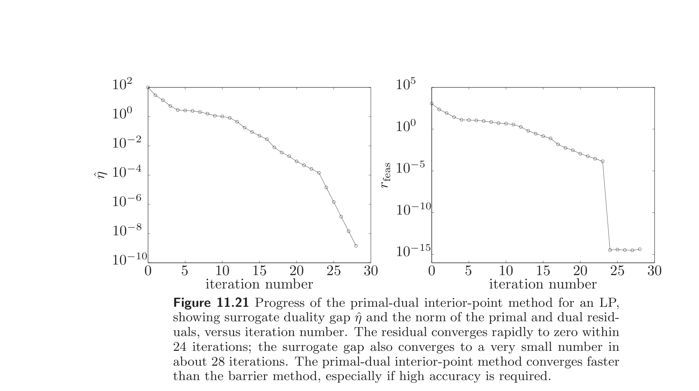
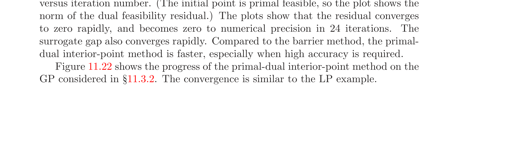
A family of LPs
一族 LP
Here we examine the performance of the primal-dual method as a function of the problem dimensions, for the same family of standard form LPs considered in §11.3.2. We use the primal-dual interior-point method to solve the same 2000 instances, which consist of 100 instances for each value of $m$. The primal-dual algorithm is started at $x^{(0)} = \mathbf{1}$, $\lambda^{(0)} = \mathbf{1}$, $\nu^{(0)} = 0$, and terminated using tolerance $\epsilon = 10^{-8}$. Figure 11.23 shows the average, and standard deviation, of the number of iterations required versus $m$. The number of iterations ranges from 15 to 35, and grows approximately as the logarithm of $m$. Comparing with the results for the barrier method shown in figure 11.8, we see that the number of iterations in the primal-dual method is only slightly higher, despite the fact that we start at infeasible starting points, and solve the problem to a much higher accuracy.
这里考察原始-对偶方法性能关于问题维度的函数，用 §11.3.2 的同一族标准形式 LP。用原始-对偶内点法求解同样的 2000 个实例（每个 $m$ 值 100 个）。原始-对偶算法从 $x^{(0)} = \mathbf{1}$、$\lambda^{(0)} = \mathbf{1}$、$\nu^{(0)} = 0$ 出发，容差 $\epsilon = 10^{-8}$ 终止。图 11.23 给出所需迭代数的均值和标准差对 $m$。迭代数从 15 到 35，近似按 $m$ 的对数增长。与图 11.8 的障碍法结果比较，原始-对偶法的迭代数仅略高，尽管从不可行起点出发且求解精度高得多。
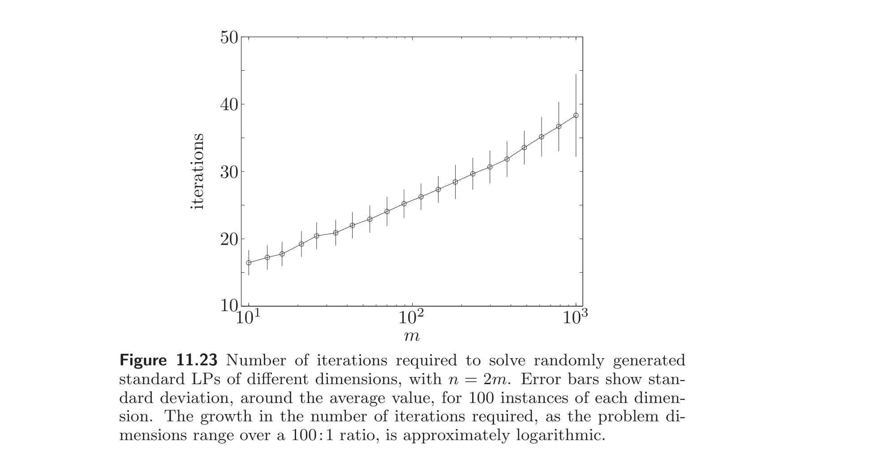
11.8 Implementation
11.8 实现
The main effort in the barrier method is computing the Newton step for the centering problem, which consists of solving sets of linear equations of the form
$$ \begin{bmatrix} H & A^T \\ A & 0 \end{bmatrix} \begin{bmatrix} \Delta x_{\mathrm{nt}} \\ \nu_{\mathrm{nt}} \end{bmatrix} = -\begin{bmatrix} g \\ 0 \end{bmatrix}, \tag{11.60} $$
where
$$ H = t \nabla^2 f_0(x) + \sum_{i=1}^m \frac{1}{f_i(x)^2} \nabla f_i(x) \nabla f_i(x)^T + \sum_{i=1}^m \frac{1}{-f_i(x)} \nabla^2 f_i(x) $$
$$ g = t \nabla f_0(x) + \sum_{i=1}^m \frac{1}{-f_i(x)} \nabla f_i(x). $$
The Newton equations for the primal-dual method have exactly the same structure, so our observations in this section apply to the primal-dual method as well.
The coefficient matrix of (11.60) has KKT structure, so all of the discussion in §9.7 and §10.4 applies here. In particular, the equations can be solved by elimination, and structure such as sparsity or diagonal plus low rank can be exploited. Let us give some generic examples in which the special structure of the KKT equations can be exploited to compute the Newton step more efficiently.
障碍法的主要计算量在于求中心化问题的牛顿步，即求解形如
$$ \begin{bmatrix} H & A^T \\ A & 0 \end{bmatrix} \begin{bmatrix} \Delta x_{\mathrm{nt}} \\ \nu_{\mathrm{nt}} \end{bmatrix} = -\begin{bmatrix} g \\ 0 \end{bmatrix}, \tag{11.60} $$
的线性方程组，其中
$$ H = t \nabla^2 f_0(x) + \sum_{i=1}^m \frac{1}{f_i(x)^2} \nabla f_i(x) \nabla f_i(x)^T + \sum_{i=1}^m \frac{1}{-f_i(x)} \nabla^2 f_i(x) $$
$$ g = t \nabla f_0(x) + \sum_{i=1}^m \frac{1}{-f_i(x)} \nabla f_i(x). $$
原始-对偶法的牛顿方程结构完全相同，故本节的观察也适用于原始-对偶法。
(11.60) 的系数矩阵具 KKT 结构，故 §9.7 和 §10.4 的全部讨论适用。特别地，方程可通过消元求解，稀疏性或对角加低秩等结构可被利用。下面给若干利用 KKT 方程特殊结构更高效计算牛顿步的通用例子。
Sparse problems
稀疏问题
If the original problem is sparse, which means that the objective and every constraint function each depend on only a modest number of variables, then the gradients and Hessian matrices of the objective and constraint functions are all sparse, as is the coefficient matrix $A$. Provided $m$ is not too big, the matrix $H$ is then likely to be sparse, so a sparse matrix method can be used to compute the Newton step. The method will likely work well if there are a few relatively dense rows and columns in the KKT matrix, which would occur, for example, if there were a few equality constraints involving a large number of variables.
若原问题稀疏（即目标和每个约束函数各只依赖适量变量），则目标和约束函数的梯度与 Hessian 矩阵以及系数矩阵 $A$ 均稀疏。只要 $m$ 不太大，$H$ 很可能稀疏，故可用稀疏矩阵方法计算牛顿步。若 KKT 矩阵中有少量相对稠密的行列（例如有少数涉及大量变量的等式约束），方法仍可能工作良好。
Separable objective and a few linear inequality constraints
可分目标与少量线性不等式约束
Suppose the objective function is separable, and there are only a relatively small number of linear equality and inequality constraints. Then $\nabla^2 f_0(x)$ is diagonal, and the terms $\nabla^2 f_i(x)$ vanish, so the matrix $H$ is diagonal plus low rank. Since $H$ is easily inverted, we can solve the KKT equations efficiently. The same method can be applied whenever $\nabla^2 f_0(x)$ is easily inverted, e.g., banded, sparse, or block diagonal.
设目标函数可分，且只有相对少量的线性等式和不等式约束。则 $\nabla^2 f_0(x)$ 为对角，$\nabla^2 f_i(x)$ 项消失，故 $H$ 为对角加低秩。由于 $H$ 易求逆，可高效求解 KKT 方程。只要 $\nabla^2 f_0(x)$ 易求逆（如带状、稀疏或块对角），同一方法即可应用。
11.8.1 Standard form linear programming
11.8.1 标准形式线性规划
We first discuss the implementation of the barrier method for the standard form LP
$$ \begin{array}{ll} \text{minimize} & c^T x \\ \text{subject to} & Ax = b, \\ & x \succeq 0, \end{array} $$
with $A \in \mathbb{R}^{m \times n}$. The Newton equations for the centering problem
$$ \begin{array}{ll} \text{minimize} & t c^T x - \sum_{i=1}^n \log x_i \\ \text{subject to} & Ax = b \end{array} $$
are given by
$$ \begin{bmatrix} \mathbf{diag}(x)^{-2} & A^T \\ A & 0 \end{bmatrix} \begin{bmatrix} \Delta x_{\mathrm{nt}} \\ \nu_{\mathrm{nt}} \end{bmatrix} = \begin{bmatrix} -tc + \mathbf{diag}(x)^{-1} \mathbf{1} \\ 0 \end{bmatrix}. $$
These equations are usually solved by block elimination of $\Delta x_{\mathrm{nt}}$. From the first equation,
$$ \Delta x_{\mathrm{nt}} = \mathbf{diag}(x)^2 (-tc + \mathbf{diag}(x)^{-1} \mathbf{1} - A^T \nu_{\mathrm{nt}}) = -t\,\mathbf{diag}(x)^2 c + x - \mathbf{diag}(x)^2 A^T \nu_{\mathrm{nt}}. $$
Substituting in the second equation yields
$$ A\,\mathbf{diag}(x)^2 A^T \nu_{\mathrm{nt}} = -t A\,\mathbf{diag}(x)^2 c + b. $$
The coefficient matrix is positive definite since by assumption $\mathbf{rank}\, A = m$. Moreover if $A$ is sparse, then usually $A\,\mathbf{diag}(x)^2 A^T$ is sparse, so a sparse Cholesky factorization can be used.
先讨论标准形式 LP
$$ \begin{array}{ll} \text{minimize} & c^T x \\ \text{subject to} & Ax = b, \\ & x \succeq 0, \end{array} $$
（$A \in \mathbb{R}^{m \times n}$）的障碍法实现。中心化问题
$$ \begin{array}{ll} \text{minimize} & t c^T x - \sum_{i=1}^n \log x_i \\ \text{subject to} & Ax = b \end{array} $$
的牛顿方程为
$$ \begin{bmatrix} \mathbf{diag}(x)^{-2} & A^T \\ A & 0 \end{bmatrix} \begin{bmatrix} \Delta x_{\mathrm{nt}} \\ \nu_{\mathrm{nt}} \end{bmatrix} = \begin{bmatrix} -tc + \mathbf{diag}(x)^{-1} \mathbf{1} \\ 0 \end{bmatrix}. $$
通常通过对 $\Delta x_{\mathrm{nt}}$ 的块消元求解。由第一方程，
$$ \Delta x_{\mathrm{nt}} = \mathbf{diag}(x)^2 (-tc + \mathbf{diag}(x)^{-1} \mathbf{1} - A^T \nu_{\mathrm{nt}}) = -t\,\mathbf{diag}(x)^2 c + x - \mathbf{diag}(x)^2 A^T \nu_{\mathrm{nt}}. $$
代入第二方程得
$$ A\,\mathbf{diag}(x)^2 A^T \nu_{\mathrm{nt}} = -t A\,\mathbf{diag}(x)^2 c + b. $$
系数矩阵正定，因假设 $\mathbf{rank}\, A = m$。且若 $A$ 稀疏，则通常 $A\,\mathbf{diag}(x)^2 A^T$ 稀疏，可用稀疏 Cholesky 分解。
11.8.2 ℓ1-norm approximation
11.8.2 ℓ1 范数逼近
Consider the $\ell_1$-norm approximation problem
$$ \text{minimize} \;\; \|Ax - b\|_1 $$
with $A \in \mathbb{R}^{m \times n}$. We will discuss the implementation assuming $m$ and $n$ are large, and $A$ is structured, e.g., sparse, and compare it with the cost of the corresponding least-squares problem
$$ \text{minimize} \;\; \|Ax - b\|_2^2. $$
We start by expressing the $\ell_1$-norm approximation problem as an LP by introducing auxiliary variables $y \in \mathbb{R}^m$:
$$ \begin{array}{ll} \text{minimize} & \mathbf{1}^T y \\ \text{subject to} & \begin{bmatrix} A & -I \\ -A & -I \end{bmatrix} \begin{bmatrix} x \\ y \end{bmatrix} \preceq \begin{bmatrix} b \\ -b \end{bmatrix}. \end{array} $$
The Newton equation for the centering problem is
$$ \begin{bmatrix} A^T & -A^T \\ -I & -I \end{bmatrix} \begin{bmatrix} D_1 & 0 \\ 0 & D_2 \end{bmatrix} \begin{bmatrix} A & -I \\ -A & -I \end{bmatrix} \begin{bmatrix} \Delta x_{\mathrm{nt}} \\ \Delta y_{\mathrm{nt}} \end{bmatrix} = -\begin{bmatrix} A^T g_1 \\ g_2 \end{bmatrix} $$
where
$$ D_1 = \mathbf{diag}(b - Ax + y)^{-2}, \quad D_2 = \mathbf{diag}(-b + Ax + y)^{-2} $$
and
$$ g_1 = \mathbf{diag}(b - Ax + y)^{-1} \mathbf{1} - \mathbf{diag}(-b + Ax + y)^{-1} \mathbf{1} $$
$$ g_2 = t\mathbf{1} - \mathbf{diag}(b - Ax + y)^{-1} \mathbf{1} - \mathbf{diag}(-b + Ax + y)^{-1} \mathbf{1}. $$
If we multiply out the lefthand side, this can be simplified as
$$ \begin{bmatrix} A^T (D_1 + D_2) A & -A^T (D_1 - D_2) \\ -(D_1 - D_2) A & D_1 + D_2 \end{bmatrix} \begin{bmatrix} \Delta x_{\mathrm{nt}} \\ \Delta y_{\mathrm{nt}} \end{bmatrix} = -\begin{bmatrix} A^T g_1 \\ g_2 \end{bmatrix}. $$
考虑 $\ell_1$ 范数逼近问题
$$ \text{minimize} \;\; \|Ax - b\|_1 $$
（$A \in \mathbb{R}^{m \times n}$）。假设 $m$ 和 $n$ 很大、$A$ 有结构（如稀疏），讨论实现并与对应的最小二乘问题
$$ \text{minimize} \;\; \|Ax - b\|_2^2 $$
的代价比较。先引入辅助变量 $y \in \mathbb{R}^m$ 将 $\ell_1$ 范数逼近问题表为 LP：
$$ \begin{array}{ll} \text{minimize} & \mathbf{1}^T y \\ \text{subject to} & \begin{bmatrix} A & -I \\ -A & -I \end{bmatrix} \begin{bmatrix} x \\ y \end{bmatrix} \preceq \begin{bmatrix} b \\ -b \end{bmatrix}. \end{array} $$
中心化问题的牛顿方程为
$$ \begin{bmatrix} A^T & -A^T \\ -I & -I \end{bmatrix} \begin{bmatrix} D_1 & 0 \\ 0 & D_2 \end{bmatrix} \begin{bmatrix} A & -I \\ -A & -I \end{bmatrix} \begin{bmatrix} \Delta x_{\mathrm{nt}} \\ \Delta y_{\mathrm{nt}} \end{bmatrix} = -\begin{bmatrix} A^T g_1 \\ g_2 \end{bmatrix} $$
其中
$$ D_1 = \mathbf{diag}(b - Ax + y)^{-2}, \quad D_2 = \mathbf{diag}(-b + Ax + y)^{-2} $$
且
$$ g_1 = \mathbf{diag}(b - Ax + y)^{-1} \mathbf{1} - \mathbf{diag}(-b + Ax + y)^{-1} \mathbf{1} $$
$$ g_2 = t\mathbf{1} - \mathbf{diag}(b - Ax + y)^{-1} \mathbf{1} - \mathbf{diag}(-b + Ax + y)^{-1} \mathbf{1}. $$
将左端乘开，可简化为
$$ \begin{bmatrix} A^T (D_1 + D_2) A & -A^T (D_1 - D_2) \\ -(D_1 - D_2) A & D_1 + D_2 \end{bmatrix} \begin{bmatrix} \Delta x_{\mathrm{nt}} \\ \Delta y_{\mathrm{nt}} \end{bmatrix} = -\begin{bmatrix} A^T g_1 \\ g_2 \end{bmatrix}. $$
Applying block elimination to $\Delta y_{\mathrm{nt}}$, we can reduce this to
$$ A^T D A \Delta x_{\mathrm{nt}} = -A^T g \tag{11.61} $$
where
$$ D = 4 D_1 D_2 (D_1 + D_2)^{-1} = 2(\mathbf{diag}(y)^2 + \mathbf{diag}(b - Ax)^2)^{-1} $$
and
$$ g = g_1 + (D_1 - D_2)(D_1 + D_2)^{-1} g_2. $$
After solving for $\Delta x_{\mathrm{nt}}$, we obtain $\Delta y_{\mathrm{nt}}$ from
$$ \Delta y_{\mathrm{nt}} = (D_1 + D_2)^{-1}(-g_2 + (D_1 - D_2) A \Delta x_{\mathrm{nt}}). $$
It is interesting to note that (11.61) are the normal equations of a weighted least-squares problem
$$ \text{minimize} \;\; \|D^{1/2}(A \Delta x + D^{-1} g)\|_2. $$
In other words, the cost of solving the $\ell_1$-norm approximation problem is the cost of solving a relatively small number of weighted least-squares problems with the same matrix $A$, and weights that change at each iteration. If $A$ has structure that allows us to solve the least-squares problem fast (for example, by exploiting sparsity), then we can solve (11.61) fast.
对 $\Delta y_{\mathrm{nt}}$ 作块消元，可化为
$$ A^T D A \Delta x_{\mathrm{nt}} = -A^T g \tag{11.61} $$
其中
$$ D = 4 D_1 D_2 (D_1 + D_2)^{-1} = 2(\mathbf{diag}(y)^2 + \mathbf{diag}(b - Ax)^2)^{-1} $$
且
$$ g = g_1 + (D_1 - D_2)(D_1 + D_2)^{-1} g_2. $$
解出 $\Delta x_{\mathrm{nt}}$ 后，由
$$ \Delta y_{\mathrm{nt}} = (D_1 + D_2)^{-1}(-g_2 + (D_1 - D_2) A \Delta x_{\mathrm{nt}}) $$
得 $\Delta y_{\mathrm{nt}}$。有趣的是，(11.61) 是加权最小二乘问题
$$ \text{minimize} \;\; \|D^{1/2}(A \Delta x + D^{-1} g)\|_2 $$
的法方程。换言之，求解 $\ell_1$ 范数逼近问题的代价是求解相对较少次数的、以同一矩阵 $A$ 为系数、每次迭代权重变化的加权最小二乘问题的代价。若 $A$ 的结构允许快速求解最小二乘问题（如利用稀疏性），则可快速求解 (11.61)。
11.8.3 Semidefinite programming in inequality form
11.8.3 不等式形式半正定规划
We consider the SDP
$$ \begin{array}{ll} \text{minimize} & c^T x \\ \text{subject to} & \sum_{i=1}^n x_i F_i + G \preceq 0, \end{array} $$
with variable $x \in \mathbb{R}^n$, and parameters $F_1, \ldots, F_n, G \in \mathcal{S}^p$. The associated centering problem, using the log-determinant barrier function, is
$$ \text{minimize} \;\; t c^T x - \log \det\left(-\sum_{i=1}^n x_i F_i - G\right). $$
The Newton step $\Delta x_{\mathrm{nt}}$ is found from $H \Delta x_{\mathrm{nt}} = -g$, where the Hessian and gradient are given by
$$ H_{ij} = \mathbf{tr}(S^{-1} F_i S^{-1} F_j), \quad i, j = 1, \ldots, n $$
$$ g_i = t c_i + \mathbf{tr}(S^{-1} F_i), \quad i = 1, \ldots, n, $$
where $S = -\sum_{i=1}^n x_i F_i - G$. One standard approach is to form $H$ (and $g$), and then solve the Newton equation via Cholesky factorization.
We first consider the unstructured case, i.e., we assume all matrices are dense. We will also just keep track of the order in the flop count, with respect to the problem dimensions $n$ and $p$. We first form $S$, which costs order $np^2$ flops. We then compute the matrices $S^{-1} F_i$, for each $i$, via Cholesky factorization of $S$, and then back substitution with the columns of $F_i$ (or forming $S^{-1}$ and multiplying by $F_i$). This cost is order $p^3$ for each $i$, so the total cost is order $np^3$. Finally, we form $H_{ij}$ as the inner product of the matrices $S^{-1} F_i$ and $S^{-1} F_j$, which costs order $p^2$ flops. Since we do this for $n(n + 1)/2$ such pairs, the cost is order $n^2 p^2$. Solving for the Newton direction costs order $n^3$. The dominating order is thus $\max\{np^3, n^2 p^2, n^3\}$.
It is not possible, in general, to exploit sparsity in the matrices $F_i$ and $G$, since $H$ is often dense, even when $F_i$ and $G$ are sparse. One exception is when $F_i$ and $G$ have a common block diagonal structure, in which case all the operations described above can be carried out block by block.
It is often possible to exploit (common) sparsity in $F_i$ and $G$ to form the (dense) Hessian $H$ more efficiently. If we can find an ordering that results in $S$ having a reasonably sparse Cholesky factor, then we can compute the matrices $S^{-1} F_i$ efficiently, and form $H_{ij}$ far more efficiently.
One interesting example that arises frequently is an SDP with matrix inequality $\mathbf{diag}(x) \preceq B$. This corresponds to $F_i = E_{ii}$, where $E_{ii}$ is the matrix with $i, i$ entry one and all others zero. In this case, the matrix $H$ can be found very efficiently:
$$ H_{ij} = (S^{-1})_{ij}^2, $$
where $S = B - \mathbf{diag}(x)$. The cost of forming $H$ is thus the cost of forming $S^{-1}$, which is at most (i.e., when no other structure is exploited) order $n^3$.
考虑 SDP
$$ \begin{array}{ll} \text{minimize} & c^T x \\ \text{subject to} & \sum_{i=1}^n x_i F_i + G \preceq 0, \end{array} $$
变量 $x \in \mathbb{R}^n$，参数 $F_1, \ldots, F_n, G \in \mathcal{S}^p$。用对数行列式障碍函数，关联的中心化问题为
$$ \text{minimize} \;\; t c^T x - \log \det\left(-\sum_{i=1}^n x_i F_i - G\right). $$
牛顿步 $\Delta x_{\mathrm{nt}}$ 由 $H \Delta x_{\mathrm{nt}} = -g$ 求得，Hessian 和梯度为
$$ H_{ij} = \mathbf{tr}(S^{-1} F_i S^{-1} F_j), \quad i, j = 1, \ldots, n $$
$$ g_i = t c_i + \mathbf{tr}(S^{-1} F_i), \quad i = 1, \ldots, n, $$
其中 $S = -\sum_{i=1}^n x_i F_i - G$。一种标准方法是形成 $H$（和 $g$），再用 Cholesky 分解求解牛顿方程。
先考虑无结构情形，即假设所有矩阵稠密。只记录关于问题维度 $n$ 和 $p$ 的 flop 计数的阶。先形成 $S$，代价 $np^2$ 量级。再对每个 $i$ 通过 $S$ 的 Cholesky 分解及对 $F_i$ 各列回代（或形成 $S^{-1}$ 乘 $F_i$）计算 $S^{-1} F_i$。每个 $i$ 代价 $p^3$ 量级，总代价 $np^3$ 量级。最后，$H_{ij}$ 作为 $S^{-1} F_i$ 与 $S^{-1} F_j$ 的内积形成，代价 $p^2$ 量级。对 $n(n+1)/2$ 个此类对进行，代价 $n^2 p^2$ 量级。求牛顿方向代价 $n^3$ 量级。故主导阶为 $\max\{np^3, n^2 p^2, n^3\}$。
一般而言无法利用 $F_i$ 和 $G$ 的稀疏性，因 $H$ 即便 $F_i$ 和 $G$ 稀疏时也常稠密。一个例外是 $F_i$ 和 $G$ 有公共块对角结构时，上述运算可逐块进行。
常可利用 $F_i$ 和 $G$ 的（公共）稀疏性更高效地形成（稠密）Hessian $H$。若能找到使 $S$ 的 Cholesky 因子相当稀疏的排序，则可高效计算 $S^{-1} F_i$，从而远更高效地形成 $H_{ij}$。
一个常出现的有趣例子是矩阵不等式为 $\mathbf{diag}(x) \preceq B$ 的 SDP。这对应 $F_i = E_{ii}$（$E_{ii}$ 为 $i,i$ 位置为 1、其余为 0 的矩阵）。此时 $H$ 可非常高效地求得：
$$ H_{ij} = (S^{-1})_{ij}^2, $$
其中 $S = B - \mathbf{diag}(x)$。形成 $H$ 的代价即形成 $S^{-1}$ 的代价，至多（即不利用其他结构时）$n^3$ 量级。
11.8.4 Network rate optimization
11.8.4 网络速率优化
We consider a variation on the optimal network flow problem described in §10.4.3 (page 550), which is sometimes called the network rate optimization problem. The network is described as a directed graph with $L$ arcs or links. Goods, or packets of information, travel on the network, passing through the links. The network supports $n$ flows, with (nonnegative) rates $x_1, \ldots, x_n$, which are the optimization variables. Each flow moves along a fixed, or pre-determined, path (or route) in the network, from a source node to a destination node. Each link can support multiple flows passing through it. The total traffic on a link is the sum of the flow rates of the flows that travel over the link. Each link has a positive capacity, which is the maximum total traffic it can handle.
We can describe these link capacity limits using the flow-link incidence matrix $A \in \mathbb{R}^{L \times n}$, defined as
$$ A_{ij} = \begin{cases} 1 & \text{flow } j \text{ passes through link } i \\ 0 & \text{otherwise.} \end{cases} $$
The total traffic on link $i$ is then given by $(Ax)_i$, so the link capacity constraints can be expressed as $Ax \preceq c$, where $c_i$ is the capacity of link $i$. Usually each path passes through only a small fraction of the total number of links, so the matrix $A$ is sparse.
In the network rate problem the paths are fixed (and encoded in the matrix $A$, which is a problem parameter); the variables are the flow rates $x_i$. The objective is to choose the flow rates to maximize a separable utility function $U$, given by
$$ U(x) = U_1(x_1) + \cdots + U_n(x_n). $$
We assume that each $U_i$ (and hence, $U$) is concave and nondecreasing. We can think of $U_i(x_i)$ as the income derived from supporting the $i$th flow at rate $x_i$; $U(x)$ is then the total income associated with the flows. The network rate optimization problem is then
$$ \begin{array}{ll} \text{maximize} & U(x) \\ \text{subject to} & Ax \preceq c, \\ & x \succeq 0, \end{array} \tag{11.62} $$
which is a convex optimization problem.
Let us apply the barrier method to solve this problem. At each step we must minimize a function of the form
$$ -t U(x) - \sum_{i=1}^L \log(c - Ax)_i - \sum_{j=1}^n \log x_j, $$
using Newton's method. The Newton step $\Delta x_{\mathrm{nt}}$ is found by solving the linear equations
$$ (D_0 + A^T D_1 A + D_2) \Delta x_{\mathrm{nt}} = -g, $$
where
$$ D_0 = -t\,\mathbf{diag}(U_1''(x), \ldots, U_n''(x)) $$
$$ D_1 = \mathbf{diag}(1/(c - Ax)_1^2, \ldots, 1/(c - Ax)_L^2) $$
$$ D_2 = \mathbf{diag}(1/x_1^2, \ldots, 1/x_n^2) $$
are diagonal matrices, and $g \in \mathbb{R}^n$. We can describe the sparsity structure of this $n \times n$ coefficient matrix precisely:
$$ (D_0 + A^T D_1 A + D_2)_{ij} \ne 0 $$
if and only if flow $i$ and flow $j$ share a link. If the paths are relatively short, and each link has relatively few paths passing through it, then this matrix is sparse, so a sparse Cholesky factorization can be used. We can also solve the Newton system efficiently when some, but not too many, of the rows and columns are relatively dense. This occurs when a few of the flows intersect with a large number of the other flows, which might occur if a few flows are relatively long.
We can also use the matrix inversion lemma to compute the Newton step by solving a system with $L \times L$ coefficient matrix, with form
$$ (D_1^{-1} + A(D_0 + D_2)^{-1} A^T) y = -A(D_0 + D_2)^{-1} g, $$
and then computing
$$ \Delta x_{\mathrm{nt}} = -(D_0 + D_2)^{-1}(g + A^T y). $$
Here too we can precisely describe the sparsity pattern:
$$ (D_1^{-1} + A(D_0 + D_2)^{-1} A^T)_{ij} \ne 0 $$
if and only if there is a path that passes through link $i$ and link $j$. If most paths are short, this matrix is sparse. This matrix will be sparse, with a few dense rows and columns, if there are a few bottlenecks, i.e., a few links over which many flows travel.
考虑 §10.4.3（第 550 页）最优网络流问题的一个变体，有时称为网络速率优化问题。网络描述为一个有 $L$ 条弧（链路）的有向图。货物或信息包在网络中行进，穿过链路。网络支持 $n$ 个流，速率（非负）为 $x_1, \ldots, x_n$，即优化变量。每个流沿网络中一条固定（预定）的路径（路由）从源节点到目的节点。每条链路可支持多个流穿过。链路上的总流量是穿过该链路的所有流速率之和。每条链路有正容量，即它能处理的最大总流量。
可用流-链路关联矩阵 $A \in \mathbb{R}^{L \times n}$ 描述链路容量限制，定义为
$$ A_{ij} = \begin{cases} 1 & \text{流 } j \text{ 穿过链路 } i \\ 0 & \text{否则.} \end{cases} $$
链路 $i$ 的总流量为 $(Ax)_i$，故链路容量约束可表为 $Ax \preceq c$（$c_i$ 为链路 $i$ 的容量）。通常每条路径只穿过总链路数的一小部分，故 $A$ 稀疏。
网络速率问题中路径固定（编码在矩阵 $A$ 中，为问题参数）；变量为流速率 $x_i$。目标是选择流速率以极大化可分效用函数 $U$，
$$ U(x) = U_1(x_1) + \cdots + U_n(x_n). $$
假设每个 $U_i$（从而 $U$）凹且非减。可将 $U_i(x_i)$ 理解为以速率 $x_i$ 支持第 $i$ 个流所得收入；$U(x)$ 为与各流关联的总收入。网络速率优化问题为
$$ \begin{array}{ll} \text{maximize} & U(x) \\ \text{subject to} & Ax \preceq c, \\ & x \succeq 0, \end{array} \tag{11.62} $$
这是一个凸优化问题。
用障碍法求解此问题。每步须极小化形如
$$ -t U(x) - \sum_{i=1}^L \log(c - Ax)_i - \sum_{j=1}^n \log x_j $$
的函数，用牛顿法。牛顿步 $\Delta x_{\mathrm{nt}}$ 由线性方程
$$ (D_0 + A^T D_1 A + D_2) \Delta x_{\mathrm{nt}} = -g $$
求得，其中
$$ D_0 = -t\,\mathbf{diag}(U_1''(x), \ldots, U_n''(x)) $$
$$ D_1 = \mathbf{diag}(1/(c - Ax)_1^2, \ldots, 1/(c - Ax)_L^2) $$
$$ D_2 = \mathbf{diag}(1/x_1^2, \ldots, 1/x_n^2) $$
为对角矩阵，$g \in \mathbb{R}^n$。可精确描述此 $n \times n$ 系数矩阵的稀疏结构：
$$ (D_0 + A^T D_1 A + D_2)_{ij} \ne 0 $$
当且仅当流 $i$ 与流 $j$ 共享某链路。若路径相对短、每条链路穿过的路径相对少，则此矩阵稀疏，可用稀疏 Cholesky 分解。当少数行列相对稠密时（例如少数流与大量其他流相交，可能因少数流相对长），仍可高效求解牛顿系统。
也可用矩阵求逆引理通过求解 $L \times L$ 系数矩阵的系统计算牛顿步，形式为
$$ (D_1^{-1} + A(D_0 + D_2)^{-1} A^T) y = -A(D_0 + D_2)^{-1} g, $$
再计算
$$ \Delta x_{\mathrm{nt}} = -(D_0 + D_2)^{-1}(g + A^T y). $$
此处也可精确描述稀疏模式：
$$ (D_1^{-1} + A(D_0 + D_2)^{-1} A^T)_{ij} \ne 0 $$
当且仅当存在一条路径同时穿过链路 $i$ 和链路 $j$。若多数路径短，此矩阵稀疏。若存在少数瓶颈（即少数链路上有许多流行进），此矩阵将稀疏但有少数稠密行列。
Bibliography
参考文献
The early history of the barrier method is described in detail by Fiacco and McCormick [FM90, §1.2]. The method was a popular algorithm for convex optimization in the 1960s, along with closely related techniques such as the method of centers (Liêu and Huard [LH66]; see also exercise 11.11), and penalty (or exterior-point) methods [FM90, §4]. Interest declined in the 1970s amid concerns about the ill-conditioning of the Newton equations of the centering problem (11.6) for high values of $t$.
The barrier method regained popularity in the 1980s, after Gill, Murray, Saunders, Tomlin, and Wright [GMS+86] pointed out the close connections with Karmarkar's polynomial-time projective algorithm for linear programming [Kar84]. The focus of research throughout the 1980s remained on linear (and to a lesser extent, quadratic) programming, resulting in different variations of the basic interior-point methods, and improved worst-case complexity results (see Gonzaga [Gon92]). Primal-dual methods emerged as the algorithms of choice for practical implementations (see Mehrotra [Meh92], Lustig, Marsten, and Shanno [LMS94], Wright [Wri97]).
In their 1994 book, Nesterov and Nemirovski extended the complexity theory of linear programming interior-point methods to nonlinear convex optimization problems, using the convergence theory of Newton's method for self-concordant functions. They also developed interior-point methods for problems with generalized inequalities, and discussed ways of reformulating problems to satisfy the self-concordance assumption. The geometric programming reformulation on page 587, for example, is from [NN94, §6.3.1].
As mentioned on page 585, the complexity analysis shows that, contrary to what one might expect, the centering problems in the barrier method do not become more difficult as $t$ increases, at least not in exact arithmetic. Practical experience, supported by theoretical results (Forsgren, Gill, and Wright [FGW02, §4.3.2], Nocedal and Wright [NW99, page 525]), also indicates that the effects of ill-conditioning on the computed solution of the Newton system are more benign than thought earlier.
Recent research on interior-point methods has concentrated on extending the primal-dual methods for linear programming, which converge faster and reach higher accuracies than (primal) barrier methods, to nonlinear convex problems. One popular approach, along the lines of the simple primal-dual method of §11.7, is based on linearizing modified KKT equations for a convex optimization problem in standard form, i.e., problem (11.1). More sophisticated algorithms of this type differ from algorithm 11.2 in the strategy used to select $t$ (which is crucial to achieve superlinear asymptotic convergence), and the line search. We refer to Wright [Wri97, chapter 8], Ralph and Wright [RW97], den Hertog [dH93], Terlaky [Ter96], and the survey by Forsgren, Gill, and Wright [FGW02, §5] for details and references.
Other authors adopt the cone programming framework as starting point for extending primal-dual interior-point methods for linear programming to convex optimization (see for example, Nesterov and Todd [NT98]). This approach has resulted in efficient and accurate primal-dual methods for semidefinite and second-order programming (see the surveys by Todd [Tod01] and Alizadeh and Goldfarb [AG03]).
As for linear programming, primal-dual methods for semidefinite programming are usually described as variations of Newton's method applied to modified KKT equations. Unlike in linear programming, however, the linearization can be carried out in many different ways, which lead to different search directions and algorithms; see Helmberg, Rendl, Vanderbei, and Wolkowicz [HRVW96], Kojima, Shindo, and Harah [KSH97], Monteiro [Mon97], Nesterov and Todd [NT98], Zhang [Zha98], Alizadeh, Haeberly, and Overton [AHO98], and Todd, Toh, and Tütüncü [TTT98].
Great progress has also been made in the area of initialization and infeasibility detection. Homogeneous self-dual formulations provide an elegant and efficient alternative to the classical two-phase approach of §11.4; see Ye, Todd, and Mizuno [YTM94], Xu, Hung, and Ye [XHY96], Andersen and Ye [AY98] and Luo, Sturm, and Zhang [LSZ00] for details.
The primal-dual interior-point methods for semidefinite and second-order cone programming have been implemented in a number of software packages, including SeDuMi [Stu99], SDPT3 [TTT02], SDPA [FKN98], CSDP [Bor02], and DSDP [BY02]. A user-friendly interface to several of these codes is provided by YALMIP [Löf04].
The following books document the recent developments in this rapidly advancing field in greater detail: Vanderbei [Van96], Wright [Wri97], Roos, Terlaky, and Vial [RTV97], Ye [Ye97], Wolkowicz, Saigal, and Vandenberghe [WSV00], Ben-Tal and Nemirovski [BTN01], Renegar [Ren01], and Peng, Roos, and Terlaky [PRT02].
障碍法的早期历史由 Fiacco 和 McCormick [FM90, §1.2] 详述。该方法在 1960 年代是凸优化的流行算法，连同与之密切相关的技术如中心法（Liêu 和 Huard [LH66]；另见习题 11.11）以及罚函数（或外点）法 [FM90, §4]。1970 年代因对中心化问题 (11.6) 在 $t$ 大值时牛顿方程病态的担忧，兴趣下降。
障碍法在 1980 年代重新流行，起因是 Gill、Murray、Saunders、Tomlin 和 Wright [GMS+86] 指出了与 Karmarkar [Kar84] 的线性规划多项式时间投影算法的密切联系。1980 年代的研究仍集中于线性（以及较小程度的二次）规划，产生了基本内点法的不同变体和改进的最坏情形复杂度结果（见 Gonzaga [Gon92]）。原始-对偶方法作为实际实现的首选算法出现（见 Mehrotra [Meh92]、Lustig、Marsten 和 Shanno [LMS94]、Wright [Wri97]）。
在 1994 年的著作中，Nesterov 和 Nemirovski 利用自协调函数的牛顿法收敛理论，将线性规划内点法的复杂度理论推广到非线性凸优化问题。他们还发展了含广义不等式问题的内点法，并讨论了将问题改写以满足自协调性假设的方法。例如第 587 页的几何规划改写来自 [NN94, §6.3.1]。
如第 585 页所述，复杂度分析表明，与预期相反，障碍法的中心化问题不随 $t$ 增大而变难（至少在精确算术下）。实践经验（由理论结果支持，Forsgren、Gill 和 Wright [FGW02, §4.3.2]、Nocedal 和 Wright [NW99, 第 525 页]）也表明，病态对牛顿系统计算解的影响比早先认为的更温和。
内点法的近期研究集中于将线性规划的原始-对偶方法（比（原始）障碍法收敛更快、达到更高精度）推广到非线性凸问题。一种流行方法沿 §11.7 简单原始-对偶法的路线，基于对标准形式凸优化问题（即问题 (11.1)）的修正 KKT 方程线性化。此类更复杂的算法与算法 11.2 的区别在于选取 $t$ 的策略（对实现超线性渐近收敛至关重要）和线搜索。详见 Wright [Wri97, 第 8 章]、Ralph 和 Wright [RW97]、den Hertog [dH93]、Terlaky [Ter96] 以及 Forsgren、Gill 和 Wright [FGW02, §5] 的综述。
其他作者以锥规划框架为出发点，将线性规划的原始-对偶内点法推广到凸优化（例如 Nesterov 和 Todd [NT98]）。此方法产生了半定和二阶规划的高效精确原始-对偶法（见 Todd [Tod01] 和 Alizadeh、Goldfarb [AG03] 的综述）。
与线性规划一样，半定规划的原始-对偶方法通常描述为对修正 KKT 方程应用牛顿法的变体。然而与线性规划不同，线性化可用多种方式进行，导致不同的搜索方向和算法；见 Helmberg、Rendl、Vanderbei 和 Wolkowicz [HRVW96]、Kojima、Shindo 和 Harah [KSH97]、Monteiro [Mon97]、Nesterov 和 Todd [NT98]、Zhang [Zha98]、Alizadeh、Haeberly 和 Overton [AHO98] 以及 Todd、Toh 和 Tütüncü [TTT98]。
初始化和不可行性检测方面也取得很大进展。齐次自对偶公式为 §11.4 的经典两阶段方法提供了优雅高效的替代；详见 Ye、Todd 和 Mizuno [YTM94]、Xu、Hung 和 Ye [XHY96]、Andersen 和 Ye [AY98] 以及 Luo、Sturm 和 Zhang [LSZ00]。
半定和二阶锥规划的原始-对偶内点法已在若干软件包中实现，包括 SeDuMi [Stu99]、SDPT3 [TTT02]、SDPA [FKN98]、CSDP [Bor02] 和 DSDP [BY02]。YALMIP [Löf04] 提供了对其中若干代码的用户友好接口。
以下著作更详细地记录了这一快速发展领域的近期进展：Vanderbei [Van96]、Wright [Wri97]、Roos、Terlaky 和 Vial [RTV97]、Ye [Ye97]、Wolkowicz、Saigal 和 Vandenberghe [WSV00]、Ben-Tal 和 Nemirovski [BTN01]、Renegar [Ren01] 以及 Peng、Roos 和 Terlaky [PRT02]。